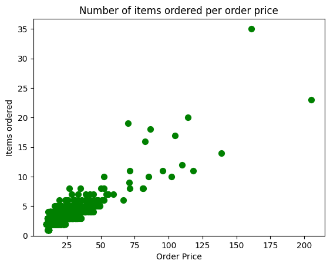
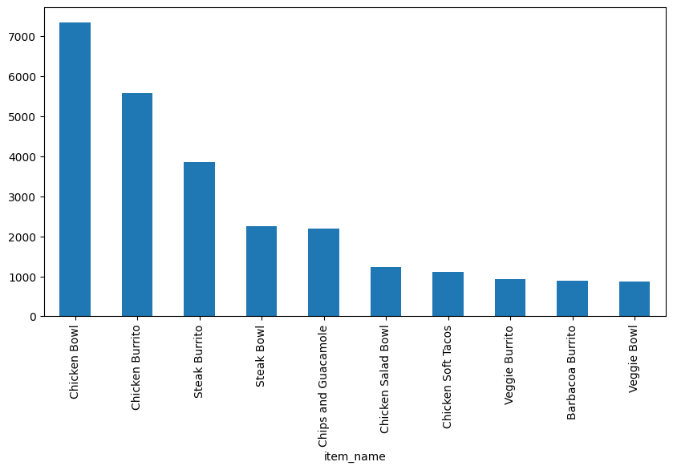

import pandas as pd
import matplotlib.pyplot as plt
from collections import Counter
# set this so the graphs open internally
%matplotlib inline03 chipotle Exercises
03 scores Exercises
Exercises-Chipotle 1
Exercises-chipotle 3
Visualizing Chipotle’s Data
This time we are going to pull data directly from the internet. Special thanks to: https://github.com/justmarkham for sharing the dataset and materials.
Step 1. Import the necessary libraries
import pandas as pd
import matplotlib.pyplot as plt
from collections import Counter
# set this so the graphs open internally
%matplotlib inlineStep 2. Import the dataset from this address.
Step 3. Assign it to a variable called chipo.
chipo = pd.read_csv('https://raw.githubusercontent.com/justmarkham/DAT8/master/data/chipotle.tsv',sep='\t')
chipo| order_id | quantity | item_name | choice_description | item_price | |
|---|---|---|---|---|---|
| 0 | 1 | 1 | Chips and Fresh Tomato Salsa | NaN | $2.39 |
| 1 | 1 | 1 | Izze | [Clementine] | $3.39 |
| 2 | 1 | 1 | Nantucket Nectar | [Apple] | $3.39 |
| 3 | 1 | 1 | Chips and Tomatillo-Green Chili Salsa | NaN | $2.39 |
| 4 | 2 | 2 | Chicken Bowl | [Tomatillo-Red Chili Salsa (Hot), [Black Beans... | $16.98 |
| ... | ... | ... | ... | ... | ... |
| 4617 | 1833 | 1 | Steak Burrito | [Fresh Tomato Salsa, [Rice, Black Beans, Sour ... | $11.75 |
| 4618 | 1833 | 1 | Steak Burrito | [Fresh Tomato Salsa, [Rice, Sour Cream, Cheese... | $11.75 |
| 4619 | 1834 | 1 | Chicken Salad Bowl | [Fresh Tomato Salsa, [Fajita Vegetables, Pinto... | $11.25 |
| 4620 | 1834 | 1 | Chicken Salad Bowl | [Fresh Tomato Salsa, [Fajita Vegetables, Lettu... | $8.75 |
| 4621 | 1834 | 1 | Chicken Salad Bowl | [Fresh Tomato Salsa, [Fajita Vegetables, Pinto... | $8.75 |
4622 rows × 5 columns
Step 4. See the first 10 entries
chipo.head(10)| order_id | quantity | item_name | choice_description | item_price | |
|---|---|---|---|---|---|
| 0 | 1 | 1 | Chips and Fresh Tomato Salsa | NaN | 2.39 |
| 1 | 1 | 1 | Izze | [Clementine] | 3.39 |
| 2 | 1 | 1 | Nantucket Nectar | [Apple] | 3.39 |
| 3 | 1 | 1 | Chips and Tomatillo-Green Chili Salsa | NaN | 2.39 |
| 4 | 2 | 2 | Chicken Bowl | [Tomatillo-Red Chili Salsa (Hot), [Black Beans... | 16.98 |
| 5 | 3 | 1 | Chicken Bowl | [Fresh Tomato Salsa (Mild), [Rice, Cheese, Sou... | 10.98 |
| 6 | 3 | 1 | Side of Chips | NaN | 1.69 |
| 7 | 4 | 1 | Steak Burrito | [Tomatillo Red Chili Salsa, [Fajita Vegetables... | 11.75 |
| 8 | 4 | 1 | Steak Soft Tacos | [Tomatillo Green Chili Salsa, [Pinto Beans, Ch... | 9.25 |
| 9 | 5 | 1 | Steak Burrito | [Fresh Tomato Salsa, [Rice, Black Beans, Pinto... | 9.25 |
Step 5. Create a histogram of the top 5 items bought
# get the Series of the names
x = chipo.item_name
# use the Counter class from collections to create a dictionary with keys(text) and frequency
letter_counts = Counter(x)
# convert the dictionary to a DataFrame
df = pd.DataFrame.from_dict(letter_counts, orient='index')
# sort the values from the top to the least value and slice the first 5 items
df = df[0].sort_values(ascending = True)[45:50]
# create the plot
df.plot(kind='bar')
# Set the title and labels
plt.xlabel('Items')
plt.ylabel('Number of Times Ordered')
plt.title('Most ordered Chipotle\'s Items')
# show the plot
plt.show()
Step 6. Create a scatterplot with the number of items orderered per order price
Hint: Price should be in the X-axis and Items ordered in the Y-axis
# create a list of prices
chipo.item_price = [float(value[1:-1]) for value in chipo.item_price] # strip the dollar sign and trailing space
# then groupby the orders and sum
orders = chipo.groupby('order_id').sum()
# creates the scatterplot
# plt.scatter(orders.quantity, orders.item_price, s = 50, c = 'green')
plt.scatter(x = orders.item_price, y = orders.quantity, s = 50, c = 'green')
# Set the title and labels
plt.xlabel('Order Price')
plt.ylabel('Items ordered')
plt.title('Number of items ordered per order price')
plt.ylim(0)
Step 7. BONUS: Create a question and a graph to answer your own question.
# 用柱形图显示商品销售额前10的商品
def parse_price(price):
return float(price[1:])
item_price_new = chipo['item_price'].apply(parse_price)
chipo['item_price_new']=item_price_new
a = chipo.groupby('item_name')['item_price_new'].sum()
b = a.sort_values(ascending=False)
b.head(10).plot(kind='bar' , figsize=(10,5))
Exercises-Euro12 2
Exercises-Occupation 1
Exercises-Scores 3
Exercises-World Food Facts 1
,’’)).astype(np.float64); # dollarizer = lambda x:float(x[1:-1]) # chipo.item_price = chipo.item_price.apply(dollarizer)
:::
#### Step 13.c. Check the item price type
::: {#cell-31 .cell execution_count=48}
``` {.python .cell-code}
df['item_price'].dtypesdtype('float64'):::
Step 14. How much was the revenue for the period in the dataset?
(df['quantity']*df['item_price']).sum()39237.02Step 15. How many orders were made in the period?
# Solution 1
g = df.groupby(['order_id'])
g.ngroups1834Step 16. What is the average revenue amount per order?
# Solution 1
df['revenue'] = df['quantity']*df['item_price']
order_grouped = df.groupby(by=['order_id']).sum()
order_grouped.mean()['revenue']--------------------------------------------------------------------------- TypeError Traceback (most recent call last) Cell In[57], line 5 3 df['revenue'] = df['quantity']*df['item_price'] 4 order_grouped = df.groupby(by=['order_id']).sum() ----> 5 order_grouped.mean()['revenue'] File ~\AppData\Local\Packages\PythonSoftwareFoundation.Python.3.11_qbz5n2kfra8p0\LocalCache\local-packages\Python311\site-packages\pandas\core\frame.py:11693, in DataFrame.mean(self, axis, skipna, numeric_only, **kwargs) 11685 @doc(make_doc("mean", ndim=2)) 11686 def mean( 11687 self, (...) 11691 **kwargs, 11692 ): > 11693 result = super().mean(axis, skipna, numeric_only, **kwargs) 11694 if isinstance(result, Series): 11695 result = result.__finalize__(self, method="mean") File ~\AppData\Local\Packages\PythonSoftwareFoundation.Python.3.11_qbz5n2kfra8p0\LocalCache\local-packages\Python311\site-packages\pandas\core\generic.py:12420, in NDFrame.mean(self, axis, skipna, numeric_only, **kwargs) 12413 def mean( 12414 self, 12415 axis: Axis | None = 0, (...) 12418 **kwargs, 12419 ) -> Series | float: > 12420 return self._stat_function( 12421 "mean", nanops.nanmean, axis, skipna, numeric_only, **kwargs 12422 ) File ~\AppData\Local\Packages\PythonSoftwareFoundation.Python.3.11_qbz5n2kfra8p0\LocalCache\local-packages\Python311\site-packages\pandas\core\generic.py:12377, in NDFrame._stat_function(self, name, func, axis, skipna, numeric_only, **kwargs) 12373 nv.validate_func(name, (), kwargs) 12375 validate_bool_kwarg(skipna, "skipna", none_allowed=False) > 12377 return self._reduce( 12378 func, name=name, axis=axis, skipna=skipna, numeric_only=numeric_only 12379 ) File ~\AppData\Local\Packages\PythonSoftwareFoundation.Python.3.11_qbz5n2kfra8p0\LocalCache\local-packages\Python311\site-packages\pandas\core\frame.py:11562, in DataFrame._reduce(self, op, name, axis, skipna, numeric_only, filter_type, **kwds) 11558 df = df.T 11560 # After possibly _get_data and transposing, we are now in the 11561 # simple case where we can use BlockManager.reduce > 11562 res = df._mgr.reduce(blk_func) 11563 out = df._constructor_from_mgr(res, axes=res.axes).iloc[0] 11564 if out_dtype is not None and out.dtype != "boolean": File ~\AppData\Local\Packages\PythonSoftwareFoundation.Python.3.11_qbz5n2kfra8p0\LocalCache\local-packages\Python311\site-packages\pandas\core\internals\managers.py:1500, in BlockManager.reduce(self, func) 1498 res_blocks: list[Block] = [] 1499 for blk in self.blocks: -> 1500 nbs = blk.reduce(func) 1501 res_blocks.extend(nbs) 1503 index = Index([None]) # placeholder File ~\AppData\Local\Packages\PythonSoftwareFoundation.Python.3.11_qbz5n2kfra8p0\LocalCache\local-packages\Python311\site-packages\pandas\core\internals\blocks.py:404, in Block.reduce(self, func) 398 @final 399 def reduce(self, func) -> list[Block]: 400 # We will apply the function and reshape the result into a single-row 401 # Block with the same mgr_locs; squeezing will be done at a higher level 402 assert self.ndim == 2 --> 404 result = func(self.values) 406 if self.values.ndim == 1: 407 res_values = result File ~\AppData\Local\Packages\PythonSoftwareFoundation.Python.3.11_qbz5n2kfra8p0\LocalCache\local-packages\Python311\site-packages\pandas\core\frame.py:11481, in DataFrame._reduce.<locals>.blk_func(values, axis) 11479 return np.array([result]) 11480 else: > 11481 return op(values, axis=axis, skipna=skipna, **kwds) File ~\AppData\Local\Packages\PythonSoftwareFoundation.Python.3.11_qbz5n2kfra8p0\LocalCache\local-packages\Python311\site-packages\pandas\core\nanops.py:147, in bottleneck_switch.__call__.<locals>.f(values, axis, skipna, **kwds) 145 result = alt(values, axis=axis, skipna=skipna, **kwds) 146 else: --> 147 result = alt(values, axis=axis, skipna=skipna, **kwds) 149 return result File ~\AppData\Local\Packages\PythonSoftwareFoundation.Python.3.11_qbz5n2kfra8p0\LocalCache\local-packages\Python311\site-packages\pandas\core\nanops.py:404, in _datetimelike_compat.<locals>.new_func(values, axis, skipna, mask, **kwargs) 401 if datetimelike and mask is None: 402 mask = isna(values) --> 404 result = func(values, axis=axis, skipna=skipna, mask=mask, **kwargs) 406 if datetimelike: 407 result = _wrap_results(result, orig_values.dtype, fill_value=iNaT) File ~\AppData\Local\Packages\PythonSoftwareFoundation.Python.3.11_qbz5n2kfra8p0\LocalCache\local-packages\Python311\site-packages\pandas\core\nanops.py:720, in nanmean(values, axis, skipna, mask) 718 count = _get_counts(values.shape, mask, axis, dtype=dtype_count) 719 the_sum = values.sum(axis, dtype=dtype_sum) --> 720 the_sum = _ensure_numeric(the_sum) 722 if axis is not None and getattr(the_sum, "ndim", False): 723 count = cast(np.ndarray, count) File ~\AppData\Local\Packages\PythonSoftwareFoundation.Python.3.11_qbz5n2kfra8p0\LocalCache\local-packages\Python311\site-packages\pandas\core\nanops.py:1686, in _ensure_numeric(x) 1683 inferred = lib.infer_dtype(x) 1684 if inferred in ["string", "mixed"]: 1685 # GH#44008, GH#36703 avoid casting e.g. strings to numeric -> 1686 raise TypeError(f"Could not convert {x} to numeric") 1687 try: 1688 x = x.astype(np.complex128) TypeError: Could not convert ['Chips and Fresh Tomato SalsaIzzeNantucket NectarChips and Tomatillo-Green Chili SalsaChicken BowlChicken BowlSide of ChipsSteak BurritoSteak Soft TacosSteak BurritoChips and GuacamoleChicken Crispy TacosChicken Soft TacosChicken BowlChips and GuacamoleChips and Tomatillo-Green Chili SalsaChicken BurritoChicken BurritoCanned SodaChicken BowlChips and GuacamoleBarbacoa BurritoNantucket NectarChicken BurritoIzzeChips and Fresh Tomato SalsaChicken BowlCarnitas BurritoCanned SodaChicken BurritoChips and Tomatillo-Green Chili SalsaSteak BurritoSide of ChipsCarnitas BowlBottled WaterChicken Soft TacosChicken Soft TacosChips and GuacamoleChips and Tomatillo Green Chili SalsaBarbacoa BowlChipsChips and GuacamoleChicken BowlSteak BurritoChicken Salad BowlChicken BurritoSteak BurritoIzzeSteak BurritoChips and GuacamoleSteak BurritoCanned SodaChicken BurritoCanned SodaSteak BowlChips and Fresh Tomato SalsaBarbacoa Soft TacosVeggie BurritoBarbacoa BowlChipsChips and GuacamoleSteak Soft TacosVeggie BowlChicken BurritoSteak BurritoSteak Soft TacosIzzeSteak BurritoChicken BurritoSteak BurritoSide of ChipsSteak BurritoChips and GuacamoleChicken BurritoChips and GuacamoleChicken Soft TacosChicken BowlChipsChicken BowlChicken Soft TacosChipsBarbacoa BurritoChicken BurritoChicken BurritoSteak Soft TacosVeggie BowlSteak BowlBottled WaterCarnitas BurritoChips and Fresh Tomato SalsaSteak BowlSteak BowlSteak Crispy TacosCarnitas BurritoChips and GuacamoleBarbacoa BowlChips and GuacamoleCarnitas BowlChicken BurritoChicken BowlChips and GuacamoleSteak BurritoSteak BowlChips and GuacamoleVeggie BurritoNantucket NectarSteak BurritoCanned SodaSteak BurritoChips and GuacamoleChicken BowlChips and Tomatillo Red Chili SalsaChips and GuacamoleChips and Tomatillo-Green Chili SalsaChicken BurritoBarbacoa BowlChicken BurritoCanned SodaSteak Soft TacosChips and GuacamoleChicken BurritoBarbacoa BurritoChips and GuacamoleChicken BowlChips and GuacamoleSteak BurritoCanned SodaBarbacoa BowlChips and Tomatillo Red Chili SalsaChips and GuacamoleBarbacoa BurritoChips and GuacamoleChicken BurritoChips and Tomatillo-Green Chili SalsaChicken BurritoChicken Salad BowlBarbacoa BowlChips and GuacamoleChicken BowlChips and GuacamoleChicken BowlChips and GuacamoleChicken BowlVeggie BowlBarbacoa BurritoCarnitas BowlChips and GuacamoleSteak BurritoSteak BurritoSide of ChipsChicken BurritoChips and GuacamoleChicken BurritoChips and Tomatillo-Green Chili SalsaChicken BowlChips and GuacamoleChips and GuacamoleVeggie BowlSteak BurritoChicken BurritoChicken BowlChicken BurritoCanned SodaCarnitas BowlVeggie BowlChips and Tomatillo-Green Chili SalsaChips and GuacamoleChicken BurritoBarbacoa Crispy TacosChicken BurritoChicken BurritoCanned SodaChicken BurritoNantucket NectarChicken BurritoSteak Soft TacosChicken BowlSteak BurritoChicken BurritoCanned SodaCanned SodaBarbacoa Soft TacosChicken BowlChips and Fresh Tomato SalsaSteak Soft TacosChips and GuacamoleVeggie Salad BowlSteak BowlChicken BurritoChicken BurritoSteak BurritoChips and Roasted Chili-Corn SalsaVeggie BowlChicken BowlChips and Fresh Tomato SalsaCanned SodaSteak BurritoChicken BurritoChips and Tomatillo-Green Chili SalsaChicken BowlCanned SodaChips and GuacamoleChicken BurritoChicken BurritoChicken BurritoNantucket NectarChicken BowlSteak BowlChipsChicken BowlVeggie BowlChicken BowlChips and GuacamoleChicken Salad BowlChips and GuacamoleSteak BowlChicken BurritoChicken Crispy TacosChicken BowlBarbacoa BowlChicken BowlChipsBarbacoa BurritoChipsChicken BowlVeggie BurritoChipsSteak BurritoCanned SodaSteak BurritoChips and GuacamoleChicken BowlChips and Tomatillo Green Chili SalsaChips and Roasted Chili Corn SalsaSteak BurritoChips and Tomatillo Green Chili SalsaSteak BurritoCarnitas Soft TacosSteak BurritoCarnitas BurritoChips and Fresh Tomato SalsaChicken BurritoChicken BurritoSteak BowlChicken BurritoSteak BurritoCanned SodaCanned SodaCanned SodaBarbacoa BurritoChicken SaladCanned SodaChicken BowlVeggie BowlBarbacoa BowlBarbacoa Crispy TacosChicken Salad BowlChicken BowlSteak BurritoSteak BowlSteak BowlCanned SodaSteak BowlCanned Soft DrinkSteak BurritoChips and Fresh Tomato SalsaSteak Soft TacosChips and Fresh Tomato SalsaBarbacoa Soft TacosChips and GuacamoleChicken BurritoChips and Tomatillo-Green Chili SalsaChicken BurritoChicken BurritoChicken BurritoSide of ChipsChicken BurritoChips and GuacamoleSteak Soft TacosSide of ChipsCanned SodaSteak Salad BowlChicken BowlChipsChicken BowlSteak BowlSteak BowlVeggie BowlChips and GuacamoleChicken BurritoChicken BowlChicken BowlCanned Soft DrinkSteak Soft TacosChips and GuacamoleVeggie Salad BowlSteak BurritoSteak Burrito6 Pack Soft DrinkSteak Soft TacosChips and Tomatillo-Red Chili SalsaChicken BowlChips and Fresh Tomato SalsaChicken BowlChicken BowlChipsSteak BowlSide of ChipsChicken BurritoChicken BurritoChipsChips and GuacamoleChicken BowlChicken Soft TacosSteak BurritoChicken Salad BowlChicken BurritoCanned SodaBottled WaterChicken BowlCanned Soft DrinkChipsSteak BurritoChicken BurritoChicken Soft TacosSteak BurritoChips and Fresh Tomato SalsaChicken BowlChipsBottled WaterChicken BurritoChipsChicken Soft TacosChicken Soft TacosBarbacoa BurritoSteak BurritoSteak BowlCanned Soft DrinkChicken BurritoChicken BurritoChips and Guacamole6 Pack Soft DrinkSteak Soft TacosChips and Fresh Tomato SalsaChicken Soft TacosChips and GuacamoleCanned Soft DrinkCanned Soft DrinkChicken BowlChips and Tomatillo-Red Chili SalsaCanned SodaChicken BurritoCanned SodaSteak BurritoChicken Soft TacosChicken BurritoChips and Tomatillo Red Chili Salsa6 Pack Soft DrinkSteak BurritoIzzeIzzeSteak BurritoChicken BurritoChicken BurritoChipsChicken Crispy TacosChips and Tomatillo Green Chili SalsaChicken BurritoCanned Soft DrinkSteak BurritoCanned SodaChicken BowlChicken BurritoCarnitas BurritoChips and Fresh Tomato SalsaBarbacoa BurritoBottled WaterSteak BurritoCanned SodaChicken BowlCanned Soft DrinkCanned Soft DrinkChicken BurritoSteak BurritoChipsBarbacoa BurritoSide of ChipsSteak Bowl6 Pack Soft DrinkChicken BurritoSteak Soft TacosChicken BurritoChips and GuacamoleCanned Soft DrinkVeggie BurritoChips and GuacamoleChicken BurritoBarbacoa BurritoChicken BurritoCarnitas BowlChicken BurritoCanned Soft DrinkSteak BurritoCanned Soft DrinkSteak BurritoCarnitas Soft TacosChips and GuacamoleChicken BowlChipsChicken BowlCanned Soft DrinkChicken BowlSteak BowlSide of ChipsCanned SodaChicken BowlChips and Guacamole6 Pack Soft DrinkBarbacoa BowlChicken Soft TacosSteak BurritoCarnitas BurritoChicken BowlChicken BurritoChipsChips and Fresh Tomato SalsaChicken Soft TacosChicken Soft TacosSteak BowlBarbacoa Crispy TacosIzzeSteak BurritoSide of ChipsCarnitas BowlCanned SodaVeggie BurritoNantucket NectarSteak Crispy TacosCanned SodaSteak BurritoChicken Soft TacosChicken BurritoChips and GuacamoleChips and Tomatillo Red Chili SalsaSteak BowlBowlChicken BurritoSteak BurritoChicken BurritoChicken BowlBarbacoa BurritoChicken BurritoChicken BurritoCarnitas Soft TacosChicken BowlVeggie Salad BowlChicken BowlChicken BurritoChips and Fresh Tomato SalsaCanned Soft DrinkChicken BowlSide of ChipsCarnitas BurritoChicken BurritoChicken BowlChicken BowlChips and GuacamoleVeggie BurritoChips and GuacamoleVeggie BurritoChips and GuacamoleBarbacoa BowlSide of ChipsCanned SodaChicken Soft TacosBottled WaterChicken BurritoSide of ChipsCarnitas BurritoVeggie BurritoChicken BowlSteak BurritoChicken BurritoChicken BowlChicken BowlBarbacoa Crispy TacosChicken BurritoChicken BurritoChicken BowlChipsChicken BowlSteak BowlCanned Soft DrinkChips and GuacamoleSteak Soft TacosChips and GuacamoleVeggie Salad BowlVeggie BurritoChips and GuacamoleSteak BowlSteak BowlChicken BowlBarbacoa BurritoSteak BurritoChicken Soft TacosCanned Soft DrinkCarnitas BowlCanned Soft DrinkSteak BurritoChicken BowlBurritoBurritoVeggie BowlCanned Soft DrinkChips and GuacamoleVeggie BowlChipsChicken BurritoChips and GuacamoleBurritoCrispy TacosCrispy TacosSteak BurritoChips and GuacamoleSteak BowlSide of ChipsChicken Salad BowlChicken BowlChicken Salad BowlChicken Salad BowlVeggie BowlChicken BurritoChips and Fresh Tomato SalsaChicken BurritoSteak BurritoVeggie BurritoChips and GuacamoleChips and Tomatillo Green Chili SalsaCarnitas BowlSteak BurritoBottled WaterCanned Soft DrinkChicken BowlBarbacoa BurritoChips and GuacamoleChicken BowlChicken BowlChips and GuacamoleChicken BowlSteak BurritoChips and GuacamoleChicken BurritoSteak Burrito6 Pack Soft DrinkCarnitas Crispy TacosVeggie BowlChicken BowlBarbacoa BurritoChipsSteak BowlChips and GuacamoleBarbacoa BurritoChips and Roasted Chili Corn SalsaSteak BurritoChicken BurritoCarnitas Soft TacosCanned Soft DrinkCanned Soft DrinkChicken Salad BowlChicken BurritoSteak Soft TacosChips and GuacamoleSteak BurritoSteak BurritoBarbacoa BurritoBarbacoa BurritoSteak BurritoChicken Soft TacosChips and Tomatillo-Green Chili SalsaIzzeIzzeSteak Crispy TacosSteak BurritoChicken BowlChipsChicken Salad BowlBarbacoa BurritoChips and GuacamoleChicken BurritoChicken BurritoCarnitas Soft TacosChicken Salad BowlBarbacoa BowlChips and Tomatillo Red Chili SalsaBottled WaterSteak BowlChicken BowlSide of ChipsChicken Crispy TacosChicken BurritoChicken Crispy TacosNantucket NectarBarbacoa BurritoChips and GuacamoleChicken BowlChips and GuacamoleSteak Salad BowlSteak Salad BowlChicken BurritoChips and Fresh Tomato SalsaCanned Soft DrinkBarbacoa Soft TacosChicken BurritoSteak Salad BowlChicken BowlBarbacoa BurritoChipsChipsCanned Soft DrinkVeggie BowlChips and GuacamoleChicken BurritoCanned SodaVeggie BurritoChips and GuacamoleChicken BowlCarnitas BurritoChips and Tomatillo Green Chili SalsaChips and GuacamoleSteak BurritoChicken Soft TacosVeggie BurritoChips and GuacamoleChicken Salad BowlChicken BurritoCanned Soft DrinkChicken BurritoChicken BowlSteak Burrito6 Pack Soft DrinkChicken BurritoChicken Soft TacosChips and GuacamoleVeggie BowlChips and GuacamoleSteak BurritoCanned SodaChicken BowlChips and Roasted Chili-Corn SalsaSteak BurritoSide of ChipsCanned Soft DrinkCarnitas BurritoBottled WaterChicken BowlChips and Tomatillo Green Chili SalsaChicken BurritoChips and GuacamoleSteak BurritoChicken BurritoChicken BowlSide of ChipsVeggie BurritoChips and GuacamoleSteak SaladSteak BowlChips and GuacamoleCarnitas Soft TacosChicken BowlChips and GuacamoleCanned Soft DrinkChips and GuacamoleChicken BurritoBowlChips and Mild Fresh Tomato SalsaBurritoChips and GuacamoleVeggie BowlChips and GuacamoleSteak BowlChips and GuacamoleChicken BurritoCanned Soft DrinkSteak BurritoCanned Soft DrinkChicken BurritoChipsChicken BowlChips and GuacamoleCanned Soft DrinkSteak BowlCarnitas BurritoChips and Tomatillo-Red Chili SalsaChicken Salad BowlChips and GuacamoleCanned Soft DrinkSteak BurritoChicken Soft TacosCanned SodaChicken BurritoCanned SodaBottled WaterChicken Salad BowlChips and Tomatillo Green Chili SalsaCanned Soft DrinkBottled WaterChicken BowlSteak BurritoChips and Roasted Chili Corn SalsaCanned Soft DrinkVeggie BurritoChips and GuacamoleSteak BurritoChips and GuacamoleVeggie BurritoChicken BurritoCanned Soft DrinkBarbacoa BurritoSide of ChipsChicken BowlCanned Soft Drink6 Pack Soft DrinkChicken BowlBarbacoa BurritoChicken BurritoChips and Fresh Tomato SalsaChicken BurritoSteak BurritoSteak BurritoSteak Crispy TacosChips and Fresh Tomato SalsaChips and GuacamoleVeggie BurritoChicken BowlChicken BurritoCanned Soft DrinkSteak BurritoVeggie BowlVeggie Soft TacosChicken BurritoCanned Soft DrinkSteak BurritoBarbacoa Burrito6 Pack Soft DrinkChips and GuacamoleVeggie BurritoChicken BurritoChipsChicken BurritoSteak Salad BowlBarbacoa BowlSide of ChipsSteak SaladSteak BowlChips and GuacamoleCarnitas Soft TacosBarbacoa BurritoSteak BowlChipsBurritoBurritoVeggie BurritoChicken Salad BowlBarbacoa Crispy TacosChips and GuacamoleChicken BowlCanned Soft DrinkCarnitas BurritoChicken Crispy TacosCanned Soft DrinkChips and GuacamoleVeggie BurritoChicken BowlChicken BowlSteak Crispy TacosChicken BowlChipsCanned Soft DrinkChicken BurritoCanned SodaBottled WaterVeggie Soft TacosChips and Tomatillo Green Chili SalsaCanned Soft DrinkSteak BowlCanned Soft DrinkChipsChicken BurritoCanned Soft DrinkChips and GuacamoleChicken BurritoCanned Soft DrinkChips and GuacamoleChicken BurritoChicken BowlChicken BowlChicken BurritoVeggie BurritoChicken BowlChips and GuacamoleChicken BurritoChips and GuacamoleSide of ChipsBarbacoa BowlBarbacoa BowlChicken BowlSteak BurritoCanned SodaSteak BurritoChips and Tomatillo Green Chili SalsaChicken BurritoSteak BurritoChips and GuacamoleVeggie BurritoChicken BurritoChicken BowlChicken Salad BowlChicken BowlBottled WaterChips and GuacamoleCarnitas Soft TacosCanned SodaCarnitas BowlChicken BurritoChips and GuacamoleSteak BowlChips and GuacamoleVeggie BurritoChipsBarbacoa Crispy TacosChicken Crispy TacosVeggie BowlVeggie BowlCarnitas BowlChicken BurritoCarnitas BurritoChicken BurritoChicken BowlChips and Tomatillo Red Chili SalsaChips and GuacamoleBarbacoa BowlChips and Roasted Chili Corn SalsaSteak BowlVeggie BowlChicken BowlChips and GuacamoleVeggie BowlVeggie BurritoChips and Fresh Tomato SalsaChicken BowlCanned Soft DrinkCarnitas BowlChips and GuacamoleBarbacoa BurritoBarbacoa BurritoChips and GuacamoleChicken BurritoBarbacoa Soft TacosChicken BurritoBarbacoa BurritoSteak BurritoSteak BurritoSteak BurritoSteak BurritoChicken Salad BowlCarnitas BurritoChicken Crispy TacosCanned Soft DrinkChicken BowlChipsCanned Soft DrinkChicken BowlChicken Soft TacosCanned Soft DrinkVeggie BurritoBottled WaterChicken Soft TacosChicken BowlBarbacoa Burrito6 Pack Soft DrinkChips and GuacamoleChicken BowlChips and GuacamoleChicken Soft TacosCanned Soft DrinkChicken Crispy TacosSteak BurritoVeggie BowlBarbacoa BurritoBottled WaterChicken BowlVeggie BurritoChicken BowlSteak SaladChips and GuacamoleChicken BurritoChips and GuacamoleSteak BurritoSide of ChipsSteak BowlChicken BowlVeggie BowlChips and GuacamoleBarbacoa BurritoCanned Soft DrinkSteak BowlChips and Roasted Chili Corn SalsaSteak BurritoSteak BurritoCanned SodaSteak BowlSteak BurritoChicken BurritoSide of ChipsSteak BurritoChicken BowlChips and Tomatillo Green Chili SalsaCanned Soft DrinkSteak Crispy TacosBarbacoa BowlChicken BowlChipsBottled WaterChicken Soft TacosChicken Soft TacosNantucket NectarSteak BowlChips and GuacamoleChicken BowlChips and GuacamoleChicken BowlVeggie BurritoChipsChicken BowlChicken BowlSide of ChipsVeggie BowlChicken BowlCanned Soft DrinkChicken BurritoSteak BurritoSteak BurritoSteak BurritoBottled WaterChicken BowlChips and GuacamoleChicken Crispy TacosChips and Fresh Tomato SalsaChicken BowlChipsChips and GuacamoleChicken BurritoSteak BowlChips and GuacamoleChicken BurritoSide of ChipsCanned SodaSteak BurritoCanned SodaCarnitas BurritoVeggie Salad BowlSteak Soft TacosChips and Fresh Tomato SalsaCanned Soft DrinkCanned Soft DrinkChicken BurritoChicken Soft TacosSteak BurritoSteak Soft TacosChicken Soft TacosBottled WaterChips and GuacamoleVeggie BurritoVeggie BurritoCarnitas BurritoChicken BowlChicken BowlChicken BowlChips and GuacamoleChicken BowlChicken BowlBarbacoa BurritoChips and Tomatillo-Green Chili SalsaChicken BurritoCarnitas BowlChipsChicken BurritoCanned Soft DrinkBarbacoa Soft TacosCanned Soft DrinkChicken BurritoSteak BurritoCanned Soft DrinkChicken BowlChicken BowlChicken BowlChicken BowlChicken BurritoCanned Soft DrinkChicken Soft TacosChicken BowlChicken BowlBottled WaterBottled WaterChicken BowlChips and GuacamoleChicken Crispy TacosCanned Soft DrinkCarnitas Crispy TacosChicken BurritoChips and Tomatillo-Green Chili SalsaSteak BowlChips and GuacamoleSteak BurritoChicken BowlSteak BurritoSide of ChipsChicken BowlChips and Tomatillo-Green Chili SalsaBarbacoa Crispy TacosSteak Crispy TacosChicken BurritoChips and GuacamoleChicken BowlChips and GuacamoleSteak Burrito6 Pack Soft DrinkChicken Crispy TacosChicken BurritoChicken BurritoCanned SodaSide of ChipsBarbacoa BowlChips and GuacamoleChicken BowlCanned Soft DrinkChips and Fresh Tomato SalsaChips and GuacamoleVeggie BurritoSteak BowlSteak BowlChipsSteak BowlChicken BowlChipsCanned Soft DrinkChicken BurritoChipsCanned Soft DrinkChicken BurritoChicken Burrito6 Pack Soft DrinkSide of ChipsSteak BowlChicken BurritoBarbacoa BurritoChicken BurritoCanned SodaChicken BowlIzzeChicken BowlChipsCanned Soft DrinkCarnitas BurritoChicken BurritoChicken SaladChicken BowlChips and Roasted Chili Corn SalsaBarbacoa BowlSteak BurritoSteak BurritoChips and GuacamoleSteak BurritoChicken BowlVeggie BurritoChips and GuacamoleSide of ChipsSteak BowlChicken BowlChips and GuacamoleBottled WaterSteak BowlChipsSteak BurritoChips and Tomatillo-Green Chili SalsaChicken BurritoChips and Fresh Tomato SalsaCanned Soft DrinkChicken BowlChipsCanned Soft DrinkCanned SodaCanned SodaSteak BurritoChicken Soft TacosChips and Fresh Tomato SalsaSteak BowlCarnitas BurritoCanned Soft DrinkChicken BurritoBarbacoa BurritoChips and Tomatillo-Red Chili SalsaSteak BurritoChips and GuacamoleChicken BowlVeggie BurritoChicken BowlChicken BurritoChicken BowlChicken Salad BowlChicken Salad BowlSteak BowlChicken BowlChips and GuacamoleSteak BurritoCanned Soft DrinkChicken BurritoChicken BurritoChips and Fresh Tomato SalsaBarbacoa BurritoSide of ChipsChicken BurritoChips and GuacamoleChicken Bowl6 Pack Soft DrinkChicken BurritoChips and GuacamoleCarnitas BurritoChips and GuacamoleBarbacoa Soft TacosSteak BurritoChips and GuacamoleCarnitas Salad BowlSteak BowlChicken BowlChips and Fresh Tomato SalsaBottled WaterChips and GuacamoleChicken BurritoSteak BurritoBottled WaterSteak BurritoCanned SodaChips and GuacamoleSteak BurritoVeggie BurritoSteak BurritoChips and GuacamoleSteak BowlBarbacoa Soft TacosChips and Roasted Chili Corn SalsaBarbacoa BurritoChicken BurritoSteak BurritoSteak BurritoChicken BurritoChicken BowlChips and Tomatillo Green Chili SalsaChips and GuacamoleSteak Salad BowlChicken BurritoChicken BurritoSide of ChipsChicken BowlChipsCanned Soft DrinkChicken Burrito6 Pack Soft DrinkSteak Crispy TacosChipsChicken BurritoChips and GuacamoleChicken BowlCanned Soft DrinkBarbacoa BowlBarbacoa BowlSteak BowlBottled WaterChicken BowlBarbacoa BowlChips and Roasted Chili-Corn SalsaChips and Tomatillo-Red Chili SalsaBottled WaterChicken BowlChips and GuacamoleChicken BurritoCarnitas Soft TacosBarbacoa BurritoChicken BowlChicken Salad BowlChips and GuacamoleChips and Tomatillo Red Chili SalsaSteak BowlVeggie BurritoChicken Soft TacosCarnitas Crispy TacosSide of ChipsCarnitas BurritoChicken BowlSteak BurritoCarnitas BowlChicken BurritoBarbacoa BurritoChicken BurritoChicken BowlChicken BowlChicken BowlChicken BowlChicken BurritoChips and GuacamoleChicken BowlChicken BurritoCarnitas BowlIzzeChips and GuacamoleSteak BurritoCanned SodaCanned SodaChips and Tomatillo-Green Chili SalsaChicken BurritoChips and GuacamoleChicken BowlChicken BowlChips and GuacamoleSteak BowlChips and GuacamoleChicken BowlChipsCanned Soft DrinkBarbacoa Salad BowlChips and Fresh Tomato SalsaSteak BurritoCanned Soft DrinkChicken BurritoChips and GuacamoleBarbacoa BowlBarbacoa BowlChips and Fresh Tomato SalsaCarnitas BurritoChicken BurritoBarbacoa Soft TacosChips and Fresh Tomato SalsaVeggie BowlCanned Soft DrinkCarnitas BowlCanned Soft DrinkSteak BowlChips and Fresh Tomato SalsaCanned Soft DrinkChicken Soft TacosCanned Soft DrinkChicken BurritoVeggie BurritoChips and GuacamoleChicken BurritoSteak BurritoVeggie BurritoChips and Fresh Tomato SalsaChips and GuacamoleChips and Tomatillo Green Chili Salsa6 Pack Soft DrinkVeggie BurritoSteak BurritoChips and Tomatillo-Green Chili SalsaBarbacoa BowlChicken BowlChipsChicken Soft TacosChips and GuacamoleChicken BurritoSide of ChipsChicken BurritoSteak BurritoChicken BurritoChips and GuacamoleSteak BurritoSteak BurritoChips and GuacamoleChicken Soft Tacos6 Pack Soft DrinkChicken BurritoChicken BowlSteak BurritoCanned Soft DrinkChips and GuacamoleChicken BurritoSide of ChipsCarnitas BurritoChips and GuacamoleSteak BurritoCanned SodaChicken BowlChips and Roasted Chili Corn SalsaSteak BowlCarnitas BowlChips and GuacamoleChicken BowlVeggie BowlChicken BowlChicken BowlBarbacoa BurritoChipsChicken BowlChicken BowlChips and GuacamoleSide of ChipsSteak BowlChicken BowlSide of ChipsSteak BurritoChicken BurritoSteak Salad BowlSteak BowlChips and Tomatillo Red Chili SalsaSteak BowlChips and Fresh Tomato SalsaVeggie Salad BowlChips and GuacamoleChips and GuacamoleVeggie BowlChicken BurritoSteak BurritoChicken BurritoSteak BurritoChips and GuacamoleSteak BurritoBarbacoa Salad BowlSteak Crispy TacosChicken BurritoChicken BowlSteak BowlChicken BurritoChicken BowlSteak BurritoBarbacoa Soft TacosChips and GuacamoleChicken BurritoCarnitas BurritoCanned Soft DrinkSteak BurritoSide of ChipsCarnitas BowlChipsCanned Soft DrinkCarnitas BowlChicken Crispy TacosChips and GuacamoleBarbacoa BowlChips and Tomatillo Red Chili SalsaVeggie BurritoChicken BurritoChips and GuacamoleChicken Salad BowlSteak Soft TacosSteak BowlSide of ChipsNantucket NectarBarbacoa BowlChips and Roasted Chili Corn SalsaCarnitas BowlSide of ChipsChicken Soft TacosChicken BurritoVeggie BowlChips and Fresh Tomato SalsaSteak Soft TacosSide of ChipsChicken BowlChipsCanned Soft DrinkChicken BowlChips and Roasted Chili Corn SalsaSteak BurritoCanned Soft DrinkVeggie BowlCanned Soft DrinkCarnitas BowlCanned Soft DrinkChicken BowlBottled WaterChicken Soft TacosCanned Soft DrinkChips and Tomatillo Red Chili SalsaBarbacoa BowlSteak BurritoChicken BowlChicken BowlChipsSteak BurritoCanned Soft DrinkCarnitas Soft TacosBarbacoa Soft Tacos6 Pack Soft DrinkCarnitas BowlVeggie BurritoVeggie Soft TacosCanned SodaChicken BowlChicken BurritoCanned Soft DrinkChipsChicken BowlBottled WaterChicken BurritoVeggie BowlChicken BowlChicken BurritoChicken BowlBottled WaterCanned Soft DrinkBottled WaterChicken BowlCanned Soft DrinkChipsSaladSaladChips and GuacamoleBarbacoa BowlBarbacoa Salad BowlBarbacoa BowlBarbacoa BowlBarbacoa Salad BowlChicken Salad BowlChips and GuacamoleChicken BurritoBottled WaterChicken Soft TacosChicken BowlVeggie BowlChicken BowlCarnitas BowlCanned SodaChicken BowlVeggie BowlChicken BurritoChicken BurritoBottled WaterCarnitas Soft TacosChicken Soft TacosChips and GuacamoleVeggie BurritoVeggie BowlChicken BowlChicken BurritoChicken BurritoChicken BurritoSteak BowlBottled WaterChicken BurritoChicken BowlChips and Roasted Chili Corn SalsaSteak Crispy TacosChicken BurritoSteak BurritoVeggie BowlChips and GuacamoleChicken BowlCanned SodaChips and Roasted Chili-Corn SalsaVeggie BurritoChicken Salad BowlSteak BowlCarnitas BurritoChicken BurritoChicken BurritoChips and Fresh Tomato SalsaChicken BurritoChicken Soft TacosChips and GuacamoleSteak BurritoChips and GuacamoleChicken Salad BowlChipsCanned Soft DrinkChicken BowlSteak BowlChicken Soft TacosBottled WaterChicken BowlChipsCanned Soft DrinkChicken BurritoSteak BowlChicken Salad BowlChicken BowlBottled WaterChicken BurritoCanned Soft DrinkChips and GuacamoleChicken Soft TacosChicken BowlChips and Tomatillo Red Chili SalsaCanned Soft DrinkChicken BurritoChips and Fresh Tomato SalsaCanned Soft DrinkChicken Soft TacosVeggie BurritoChips and Fresh Tomato SalsaChicken BowlCanned Soft DrinkChicken BurritoChicken BurritoSteak BowlChicken BowlSteak Salad BowlCanned Soft DrinkChicken BowlChipsCanned Soft DrinkSteak BurritoCanned SodaChicken BowlChips and GuacamoleChicken BowlChicken BowlChips and GuacamoleSteak BurritoChips and Tomatillo Green Chili SalsaChicken BowlChicken BurritoSteak BurritoChicken BurritoChicken BowlChicken Salad BowlChicken BowlChips and GuacamoleCanned Soft DrinkChicken BowlChicken BowlChicken BowlBarbacoa BurritoBarbacoa BurritoChips and Tomatillo-Red Chili SalsaChips and Tomatillo-Red Chili SalsaChips and GuacamoleChicken BowlChips and GuacamoleChipsSteak BowlCanned Soft DrinkChicken BurritoSteak Soft TacosChicken BowlChips and GuacamoleChicken BowlChipsChicken Salad BowlChips and GuacamoleChicken BurritoChicken BurritoCanned Soft DrinkChicken BowlChipsChicken BowlChips and Roasted Chili Corn SalsaSteak BowlCanned Soft DrinkSteak BurritoCanned Soft DrinkChicken Soft TacosCanned Soft DrinkChips and GuacamoleSteak BowlChips and GuacamoleChicken BurritoSteak BowlChicken BurritoChips and Tomatillo Green Chili SalsaChicken BurritoChicken BowlSteak Salad BowlChips and GuacamoleChips and Tomatillo Green Chili SalsaCanned Soft DrinkChicken BowlChips and GuacamoleChips and Tomatillo Green Chili SalsaCanned Soft DrinkChicken BowlChipsCanned Soft DrinkSteak BurritoChips and Tomatillo Green Chili SalsaBarbacoa BurritoNantucket NectarSteak BurritoCarnitas Soft TacosChicken BowlChips and Tomatillo Green Chili SalsaSteak Salad BowlBottled WaterChicken BowlChips and Tomatillo Green Chili SalsaCarnitas BowlChicken BurritoChicken BowlChips and Roasted Chili Corn SalsaChicken BowlBarbacoa BurritoChipsChicken Salad BowlChicken BowlChicken BowlChicken BowlChipsChicken BurritoCanned Soft DrinkChipsChicken BowlChicken BowlIzzeIzzeChicken BurritoChicken Soft TacosChips and Tomatillo-Green Chili SalsaChicken BurritoSteak Soft TacosSteak BowlCanned Soft DrinkChips and Tomatillo Red Chili SalsaChicken Salad BowlVeggie BowlSteak BowlChips and GuacamoleBottled WaterNantucket NectarCarnitas BurritoChips and Roasted Chili-Corn SalsaChicken BowlChipsVeggie BurritoCarnitas Crispy TacosSteak BurritoChips and GuacamoleSteak BurritoChips and GuacamoleSteak BurritoChicken BowlChicken BurritoSteak BurritoChicken BurritoBarbacoa Soft TacosBarbacoa BowlVeggie BowlChicken BowlChips and GuacamoleChips and GuacamoleBarbacoa BurritoChicken BowlBarbacoa BowlChicken BowlVeggie BurritoVeggie Crispy TacosChicken BurritoChipsChicken BurritoChicken Soft TacosChips and Roasted Chili Corn SalsaChicken BurritoChicken BowlChicken BurritoCanned SodaChicken BurritoChipsChips and Tomatillo Red Chili SalsaCanned Soft DrinkChicken BurritoCarnitas Soft TacosBarbacoa Soft TacosBarbacoa BowlChips and Tomatillo Red Chili SalsaChicken BowlChipsCanned Soft DrinkSteak BurritoChips and GuacamoleCarnitas BurritoChipsCarnitas BowlIzzeSteak BurritoChicken Soft TacosChicken BowlChicken BowlChips and GuacamoleChicken BowlChipsCanned Soft DrinkSteak BurritoChips and GuacamoleSteak BurritoChips and Fresh Tomato SalsaChicken BowlVeggie SaladVeggie BurritoChicken Soft TacosChips and GuacamoleChicken BurritoVeggie Soft TacosChicken BurritoChicken BowlChips and GuacamoleChicken BowlSide of ChipsChicken BowlNantucket NectarChicken BurritoChicken Salad BowlSteak BurritoChicken BurritoChicken BowlChicken BurritoSteak BurritoChicken BurritoSteak BurritoChicken BowlSteak BurritoChicken BurritoChicken BowlSide of ChipsSteak Soft TacosSteak BowlChicken BurritoSide of ChipsSteak BowlChipsBottled WaterChicken BurritoBottled WaterChicken BowlChicken BowlChips and Tomatillo Red Chili SalsaChicken BowlSide of ChipsChicken BowlChips and Tomatillo Red Chili SalsaCanned Soft DrinkChicken Salad BowlChipsCarnitas BowlChicken BowlChicken BowlChicken BowlSteak BowlCanned Soft DrinkBarbacoa BowlChicken BurritoChicken BurritoVeggie BowlChips and GuacamoleChicken BurritoBottled WaterSteak BurritoBarbacoa Soft Tacos6 Pack Soft DrinkChicken Salad BowlChips and Guacamole6 Pack Soft DrinkChicken BowlCanned Soft DrinkChipsChicken BowlChips and Tomatillo-Red Chili SalsaChicken BurritoSteak BurritoChips and GuacamoleCarnitas BowlVeggie BurritoSteak BurritoChips and Fresh Tomato SalsaSteak BurritoCarnitas Soft TacosSteak BurritoChicken BurritoChicken BurritoChicken BurritoChicken BowlVeggie BurritoSteak BowlChicken BowlChicken Soft TacosChipsChicken BowlChipsChips and GuacamoleSteak BowlChicken BowlChips and Fresh Tomato SalsaCarnitas Soft TacosCanned Soft DrinkCanned Soft DrinkCanned Soft DrinkCanned Soft DrinkChicken BowlChipsChicken BowlSide of ChipsChicken BowlBottled WaterChicken BurritoChicken Soft TacosChicken BowlChips and GuacamoleBarbacoa BowlCanned SodaChicken Salad BowlCanned Soft DrinkChicken BurritoChips and Fresh Tomato SalsaChicken Soft TacosChicken BowlBarbacoa BurritoChicken Salad BowlChips and GuacamoleChicken Salad BowlSteak Salad BowlSteak BurritoChicken Soft TacosChicken BurritoChips and GuacamoleChicken BurritoSteak BowlSteak BowlChips and GuacamoleBarbacoa Salad BowlChips and Fresh Tomato SalsaChicken BurritoChips and GuacamoleChicken BowlChipsCanned Soft DrinkChicken BowlVeggie BowlSide of ChipsChicken BurritoChips and GuacamoleChicken Soft TacosCarnitas Crispy TacosChicken BowlChips and GuacamoleVeggie BowlChicken BurritoChips and Fresh Tomato SalsaChicken Crispy TacosChicken BurritoBarbacoa BurritoChips and Tomatillo Green Chili SalsaChicken Bowl6 Pack Soft DrinkChipsChicken BowlChicken BowlChipsBottled WaterChicken BowlChicken BowlChips and Tomatillo-Red Chili SalsaSteak BurritoChips and Guacamole6 Pack Soft DrinkSteak BurritoChips and GuacamoleVeggie BowlSide of ChipsCarnitas Salad BowlBarbacoa Crispy TacosSteak BowlChips and Fresh Tomato SalsaChicken BurritoChipsCanned Soft DrinkChicken BowlCarnitas BowlChicken Soft TacosVeggie BowlChicken BowlChicken BowlCanned Soft DrinkCanned Soft DrinkBottled WaterChips and GuacamoleChips and Fresh Tomato SalsaChicken Salad BowlVeggie Salad BowlChicken BurritoChicken BurritoChicken BowlChipsBottled WaterSteak BowlCanned Soft DrinkBottled WaterChipsCanned Soft DrinkChicken BowlChips and Tomatillo Red Chili SalsaChicken Soft TacosChips and GuacamoleChicken Salad BowlChipsSteak BowlChipsBarbacoa Crispy TacosChicken BowlChips and Fresh Tomato SalsaChicken BowlChips and GuacamoleCarnitas BowlCarnitas BurritoChips and GuacamoleSteak BurritoSteak Soft TacosBottled WaterChicken BowlChips and Tomatillo Red Chili Salsa6 Pack Soft DrinkCarnitas BowlChicken BurritoSteak BurritoChicken BowlChips and Guacamole6 Pack Soft DrinkChicken Salad BowlSteak BowlChips and Roasted Chili Corn SalsaChicken BowlSide of ChipsChicken BowlChicken BowlChips and GuacamoleChicken BowlChips and Tomatillo Red Chili SalsaSteak BowlChicken BowlChips and Tomatillo-Green Chili SalsaSteak Burrito6 Pack Soft DrinkChicken Soft TacosSteak BurritoChips and Fresh Tomato SalsaSteak BowlSide of ChipsSteak BowlCanned SodaCanned SodaSteak BurritoCarnitas BurritoCanned SodaSteak BurritoSteak BurritoChicken Soft TacosChicken BowlCanned SodaSteak BurritoSteak BowlChicken Salad BowlChicken BurritoChipsVeggie BurritoChicken Soft TacosChips and GuacamoleChips and Roasted Chili Corn SalsaCarnitas Soft TacosBottled WaterSteak BurritoChicken BowlChips and Tomatillo-Green Chili SalsaChicken BurritoChipsBarbacoa BowlBottled WaterChicken BowlChipsChips and GuacamoleSteak Bowl6 Pack Soft DrinkChicken Salad BowlChips and GuacamoleSteak Soft TacosChips and GuacamoleChicken BurritoVeggie BurritoCanned Soft DrinkChicken BowlBarbacoa Soft TacosChips and GuacamoleCanned Soft DrinkBottled WaterChicken BowlChips and GuacamoleChips and GuacamoleChips and Tomatillo Red Chili SalsaSteak BurritoChicken BowlChipsChicken BowlChicken BowlChips and GuacamoleChips and Tomatillo Red Chili SalsaCarnitas Soft TacosChicken BowlCanned Soft DrinkChicken BowlChips and Tomatillo Red Chili SalsaCanned Soft DrinkChicken BowlChips and GuacamoleSteak BurritoSteak BurritoChicken BowlChips and Tomatillo-Red Chili SalsaChicken BowlBarbacoa BowlChipsBottled WaterChipsChicken BowlChicken BowlChips and GuacamoleChicken BowlChicken BowlCanned Soft DrinkChips and GuacamoleSteak BurritoSteak Crispy TacosChicken BurritoCarnitas BowlVeggie BowlChicken BurritoSteak BowlChicken Salad BowlCarnitas BurritoCarnitas BowlVeggie BowlChicken BowlChips and GuacamoleChips and Fresh Tomato SalsaChicken BowlVeggie BowlChicken BurritoChicken BurritoSteak BowlSteak BowlSteak BurritoChicken BurritoSteak BowlChips and GuacamoleChicken Soft TacosChicken BowlSide of ChipsChicken BurritoSteak BurritoChips and Roasted Chili-Corn SalsaSteak BurritoChips and Fresh Tomato SalsaCanned Soft DrinkChicken BowlChips and Tomatillo Red Chili SalsaSteak BurritoChicken Soft TacosChicken BurritoChicken BowlVeggie BowlChips and Fresh Tomato SalsaChicken BowlBottled WaterVeggie BurritoBottled WaterCanned Soft DrinkChicken BowlChips and GuacamoleSteak BowlBarbacoa BowlChips and GuacamoleChicken BowlChicken Soft TacosChips and GuacamoleChicken Soft TacosChicken Soft TacosCarnitas Soft TacosSteak BurritoChips and Fresh Tomato SalsaBarbacoa Soft TacosVeggie BurritoChicken BurritoChicken Soft TacosChips and GuacamoleIzzeSteak BowlBottled WaterChips and GuacamoleCarnitas BurritoChicken BurritoCanned Soft DrinkSteak BowlVeggie BurritoBottled WaterChicken BurritoChicken BowlChipsBottled WaterChicken BurritoChips and Tomatillo Red Chili SalsaChicken BowlChicken BurritoChicken BowlChicken Burrito6 Pack Soft DrinkChips and GuacamoleChicken BurritoChicken Salad BowlChipsChicken Salad BowlChicken BowlChips and GuacamoleSteak BurritoChips and Fresh Tomato SalsaSteak BurritoCarnitas Soft TacosSteak BurritoChips and GuacamoleSteak BurritoVeggie BowlChips and Fresh Tomato SalsaChipsChicken BurritoChicken BurritoChicken BowlChipsBottled WaterBarbacoa BurritoChips and GuacamoleChicken BurritoSteak BurritoCanned SodaChicken BurritoChips and GuacamoleCanned Soft DrinkSteak Soft TacosChips and Roasted Chili-Corn SalsaChips and GuacamoleChicken BurritoChicken BurritoSteak Soft TacosBottled WaterChicken BowlSteak BowlChicken BowlChips and GuacamoleSteak BurritoChicken Soft TacosChips and GuacamoleChicken BurritoChicken BurritoSteak BurritoVeggie Salad BowlChicken BowlChicken BurritoChicken BurritoChicken BurritoChips and Tomatillo-Green Chili SalsaNantucket NectarChicken BowlCanned Soft DrinkChips and Fresh Tomato SalsaSteak BowlBottled WaterChicken BowlSide of ChipsChips and GuacamoleChicken BurritoChicken BowlChicken BowlChicken BowlChips and GuacamoleSteak BurritoVeggie BurritoChicken BowlChicken BowlChips and GuacamoleSteak BowlChicken BurritoChicken BowlChicken BurritoChicken BurritoChips and GuacamoleChicken BowlChips and GuacamoleCanned Soft DrinkChicken BowlChicken BowlBottled WaterChipsCarnitas BowlSteak BurritoSteak BowlSteak BowlSteak BowlBottled WaterChicken BurritoCarnitas Soft TacosCanned Soft DrinkChicken BurritoChipsSteak BurritoCanned SodaChips and GuacamoleChicken BurritoSteak BowlChipsChicken BowlChicken BurritoCanned Soft DrinkSteak BowlChipsSteak BurritoChicken BurritoVeggie BurritoVeggie BurritoChips and GuacamoleChicken BurritoSide of ChipsVeggie Salad BowlChicken Salad BowlSteak BurritoChicken Soft TacosSteak Crispy TacosChicken BowlChips and Tomatillo Red Chili SalsaChips and GuacamoleSteak Crispy Tacos6 Pack Soft DrinkCarnitas BowlSteak BowlCanned SodaSteak BurritoSteak BurritoChicken BurritoCarnitas BurritoChicken BowlChipsBottled WaterBarbacoa BurritoSide of ChipsChicken BowlCanned Soft DrinkCarnitas Soft TacosBarbacoa Soft TacosChicken Soft TacosSteak Soft TacosChips and GuacamoleChipsBarbacoa BowlChicken BurritoChicken BurritoChicken BowlBarbacoa BurritoChipsBarbacoa Soft TacosChicken BowlChicken BurritoChipsCanned Soft DrinkChicken BowlCanned Soft DrinkChicken BowlChips and Fresh Tomato SalsaCarnitas BowlVeggie Salad BowlCarnitas BurritoChips and GuacamoleSteak BowlSteak BowlCanned Soft DrinkSteak BowlChipsSteak BowlBottled WaterCanned Soft DrinkVeggie BurritoChips and Tomatillo Red Chili SalsaChicken BowlChicken Soft TacosChicken Soft TacosChicken BurritoChicken BurritoChicken Soft TacosChicken BurritoChipsCanned Soft DrinkChicken BurritoChicken BowlChipsBottled WaterChicken BowlChips and Tomatillo Green Chili SalsaCanned Soft DrinkCarnitas Soft TacosCarnitas Soft TacosChicken BurritoChips and Roasted Chili-Corn SalsaChicken BurritoChips and GuacamoleSteak BurritoChicken BowlChicken BowlChicken BowlSteak BowlChicken BowlSteak BurritoChicken BurritoChicken BowlChicken BowlChicken Salad BowlSteak BowlChicken BurritoSteak BowlChicken BowlSteak BowlChicken BurritoChicken BowlChicken BowlBarbacoa BurritoChicken BurritoSteak BowlVeggie BowlSteak BurritoSteak BurritoChicken BowlChips and Tomatillo Red Chili SalsaCanned Soft DrinkSteak BowlBottled WaterChicken BowlChicken BowlChicken BowlBottled WaterChipsChicken BowlSteak BowlBottled WaterChicken BowlChipsBottled WaterChicken BurritoChips and Roasted Chili Corn SalsaCanned Soft DrinkCanned Soft DrinkSteak BurritoChips and GuacamoleChicken BowlChicken BurritoChips and GuacamoleChicken BowlChipsCanned Soft DrinkChicken BowlSide of ChipsChicken BurritoCanned Soft DrinkChicken BowlCanned Soft DrinkChicken BowlChicken BurritoChicken BowlChicken BurritoSide of ChipsCarnitas BowlSteak BurritoChicken BowlChips and Roasted Chili-Corn SalsaBarbacoa BowlChips and Roasted Chili Corn Salsa6 Pack Soft DrinkChicken Crispy TacosVeggie BowlSteak BurritoChicken BowlNantucket NectarSteak BurritoNantucket NectarCarnitas BurritoChicken BowlVeggie Soft TacosChips and GuacamoleSteak BowlSteak BowlChicken Burrito6 Pack Soft DrinkSteak BurritoChips and Fresh Tomato SalsaVeggie BowlChicken BurritoSteak BurritoChips and GuacamoleChicken BowlChipsBarbacoa BurritoBarbacoa BowlBarbacoa BurritoSteak Salad BowlSteak BowlChicken Salad BowlCarnitas BowlSteak BurritoChicken BowlChicken BowlChicken BowlSide of ChipsBottled WaterChicken BowlBottled WaterChicken BurritoChicken BurritoSteak BowlBottled WaterChicken BurritoSteak Crispy TacosChicken Salad BowlChicken BurritoChipsChicken Crispy TacosChicken Salad BowlChipsVeggie BurritoChips and Tomatillo Red Chili SalsaChips and GuacamoleChicken BowlChicken BowlNantucket NectarChips and Fresh Tomato SalsaSteak BowlChipsBarbacoa Soft TacosSteak BurritoChips and Fresh Tomato SalsaChicken BowlSteak BurritoSteak Salad BowlCanned Soft DrinkBottled WaterBarbacoa Salad BowlCanned SodaVeggie BowlChips and Fresh Tomato SalsaChicken BowlChicken BurritoChicken BowlChicken BowlSteak Soft TacosChicken BowlChicken BowlChips and GuacamoleCarnitas BurritoChicken Soft TacosChicken BurritoSteak BowlBottled WaterBottled WaterChicken BowlSteak Crispy TacosBarbacoa BurritoChicken BurritoChips and GuacamoleChicken Soft TacosChipsSteak BurritoChicken BurritoChips and GuacamoleSide of ChipsVeggie BowlSteak BowlSteak BowlSteak BurritoChips and GuacamoleChicken BowlChips and GuacamoleChicken BowlCanned Soft DrinkSteak BurritoChips and GuacamoleVeggie BurritoChicken BowlChicken BowlSteak BurritoChicken BurritoChicken BowlCarnitas BowlChips and GuacamoleCanned Soft DrinkChicken BurritoSteak BurritoCanned SodaChips and Fresh Tomato SalsaChicken BowlChipsChicken BowlChips and GuacamoleChicken BurritoSide of ChipsChicken BurritoSide of ChipsSteak BurritoChips and GuacamoleChicken BowlChicken Soft TacosChicken Crispy TacosSteak BurritoChicken Soft TacosChicken BowlChicken BowlChips and Fresh Tomato SalsaCanned Soft DrinkChicken Soft TacosChicken Crispy TacosSteak BurritoBarbacoa BowlChicken BowlSteak BurritoCanned SodaBarbacoa BurritoSide of ChipsCarnitas BurritoCanned Soft DrinkChicken BowlChicken BurritoChipsCanned Soft DrinkChicken Soft TacosVeggie BowlSteak BowlChicken BurritoChicken BowlChicken BurritoChicken BurritoChipsCarnitas BowlCanned SodaSide of ChipsChicken BowlChipsCanned Soft DrinkChicken BowlCanned SodaBottled WaterSide of ChipsCarnitas BowlChicken BowlChicken Crispy TacosChips and Tomatillo-Red Chili SalsaCarnitas Soft TacosCanned Soft DrinkCanned Soft DrinkCanned Soft DrinkChicken BowlChicken Crispy TacosCarnitas BowlChips and GuacamoleChicken BowlChips and GuacamoleSteak BurritoCanned SodaChicken Salad BowlChipsVeggie BowlSteak BowlCarnitas BowlVeggie BowlChicken BowlSteak BowlChips and Fresh Tomato SalsaChicken BurritoChips and GuacamoleChicken BowlChips and Tomatillo Red Chili SalsaChips and Tomatillo Red Chili SalsaChicken BowlBottled WaterChicken BurritoChicken BowlCarnitas BurritoChicken BowlChips and GuacamoleCanned SodaBarbacoa BurritoCarnitas BurritoChicken BurritoChips and GuacamoleChicken BurritoChicken BowlChips and GuacamoleChicken BowlCanned Soft DrinkChips and GuacamoleSteak BurritoChicken BurritoChicken BowlChicken BurritoChips and GuacamoleSteak Salad BowlCanned Soft DrinkChips and Roasted Chili Corn SalsaChicken BowlChicken Crispy TacosVeggie BurritoChicken BowlChipsChips and GuacamoleChicken BowlCarnitas Salad BowlChicken BowlChicken BurritoChips and GuacamoleChicken BowlChicken Salad BowlChicken BowlChicken BurritoChicken BurritoIzzeBarbacoa BowlChicken BowlChips and Tomatillo Red Chili SalsaBottled WaterSteak Salad BowlSteak BurritoChips and Fresh Tomato SalsaBottled WaterChicken BowlSteak Crispy TacosChicken BowlChipsBottled WaterChicken BurritoIzzeSteak BowlCanned Soft DrinkChicken BurritoVeggie BurritoCanned Soft DrinkChicken BurritoChips and Tomatillo Green Chili SalsaCanned Soft DrinkChicken BurritoSteak BowlChips and GuacamoleChicken BowlCarnitas BowlChicken BurritoChicken BurritoChips and GuacamoleChicken Crispy TacosChicken BurritoNantucket NectarSteak Soft TacosChips and Tomatillo Green Chili SalsaChips and Tomatillo-Green Chili SalsaChips and Fresh Tomato SalsaChips and GuacamoleSteak BurritoBarbacoa BurritoChicken Soft TacosChicken Soft TacosChicken BowlChicken BowlChips and Tomatillo Red Chili SalsaChips and GuacamoleBarbacoa BowlChicken Crispy TacosChips and GuacamoleChicken BurritoChicken Soft TacosChicken BowlVeggie BowlChips and GuacamoleSteak BurritoChicken BurritoSteak BowlChips and GuacamoleBottled WaterCanned Soft DrinkChicken BurritoChicken BurritoVeggie Salad BowlChicken BowlVeggie BurritoCarnitas BurritoChicken BurritoChips and Fresh Tomato SalsaCanned Soft DrinkChicken BurritoBottled WaterChicken BurritoChips and GuacamoleSteak BurritoChicken Soft TacosChicken BurritoCarnitas BurritoChicken BurritoChips and GuacamoleBottled WaterChicken BowlChicken BowlChicken BurritoSide of ChipsChicken BowlChipsBarbacoa BurritoChipsBottled WaterChicken BowlSteak BowlChips6 Pack Soft DrinkSteak BurritoCarnitas Soft TacosChicken BowlChicken BowlBarbacoa BurritoCarnitas BowlSteak BurritoChicken BurritoChicken BurritoChipsCanned Soft DrinkCarnitas BowlSteak BowlChicken BurritoChicken Salad BowlChips and Fresh Tomato SalsaChicken BurritoChips and GuacamoleSteak Soft TacosCarnitas BowlChips and GuacamoleChicken BurritoChips and GuacamoleChicken BurritoChicken BowlChipsSteak Salad BowlChicken BowlChicken BowlChips and Tomatillo Red Chili SalsaBottled WaterChicken BurritoChipsChicken BowlChicken BowlBarbacoa BowlSteak BowlChipsChicken BurritoSteak BowlBottled WaterVeggie BurritoVeggie SaladChicken BurritoIzzeSteak BurritoChicken BowlChips and GuacamoleBarbacoa BowlChipsChicken Soft TacosChips and GuacamoleCanned Soft DrinkSteak BurritoCanned SodaChicken BurritoChicken BurritoChicken BowlChips and GuacamoleVeggie BowlCanned SodaChicken BurritoChips and Fresh Tomato SalsaChicken BowlChicken BurritoChips and Fresh Tomato SalsaBarbacoa Soft TacosChicken BowlChipsSteak BurritoChips and GuacamoleChips and GuacamoleBarbacoa BurritoBarbacoa Crispy TacosSteak BowlChipsCarnitas BurritoChicken BurritoChicken Burrito6 Pack Soft DrinkChicken BowlVeggie BowlChips and Fresh Tomato SalsaChicken BurritoChips and GuacamoleBottled WaterBarbacoa BowlChipsChicken Soft TacosVeggie BowlSteak Salad BowlChips and GuacamoleBottled WaterCanned Soft DrinkChicken BowlChicken BowlChips and GuacamoleChicken BowlSteak Crispy TacosChicken BowlCanned SodaBottled WaterSide of ChipsSteak BurritoNantucket NectarSteak BurritoSide of ChipsChicken BurritoSteak BurritoBottled WaterSteak BurritoSteak BurritoCanned SodaChicken BowlSide of ChipsChips and GuacamoleChicken Soft TacosCanned SodaChicken BurritoChicken BurritoSteak BurritoChicken BurritoSteak BurritoChicken BowlNantucket NectarSteak BurritoSteak Soft TacosChips and Fresh Tomato SalsaSteak Crispy TacosChicken BowlSteak Soft TacosSteak BurritoSteak BurritoChips and GuacamoleChips and Tomatillo-Green Chili SalsaVeggie BurritoCanned SodaVeggie Soft TacosSteak BurritoNantucket NectarChicken Soft TacosCanned Soft DrinkSteak BowlChips and GuacamoleChicken Salad BowlChips and Guacamole6 Pack Soft DrinkChicken BurritoSteak Crispy TacosChicken Salad BowlChicken BowlChicken BurritoCanned Soft DrinkChicken BowlSteak BowlChips and GuacamoleCanned Soft DrinkChicken BurritoCanned Soft DrinkChipsSteak Crispy TacosSteak BurritoChicken BowlChips and Tomatillo Red Chili SalsaCanned Soft DrinkSteak Soft TacosBottled WaterBottled WaterChicken BurritoChicken Salad BowlCarnitas BurritoSteak BurritoSide of ChipsCarnitas BowlSide of ChipsChicken BurritoChips and GuacamoleIzzeSteak BowlChipsSteak BurritoChips and Fresh Tomato SalsaChicken BowlChicken Salad BowlCarnitas Soft TacosChicken BowlSteak BurritoChicken BurritoChips and GuacamoleVeggie BowlCanned Soft DrinkCanned SodaCanned SodaChips and Roasted Chili-Corn SalsaChicken Crispy TacosSteak BurritoChips and Fresh Tomato SalsaVeggie BurritoChicken Crispy TacosCarnitas BowlCarnitas BowlChicken BowlChips and GuacamoleChipsChicken BowlChicken BowlChips and GuacamoleSteak BowlBottled WaterSteak BowlChicken BurritoBottled WaterCarnitas BowlChips and GuacamoleChips and GuacamoleSteak BowlChipsChicken BowlChicken Soft TacosChips and GuacamoleChicken BurritoBarbacoa BurritoChipsChicken BowlChicken Salad BowlVeggie BowlChicken BowlSteak BowlChicken BowlSteak BurritoSide of ChipsChicken BowlSteak BurritoChicken BurritoChips and GuacamoleNantucket NectarChicken BurritoCarnitas BurritoChicken BowlChicken BurritoSteak BurritoChicken BowlChicken BowlSteak Salad BowlChicken BowlChicken BowlSide of ChipsCanned SodaBarbacoa BurritoSteak Crispy TacosSteak BurritoChicken Crispy TacosBarbacoa BurritoChips and Roasted Chili Corn SalsaChicken SaladChips and GuacamoleSteak BowlChicken BowlChips and Tomatillo-Red Chili SalsaChicken BowlSteak BowlChicken BurritoSteak BowlSteak BowlChicken BurritoCanned Soft DrinkCarnitas BowlBottled WaterChicken BowlChips and GuacamoleChicken BowlChipsBarbacoa BurritoChicken BowlChicken Salad BowlChicken Salad BowlChicken BurritoChips and GuacamoleCanned Soft DrinkSteak BurritoSteak BurritoCanned Soft DrinkVeggie SaladSteak BurritoBottled WaterChicken BowlChips and GuacamoleChicken Salad BowlSteak BowlChicken BowlCarnitas BowlSide of ChipsCanned SodaSteak BowlBarbacoa BurritoChicken Bowl6 Pack Soft DrinkChicken BowlChicken BowlChips and GuacamoleSteak BurritoSide of ChipsSteak BowlBarbacoa BowlCanned Soft DrinkChicken BowlCanned SodaBottled WaterSide of ChipsChicken BowlChips and Roasted Chili-Corn SalsaBarbacoa BowlCanned Soft DrinkChicken BurritoSide of ChipsVeggie BurritoSide of ChipsBarbacoa BurritoChips and GuacamoleChicken Salad BowlChicken BowlChips and GuacamoleVeggie BurritoVeggie BurritoChicken BowlChicken BowlChips and GuacamoleChicken Crispy TacosBottled WaterChicken Soft TacosChips and GuacamoleChicken SaladChips and GuacamoleSteak BowlChips and GuacamoleChicken BurritoChips and GuacamoleChicken BowlChips and Tomatillo-Red Chili SalsaChicken BowlChips and Roasted Chili-Corn SalsaChips and GuacamoleVeggie BurritoCanned Soft DrinkChicken BowlChips and GuacamoleBarbacoa BurritoChips and GuacamoleCanned SodaSteak BurritoChips and GuacamoleChicken BowlChips and GuacamoleCarnitas Soft TacosChicken BowlChicken Salad BowlChicken BowlChicken Soft TacosChicken Crispy TacosChicken BowlChicken BowlSteak Crispy TacosChicken BowlChicken Crispy TacosChicken Crispy TacosChips and GuacamoleChicken BowlSteak BowlVeggie BowlSteak BowlChips and GuacamoleSteak Crispy TacosChips and Fresh Tomato SalsaChicken BowlSide of ChipsCanned Soft DrinkChips and GuacamoleSteak BowlBottled WaterChicken BowlSteak BurritoVeggie BowlChipsChicken BurritoSteak Salad BowlChicken Crispy TacosChips and GuacamoleChicken BowlChips and Fresh Tomato SalsaCarnitas BowlSide of ChipsSteak Soft TacosChips and GuacamoleChicken BowlSide of ChipsSteak BurritoChips and Fresh Tomato SalsaChicken BurritoSide of ChipsVeggie BurritoChips and GuacamoleCarnitas Salad BowlSteak BurritoChicken Salad BowlChicken BurritoChips and GuacamoleSteak Salad BowlChips and GuacamoleChips and GuacamoleChicken BurritoChicken BowlChicken BurritoChipsChicken BurritoCanned Soft DrinkSteak BurritoChicken BurritoChips and Guacamole6 Pack Soft DrinkChicken BowlSteak BurritoCanned Soft DrinkChips and Tomatillo Red Chili SalsaChips and GuacamoleChicken BurritoChicken BurritoSteak Burrito6 Pack Soft DrinkSteak BowlChips and Tomatillo-Green Chili SalsaSteak BowlCanned SodaVeggie BowlChips and GuacamoleVeggie BowlBarbacoa BurritoSide of ChipsChicken BowlCanned SodaSteak BurritoSteak BowlChips and Fresh Tomato SalsaBarbacoa BurritoSide of ChipsChips and GuacamoleCanned Soft DrinkChicken Soft TacosSteak BurritoCanned SodaVeggie SaladVeggie BurritoVeggie BowlChips and GuacamoleChicken Salad BowlChicken BurritoSteak BurritoChicken BurritoChips and Tomatillo-Red Chili SalsaChicken BowlChips and GuacamoleChicken BowlChicken Salad BowlSteak BurritoChicken BowlChicken BowlChicken BowlChicken BowlSteak BurritoChicken BowlChips and GuacamoleBarbacoa Soft TacosChicken BowlCanned Soft DrinkChipsSteak BurritoChips and GuacamoleSteak BowlChipsChicken Crispy TacosSteak BurritoChips and Roasted Chili-Corn SalsaBarbacoa BowlSteak BowlSteak BurritoChips and Fresh Tomato SalsaSteak BurritoBottled WaterSteak BowlChips and GuacamoleBottled WaterSteak BurritoSteak Soft TacosChips and Roasted Chili-Corn SalsaChicken BowlBarbacoa Salad BowlChipsCanned Soft DrinkBarbacoa Soft TacosChips and GuacamoleChicken BowlChicken BowlChicken BowlChips and GuacamoleChicken BowlChipsChips and GuacamoleChicken BowlCanned SodaChips and GuacamoleVeggie Salad BowlChicken BowlChicken BowlChips and Fresh Tomato SalsaSteak BurritoChips and Fresh Tomato SalsaChicken BowlChipsChicken BurritoChips and Fresh Tomato SalsaCanned Soft DrinkVeggie BurritoVeggie BurritoChicken BurritoSteak BurritoSteak BowlChicken BowlChicken Crispy TacosChips and GuacamoleCanned Soft DrinkChicken Soft TacosCarnitas BowlBarbacoa BowlSide of ChipsSteak BurritoSide of ChipsChicken BowlCanned Soft DrinkSteak BurritoCarnitas BurritoBarbacoa BowlCanned SodaChicken BurritoChicken BurritoChips and Tomatillo Green Chili SalsaCanned Soft DrinkChicken Salad BowlCanned Soft DrinkChicken Salad BowlChicken BowlChipsCanned Soft DrinkChicken BowlChips and GuacamoleChicken BurritoChips and Roasted Chili-Corn SalsaChicken BowlChips and Tomatillo-Red Chili SalsaChicken BurritoChips and GuacamoleSteak BurritoVeggie BurritoVeggie BowlBarbacoa BurritoChicken BowlSteak BowlChicken Soft TacosChips and GuacamoleBottled WaterChicken BowlChicken BowlChicken BowlChicken BowlChips and GuacamoleSteak BowlChips and GuacamoleChicken BurritoChicken Soft TacosChipsChips and Tomatillo Red Chili SalsaVeggie Salad BowlBottled WaterSteak BurritoChicken BurritoChips and GuacamoleChicken BowlChicken BowlChicken BurritoBarbacoa BurritoChicken BowlChipsCanned Soft DrinkChicken BowlChipsCanned Soft DrinkCarnitas Soft TacosChicken Crispy TacosChicken Salad BowlChicken BowlCanned Soft DrinkSteak BurritoBottled WaterChicken Salad BowlChicken BurritoChips and GuacamoleNantucket NectarChicken BurritoChips and Tomatillo-Green Chili SalsaBarbacoa Crispy TacosBottled WaterChicken BowlChicken Crispy TacosChicken BowlChicken BowlChipsChicken BowlChipsCanned Soft DrinkChicken BurritoChicken BurritoSide of ChipsSteak BowlSteak BowlBottled WaterSteak BowlCarnitas BowlSteak BurritoCarnitas Soft TacosCarnitas Soft TacosChicken BurritoChicken BowlChicken BurritoBarbacoa BurritoChicken BowlChicken BurritoChipsCanned Soft DrinkSteak Salad BowlVeggie BurritoSteak BurritoChips and GuacamoleSteak BowlSteak BowlBarbacoa Salad BowlChicken BowlChips and Tomatillo-Red Chili SalsaChicken BowlSide of ChipsBottled WaterSteak BurritoChicken SaladCanned SodaChicken BowlCanned Soft DrinkVeggie BurritoNantucket NectarChicken BurritoChips and GuacamoleChicken BurritoChicken Crispy TacosChicken BurritoSide of ChipsChicken BurritoBarbacoa BowlSteak BurritoSteak BurritoCanned Soft DrinkChicken Salad BowlChicken Salad BowlChicken BurritoChicken BowlChicken BowlCanned Soft DrinkCanned Soft DrinkCanned Soft DrinkChicken Burrito6 Pack Soft DrinkSteak BurritoBarbacoa BurritoChips and GuacamoleChicken BowlBarbacoa BowlChicken BowlChicken BowlVeggie BowlChips and Roasted Chili-Corn SalsaSteak BurritoChicken BurritoChicken BurritoChips and Tomatillo Green Chili SalsaBottled WaterVeggie BurritoChips and Fresh Tomato SalsaSteak Crispy TacosChips and Fresh Tomato SalsaSteak BowlChicken BowlChicken Salad BowlChicken Salad BowlVeggie BowlChips and GuacamoleChicken BurritoCanned Soft DrinkChicken BurritoChips and Fresh Tomato SalsaCanned Soft DrinkSteak BurritoBarbacoa BurritoCarnitas Burrito6 Pack Soft DrinkChicken BowlChicken BowlSide of ChipsChicken BurritoChips and GuacamoleChicken BowlChips and Tomatillo Red Chili SalsaChips and Tomatillo Red Chili SalsaChicken BurritoSteak BowlSteak BurritoCanned SodaChicken BurritoChips and GuacamoleCanned Soft DrinkChicken BowlSteak Crispy TacosChicken BowlCarnitas BurritoChicken Salad BowlBottled WaterChicken BowlChipsChicken BurritoChicken BurritoSteak BowlChips and Roasted Chili Corn SalsaChicken BurritoChicken BowlSteak Soft TacosChicken BurritoSteak BurritoChicken Soft TacosChicken BowlChicken BowlCanned Soft DrinkChicken BowlBottled WaterChipsChicken BurritoChicken BurritoChicken BowlChicken BurritoChicken BurritoChicken BowlChips and GuacamoleVeggie BurritoVeggie BurritoVeggie SaladChicken Crispy TacosSteak Soft TacosSide of ChipsChips and Fresh Tomato SalsaCanned SodaCanned SodaVeggie BurritoChips and Tomatillo Green Chili SalsaCarnitas BowlChicken BowlChips and Tomatillo Red Chili SalsaCanned Soft DrinkChicken BowlChipsSteak BowlChips and GuacamoleChicken BurritoChicken BowlChicken BurritoChips and GuacamoleCanned Soft DrinkSteak Salad BowlChicken BowlChipsCanned Soft DrinkChicken BowlCanned SodaBottled WaterSide of ChipsSteak BurritoSteak SaladSteak Crispy TacosChips and Fresh Tomato SalsaChicken BowlChips and Fresh Tomato SalsaChicken Salad BowlChicken BowlChicken BowlChicken BowlSide of ChipsBarbacoa BurritoChips and Tomatillo Green Chili SalsaChicken BowlChicken BowlChicken BurritoSteak BurritoChicken Soft TacosChicken BurritoChicken BurritoChicken BurritoChips and Tomatillo Green Chili SalsaBottled WaterCanned Soft DrinkCarnitas BowlChips and GuacamoleSteak BurritoChicken BurritoCarnitas BurritoSteak BurritoChips and GuacamoleSteak BurritoSide of ChipsChips and GuacamoleSteak BurritoChicken BowlChips and GuacamoleChipsChicken BurritoSteak BurritoChips and GuacamoleVeggie BurritoCanned Soft DrinkChicken BurritoChicken BowlBarbacoa Salad BowlBarbacoa BowlBarbacoa Soft TacosBarbacoa BowlChicken BowlChipsBottled WaterSteak BurritoChips and GuacamoleChips and GuacamoleSteak BurritoChicken BurritoChips and Tomatillo-Red Chili SalsaCanned Soft DrinkChips and Tomatillo Green Chili SalsaChicken BowlChips and Tomatillo Green Chili SalsaSteak BurritoSteak BurritoSteak BurritoChicken BurritoChipsSteak BurritoSteak Soft TacosNantucket NectarChicken BurritoChicken Soft TacosChips and Tomatillo-Green Chili SalsaChicken BurritoCanned SodaCanned SodaChicken BurritoChicken Salad BowlCanned Soft DrinkSteak BowlBottled WaterChicken BowlChipsBottled WaterChips and GuacamoleChicken BowlChicken BowlChipsBottled WaterChicken BurritoChicken BowlCanned SodaChicken Crispy TacosChipsBottled WaterChips and GuacamoleSteak Soft TacosChips and Fresh Tomato SalsaBottled Water6 Pack Soft DrinkVeggie BurritoChicken BurritoSteak BurritoBottled WaterChicken BowlSteak Crispy TacosChicken BowlChips and Fresh Tomato SalsaCanned Soft DrinkChicken Soft TacosChips and GuacamoleChicken BowlChicken Burrito6 Pack Soft DrinkChicken BurritoSteak BurritoVeggie BowlChicken BowlCarnitas BurritoCarnitas Soft TacosChicken Soft TacosSteak BurritoChicken Salad BowlChips and Tomatillo Green Chili SalsaSteak Soft TacosChips and Tomatillo-Green Chili SalsaSteak BurritoChips and Roasted Chili-Corn SalsaChicken BurritoChips and GuacamoleChicken Crispy TacosBarbacoa Burrito6 Pack Soft DrinkChicken BurritoChicken Soft TacosChicken BurritoChicken Soft TacosChicken Crispy TacosChicken BowlChicken Salad BowlChipsCanned Soft DrinkSteak BurritoChicken BurritoChipsBottled WaterChicken BowlChipsSteak BurritoChips and Tomatillo-Red Chili SalsaChicken BowlChicken BowlChipsChicken BowlChicken BowlChicken Salad BowlChips and Tomatillo-Green Chili SalsaChicken Soft TacosVeggie BowlChips and Tomatillo-Red Chili SalsaSteak BurritoChips and Fresh Tomato SalsaChicken BowlChicken BowlChips and GuacamoleSteak BowlBottled WaterSteak BurritoIzzeSteak BurritoChips and GuacamoleChicken BowlChicken BowlChicken BurritoChicken BowlCanned Soft DrinkVeggie BowlSteak BurritoChips and GuacamoleChicken BowlChicken Salad BowlSteak BurritoCanned SodaChicken BowlChicken BowlSide of ChipsChicken Salad BowlCarnitas Soft TacosChicken BurritoChicken BowlChips and GuacamoleChicken Burrito6 Pack Soft DrinkSteak Crispy TacosCarnitas Soft TacosBarbacoa BurritoChicken BurritoChips and GuacamoleCanned Soft DrinkChicken BowlSteak BowlChicken BurritoSteak BowlSteak BurritoSteak Soft TacosChicken Salad BowlSteak BowlChicken BowlChicken BowlSteak Soft TacosCarnitas BowlChicken Salad BowlSteak BowlChicken BurritoCanned SodaCanned SodaChicken BowlCanned SodaSide of ChipsChicken BowlCanned Soft DrinkChicken BowlChipsBottled WaterChicken BowlSide of ChipsCanned Soft DrinkChicken BowlChips and Tomatillo Red Chili SalsaChicken SaladChips and GuacamoleChicken BurritoChicken SaladChicken BurritoVeggie BowlChipsBottled WaterSteak BowlSteak BurritoCanned SodaChicken BowlChicken BowlChicken BowlCanned Soft DrinkVeggie BowlChips and GuacamoleChips and GuacamoleCanned Soft DrinkCarnitas Salad BowlCarnitas SaladSteak BurritoChicken BurritoChips and GuacamoleSteak BowlVeggie BurritoChips and GuacamoleCarnitas BurritoChips and GuacamoleChips and GuacamoleSteak BurritoChicken BurritoChips and GuacamoleChicken BurritoChicken BurritoSteak Burrito6 Pack Soft DrinkChicken BurritoChips and GuacamoleChicken BurritoChips and Fresh Tomato SalsaBottled WaterChicken BurritoChicken BowlChicken BurritoChips and GuacamoleVeggie BurritoChicken BowlSteak Crispy TacosChicken BurritoChips and Roasted Chili Corn SalsaChicken BowlChips and GuacamoleBottled WaterCanned Soft DrinkChips and Fresh Tomato SalsaBarbacoa BurritoSteak BowlChips and Tomatillo-Green Chili Salsa6 Pack Soft DrinkChicken Salad BowlChips and GuacamoleCarnitas BowlCanned SodaChicken BurritoBarbacoa BurritoSteak Soft TacosChicken Salad BowlChicken Salad BowlSteak BurritoChicken Salad BowlChicken BowlCanned Soft DrinkCarnitas BurritoChips and GuacamoleSteak Burrito6 Pack Soft DrinkSteak BurritoSteak BowlBarbacoa BurritoChips and Tomatillo-Green Chili SalsaChicken BowlChicken BowlBarbacoa BurritoCarnitas Soft TacosCanned Soft DrinkChicken Crispy TacosChips and Tomatillo Green Chili SalsaSteak BurritoChipsVeggie BowlVeggie BurritoBarbacoa BowlChicken BurritoChicken BurritoChips and GuacamoleChips and Fresh Tomato SalsaBarbacoa BurritoChicken BurritoChicken BurritoChicken BowlChips and GuacamoleChicken BurritoChicken Soft TacosSteak BurritoChicken Burrito6 Pack Soft DrinkChips and Fresh Tomato SalsaChicken BowlChicken BowlChipsSteak BurritoSteak BurritoChicken BowlChicken BurritoNantucket NectarSide of ChipsVeggie BurritoChicken BowlChips and GuacamoleChicken BowlChips and GuacamoleChicken BurritoChicken BowlChicken BurritoChipsSteak BowlChips and GuacamoleChicken BurritoSteak BurritoChicken Soft TacosSteak BurritoBottled WaterChicken BowlChipsSteak BowlCanned SodaChips and GuacamoleChicken BowlBottled WaterSteak Soft TacosChips and Tomatillo-Green Chili SalsaSteak BurritoBottled WaterChicken Bowl6 Pack Soft DrinkChips and GuacamoleVeggie BowlChicken BurritoChips and GuacamoleCanned Soft DrinkChicken BurritoCarnitas BurritoChips and GuacamoleSteak BurritoChicken Bowl6 Pack Soft DrinkSide of ChipsChicken Soft TacosVeggie Soft TacosCarnitas Crispy TacosChicken Crispy TacosChicken BowlChicken BowlChicken BowlChicken BowlChicken BurritoCanned SodaSide of ChipsCanned Soft DrinkSteak Soft TacosChips and Tomatillo Green Chili SalsaBarbacoa BurritoChicken BurritoChicken BurritoChips and Roasted Chili-Corn SalsaChicken BurritoChips and Fresh Tomato SalsaChicken BowlSteak BurritoSteak Soft TacosSide of ChipsVeggie BurritoChicken BowlChicken BurritoChicken BowlChips and GuacamoleChips and GuacamoleChicken BurritoChicken BurritoChips and GuacamoleChicken BowlChipsBottled WaterBottled WaterSteak BowlCanned SodaChicken BowlChips and GuacamoleChicken BowlChicken BowlChicken BowlChipsChicken BowlSide of ChipsBottled WaterCanned SodaChicken BowlChipsBottled WaterCarnitas Soft TacosChicken BurritoChips and GuacamoleChicken BowlChipsCanned Soft DrinkSteak Crispy TacosChips and Fresh Tomato SalsaChicken BurritoChips and GuacamoleSteak Crispy TacosChips and Fresh Tomato SalsaChips and GuacamoleSteak BurritoVeggie BurritoChicken BurritoChicken BurritoChicken BurritoSteak BurritoChicken BurritoChips and GuacamoleChicken BurritoCanned Soft DrinkSteak BurritoChicken BurritoChips and GuacamoleChips and Fresh Tomato SalsaChicken BurritoChicken BowlChicken BurritoSteak BurritoSteak BowlSteak BurritoCanned Soft DrinkChicken Salad BowlChips and Tomatillo Green Chili SalsaChicken BowlChicken BowlChips and Fresh Tomato SalsaChicken BowlChipsBottled WaterChicken SaladChips and Fresh Tomato SalsaSteak BowlChipsCanned Soft DrinkChicken BurritoSteak BurritoChicken SaladChicken BurritoChicken BurritoChips and Tomatillo Green Chili SalsaCanned Soft DrinkSteak Crispy TacosChips and Tomatillo Green Chili SalsaChicken BowlChicken Salad BowlChicken BowlChicken BowlSteak BurritoBottled WaterBarbacoa BurritoSteak BurritoChips and GuacamoleChicken BowlChips and GuacamoleChips and Tomatillo-Green Chili SalsaCanned SodaSteak BurritoChicken BowlChicken BowlChicken Salad BowlChicken BowlSteak Crispy TacosChips and GuacamoleCanned Soft DrinkChicken Soft TacosVeggie BurritoNantucket NectarChicken BurritoSteak BowlChips and GuacamoleCanned Soft DrinkChicken BowlChipsChips and GuacamoleCanned Soft DrinkSteak BowlChips and GuacamoleChicken Soft TacosChipsSteak BowlSteak BurritoCanned Soft DrinkChicken Salad BowlSteak Salad BowlChicken BurritoSteak Soft TacosBarbacoa BurritoChips and Tomatillo Red Chili SalsaCarnitas BurritoChips and GuacamoleCanned Soft DrinkCarnitas BowlChicken BowlBarbacoa BowlBottled WaterChicken BowlChips and GuacamoleSteak BowlCanned SodaSteak Soft TacosChips and Fresh Tomato SalsaSteak BowlSide of ChipsBarbacoa BowlSide of ChipsChicken BowlChips and GuacamoleChicken BowlChicken BurritoChips and GuacamoleChicken BowlChicken Salad BowlChips and Fresh Tomato SalsaBottled WaterChicken BurritoSteak BurritoBottled WaterSide of ChipsChicken BowlChicken BurritoChips and Fresh Tomato SalsaCanned Soft DrinkChicken BowlChips and GuacamoleChicken BowlNantucket NectarChicken Salad BowlVeggie BowlChipsSteak BowlVeggie BurritoVeggie SaladChicken Salad BowlBottled WaterChicken BowlChips and Tomatillo-Red Chili SalsaSteak BurritoChips and Fresh Tomato SalsaSteak BurritoChips and GuacamoleChicken BurritoSteak BurritoCarnitas Soft TacosChicken BowlChips and GuacamoleCanned Soft DrinkChicken BowlChips and GuacamoleSteak BurritoChips and Fresh Tomato SalsaCanned Soft DrinkChips and GuacamoleChicken BowlCanned Soft DrinkBottled WaterSteak BurritoVeggie Salad BowlChicken BowlChicken BowlChicken BowlSteak BurritoChicken BurritoChips and GuacamoleChicken Crispy TacosSteak BurritoChicken Soft TacosChicken Soft TacosChips and GuacamoleChicken BowlCanned Soft DrinkChipsChicken BowlChicken BurritoChipsChicken BowlCanned Soft DrinkChips and Tomatillo Green Chili SalsaSteak Soft TacosChips and Tomatillo Red Chili SalsaChips and GuacamoleChicken BowlVeggie BurritoBarbacoa BowlCarnitas Soft TacosBottled WaterSteak BurritoCanned Soft DrinkBarbacoa BowlCarnitas BurritoCanned Soft DrinkCanned Soft DrinkSteak BowlChips and GuacamoleChicken BurritoCarnitas Soft TacosChicken BurritoChipsCanned Soft DrinkChicken BowlBottled WaterVeggie BowlChips and GuacamoleChips and GuacamoleChips and Tomatillo Red Chili SalsaChicken BowlChipsCanned Soft DrinkBottled WaterChicken BurritoChicken Soft TacosChips and Fresh Tomato SalsaChicken BurritoCanned Soft DrinkChipsChicken BowlCarnitas Bowl6 Pack Soft DrinkCanned Soft DrinkChicken BurritoChipsChicken Bowl6 Pack Soft DrinkChicken BurritoBottled WaterVeggie BowlChips and GuacamoleChicken BurritoChips and GuacamoleSteak Soft TacosBarbacoa Soft TacosCanned Soft DrinkCanned Soft DrinkChicken BowlBottled WaterChicken BowlCanned Soft DrinkBottled WaterSteak BowlChipsChicken BowlChips and GuacamoleChicken BowlChips and GuacamoleChicken BowlChips and GuacamoleSteak BurritoChips and GuacamoleCanned Soft DrinkVeggie Salad BowlChips and GuacamoleChicken BowlChips and GuacamoleChicken Salad BowlChipsChicken Salad BowlChips and GuacamoleChicken BowlSteak BowlBottled WaterChicken BurritoChips and GuacamoleChicken BowlChipsBottled WaterChicken BowlChips and GuacamoleChicken BurritoSteak BowlChicken BowlChicken BurritoChicken Salad BowlVeggie BowlBottled WaterChicken BowlChipsSteak BowlChipsSteak Soft TacosChips and Fresh Tomato SalsaSteak BowlCanned Soft DrinkChips and GuacamoleChicken BowlChicken BowlChips and GuacamoleChicken Salad BowlCarnitas Salad BowlCanned Soft DrinkSteak Salad BowlChips and GuacamoleChicken BowlChipsBottled WaterSteak BurritoChicken Soft TacosSteak BurritoCarnitas BurritoChips and GuacamoleCanned Soft DrinkChicken BurritoSteak BowlChips and Tomatillo Green Chili SalsaChicken BowlChicken BurritoChipsChicken BurritoChicken BowlChicken BowlVeggie Salad BowlSteak BurritoChicken BurritoChipsVeggie BowlChipsSteak BowlSteak BurritoChicken BurritoSteak BurritoBarbacoa Soft TacosChicken BurritoChicken BowlChips and GuacamoleChicken BurritoCanned Soft DrinkChips and GuacamoleVeggie BurritoCanned Soft DrinkChicken BurritoChicken BurritoVeggie BowlChicken BowlCanned Soft DrinkCanned Soft DrinkCanned Soft DrinkSteak Soft TacosBarbacoa BurritoChipsChicken Soft TacosChips and GuacamoleChicken BowlChips and GuacamoleChicken BowlSteak BowlChicken BurritoSteak Soft TacosChips and GuacamoleSteak BurritoChips and GuacamoleCanned Soft DrinkChips and GuacamoleSteak BowlSteak BowlChicken BowlChipsSteak BowlSteak BowlChipsSteak BurritoChicken Soft TacosChips and Tomatillo Red Chili SalsaSteak Salad BowlChips and GuacamoleVeggie BowlChips and GuacamoleSteak BurritoChips and Fresh Tomato SalsaVeggie BurritoChips and Tomatillo Red Chili SalsaChicken BurritoChicken Crispy TacosChicken BowlChips and Fresh Tomato SalsaSteak BurritoCarnitas Soft TacosSteak BurritoChips and Tomatillo Green Chili SalsaChicken BowlChipsSteak BurritoChips and GuacamoleChicken Salad BowlChicken BurritoChicken Salad BowlVeggie BowlChicken BowlChipsCanned Soft DrinkChicken BowlCanned Soft DrinkChicken BowlChips and GuacamoleCanned Soft DrinkChicken BowlChicken Crispy TacosBarbacoa BurritoCanned Soft DrinkChicken Salad BowlChicken BurritoChicken BowlChicken Salad BowlChicken BurritoSteak Soft TacosBarbacoa BurritoCanned Soft DrinkChips and GuacamoleBarbacoa Burrito6 Pack Soft DrinkChips and GuacamoleChicken BurritoChicken Bowl6 Pack Soft DrinkSteak BowlChicken BurritoSteak BowlChicken BowlChipsChicken BowlChips and GuacamoleChicken Crispy TacosChips and GuacamoleChicken BurritoCarnitas BowlChips and GuacamoleCanned Soft DrinkCanned Soft DrinkChicken BowlChicken BurritoBarbacoa BowlChipsSteak BurritoChips and GuacamoleSteak BurritoCanned Soft DrinkCarnitas BurritoSteak BowlChicken Salad BowlChipsBarbacoa Salad BowlSteak Salad BowlChicken BowlCanned Soft DrinkSteak BurritoChips and GuacamoleChicken BowlCanned Soft DrinkChicken BowlCanned Soft DrinkChips and Tomatillo Green Chili SalsaChicken BowlChips and GuacamoleChicken BurritoBottled WaterChips and GuacamoleChips and GuacamoleSteak BurritoChicken BowlChips and Tomatillo Red Chili SalsaCanned Soft DrinkChicken BowlChips and Tomatillo Red Chili SalsaChicken BowlChicken BurritoChicken BurritoChicken BurritoChipsSteak BurritoSteak Salad BowlChips and GuacamoleCarnitas BurritoCanned Soft DrinkChicken BowlChips and GuacamoleChips and Fresh Tomato SalsaChipsSteak BowlCarnitas BowlChipsCanned Soft DrinkSteak BurritoChips and GuacamoleChicken BowlSteak BurritoChicken BowlChicken BowlCarnitas BurritoChicken Soft TacosChicken Salad BowlChips and GuacamoleBarbacoa BowlBottled WaterChicken BowlChicken BowlSteak BurritoSteak BurritoChicken BurritoChips and GuacamoleSteak BowlCarnitas Crispy TacosChips and GuacamoleVeggie BowlChicken Crispy TacosChicken BurritoChipsBottled WaterChicken BurritoChips and GuacamoleSteak BowlChicken BurritoBottled WaterCanned Soft DrinkCanned Soft DrinkCanned Soft DrinkChicken BowlChips and Tomatillo Red Chili SalsaChicken Salad BowlVeggie BowlBottled WaterSteak BowlVeggie BurritoChipsSteak BurritoChicken Soft TacosCarnitas BowlChips and Tomatillo Green Chili SalsaBottled WaterChicken BurritoBottled WaterCanned Soft DrinkChicken BowlCarnitas BurritoChicken BowlChicken BowlBarbacoa BowlChicken BowlCarnitas BurritoChicken BowlChips and GuacamoleCanned Soft DrinkCanned Soft DrinkChicken BurritoChips and Tomatillo Green Chili SalsaCanned Soft DrinkChicken BowlCanned Soft DrinkChipsChicken BowlCanned Soft DrinkCarnitas BowlCanned Soft DrinkChicken Soft TacosChips and Fresh Tomato SalsaCarnitas BowlChipsChicken BowlBottled WaterSteak BurritoChipsBarbacoa BowlChicken BowlChips and GuacamoleCanned Soft DrinkChicken Soft TacosChips and GuacamoleCanned Soft DrinkBottled WaterSteak BowlVeggie BurritoChicken Salad BowlChicken Burrito6 Pack Soft DrinkSteak Crispy TacosChicken BurritoChipsCanned Soft Drink6 Pack Soft DrinkChicken BurritoChips and GuacamoleChicken BurritoChips and GuacamoleChicken BowlChicken BurritoChips and Guacamole6 Pack Soft DrinkSteak BurritoChicken BowlCanned Soft DrinkChips and GuacamoleChicken BowlVeggie Salad BowlBottled WaterChicken BurritoBottled WaterCanned Soft DrinkSteak BurritoSteak Salad BowlChips and GuacamoleSteak Soft TacosChicken Soft TacosChips and GuacamoleCanned Soft DrinkChicken BowlSteak Crispy TacosChicken BowlChicken BurritoCarnitas Soft TacosChicken BurritoChicken BurritoCanned Soft DrinkChicken Salad BowlCarnitas BowlChips and GuacamoleChicken BowlCanned Soft DrinkChicken BurritoChips and GuacamoleBottled WaterChicken BurritoBottled WaterCanned Soft DrinkSteak Salad BowlVeggie Salad BowlChicken BowlChips and GuacamoleChicken BowlCanned Soft DrinkCarnitas BurritoChips and GuacamoleChicken Salad BowlChicken BowlBottled WaterChicken BowlChipsCanned Soft DrinkChicken BowlChicken BowlChips and GuacamoleChicken BowlChicken BowlChicken BowlBarbacoa BurritoCarnitas BowlBarbacoa BowlChicken BowlChips and GuacamoleCanned Soft DrinkBottled WaterChicken BowlChips and GuacamoleCanned Soft DrinkBarbacoa BurritoBarbacoa BurritoChicken BowlChips and GuacamoleCanned Soft DrinkSteak BurritoVeggie BurritoCanned Soft DrinkSteak BurritoVeggie BurritoCarnitas BowlChipsBottled WaterChicken Soft TacosChips and GuacamoleSteak BurritoSteak BurritoChicken Salad BowlChicken Salad BowlChicken Salad Bowl'] to numeric
# Solution 2
df.groupby(by=['order_id']).sum().mean()['revenue']
--------------------------------------------------------------------------- TypeError Traceback (most recent call last) Cell In[58], line 3 1 # Solution 2 ----> 3 df.groupby(by=['order_id']).sum().mean()['revenue'] File ~\AppData\Local\Packages\PythonSoftwareFoundation.Python.3.11_qbz5n2kfra8p0\LocalCache\local-packages\Python311\site-packages\pandas\core\frame.py:11693, in DataFrame.mean(self, axis, skipna, numeric_only, **kwargs) 11685 @doc(make_doc("mean", ndim=2)) 11686 def mean( 11687 self, (...) 11691 **kwargs, 11692 ): > 11693 result = super().mean(axis, skipna, numeric_only, **kwargs) 11694 if isinstance(result, Series): 11695 result = result.__finalize__(self, method="mean") File ~\AppData\Local\Packages\PythonSoftwareFoundation.Python.3.11_qbz5n2kfra8p0\LocalCache\local-packages\Python311\site-packages\pandas\core\generic.py:12420, in NDFrame.mean(self, axis, skipna, numeric_only, **kwargs) 12413 def mean( 12414 self, 12415 axis: Axis | None = 0, (...) 12418 **kwargs, 12419 ) -> Series | float: > 12420 return self._stat_function( 12421 "mean", nanops.nanmean, axis, skipna, numeric_only, **kwargs 12422 ) File ~\AppData\Local\Packages\PythonSoftwareFoundation.Python.3.11_qbz5n2kfra8p0\LocalCache\local-packages\Python311\site-packages\pandas\core\generic.py:12377, in NDFrame._stat_function(self, name, func, axis, skipna, numeric_only, **kwargs) 12373 nv.validate_func(name, (), kwargs) 12375 validate_bool_kwarg(skipna, "skipna", none_allowed=False) > 12377 return self._reduce( 12378 func, name=name, axis=axis, skipna=skipna, numeric_only=numeric_only 12379 ) File ~\AppData\Local\Packages\PythonSoftwareFoundation.Python.3.11_qbz5n2kfra8p0\LocalCache\local-packages\Python311\site-packages\pandas\core\frame.py:11562, in DataFrame._reduce(self, op, name, axis, skipna, numeric_only, filter_type, **kwds) 11558 df = df.T 11560 # After possibly _get_data and transposing, we are now in the 11561 # simple case where we can use BlockManager.reduce > 11562 res = df._mgr.reduce(blk_func) 11563 out = df._constructor_from_mgr(res, axes=res.axes).iloc[0] 11564 if out_dtype is not None and out.dtype != "boolean": File ~\AppData\Local\Packages\PythonSoftwareFoundation.Python.3.11_qbz5n2kfra8p0\LocalCache\local-packages\Python311\site-packages\pandas\core\internals\managers.py:1500, in BlockManager.reduce(self, func) 1498 res_blocks: list[Block] = [] 1499 for blk in self.blocks: -> 1500 nbs = blk.reduce(func) 1501 res_blocks.extend(nbs) 1503 index = Index([None]) # placeholder File ~\AppData\Local\Packages\PythonSoftwareFoundation.Python.3.11_qbz5n2kfra8p0\LocalCache\local-packages\Python311\site-packages\pandas\core\internals\blocks.py:404, in Block.reduce(self, func) 398 @final 399 def reduce(self, func) -> list[Block]: 400 # We will apply the function and reshape the result into a single-row 401 # Block with the same mgr_locs; squeezing will be done at a higher level 402 assert self.ndim == 2 --> 404 result = func(self.values) 406 if self.values.ndim == 1: 407 res_values = result File ~\AppData\Local\Packages\PythonSoftwareFoundation.Python.3.11_qbz5n2kfra8p0\LocalCache\local-packages\Python311\site-packages\pandas\core\frame.py:11481, in DataFrame._reduce.<locals>.blk_func(values, axis) 11479 return np.array([result]) 11480 else: > 11481 return op(values, axis=axis, skipna=skipna, **kwds) File ~\AppData\Local\Packages\PythonSoftwareFoundation.Python.3.11_qbz5n2kfra8p0\LocalCache\local-packages\Python311\site-packages\pandas\core\nanops.py:147, in bottleneck_switch.__call__.<locals>.f(values, axis, skipna, **kwds) 145 result = alt(values, axis=axis, skipna=skipna, **kwds) 146 else: --> 147 result = alt(values, axis=axis, skipna=skipna, **kwds) 149 return result File ~\AppData\Local\Packages\PythonSoftwareFoundation.Python.3.11_qbz5n2kfra8p0\LocalCache\local-packages\Python311\site-packages\pandas\core\nanops.py:404, in _datetimelike_compat.<locals>.new_func(values, axis, skipna, mask, **kwargs) 401 if datetimelike and mask is None: 402 mask = isna(values) --> 404 result = func(values, axis=axis, skipna=skipna, mask=mask, **kwargs) 406 if datetimelike: 407 result = _wrap_results(result, orig_values.dtype, fill_value=iNaT) File ~\AppData\Local\Packages\PythonSoftwareFoundation.Python.3.11_qbz5n2kfra8p0\LocalCache\local-packages\Python311\site-packages\pandas\core\nanops.py:720, in nanmean(values, axis, skipna, mask) 718 count = _get_counts(values.shape, mask, axis, dtype=dtype_count) 719 the_sum = values.sum(axis, dtype=dtype_sum) --> 720 the_sum = _ensure_numeric(the_sum) 722 if axis is not None and getattr(the_sum, "ndim", False): 723 count = cast(np.ndarray, count) File ~\AppData\Local\Packages\PythonSoftwareFoundation.Python.3.11_qbz5n2kfra8p0\LocalCache\local-packages\Python311\site-packages\pandas\core\nanops.py:1686, in _ensure_numeric(x) 1683 inferred = lib.infer_dtype(x) 1684 if inferred in ["string", "mixed"]: 1685 # GH#44008, GH#36703 avoid casting e.g. strings to numeric -> 1686 raise TypeError(f"Could not convert {x} to numeric") 1687 try: 1688 x = x.astype(np.complex128) TypeError: Could not convert ['Chips and Fresh Tomato SalsaIzzeNantucket NectarChips and Tomatillo-Green Chili SalsaChicken BowlChicken BowlSide of ChipsSteak BurritoSteak Soft TacosSteak BurritoChips and GuacamoleChicken Crispy TacosChicken Soft TacosChicken BowlChips and GuacamoleChips and Tomatillo-Green Chili SalsaChicken BurritoChicken BurritoCanned SodaChicken BowlChips and GuacamoleBarbacoa BurritoNantucket NectarChicken BurritoIzzeChips and Fresh Tomato SalsaChicken BowlCarnitas BurritoCanned SodaChicken BurritoChips and Tomatillo-Green Chili SalsaSteak BurritoSide of ChipsCarnitas BowlBottled WaterChicken Soft TacosChicken Soft TacosChips and GuacamoleChips and Tomatillo Green Chili SalsaBarbacoa BowlChipsChips and GuacamoleChicken BowlSteak BurritoChicken Salad BowlChicken BurritoSteak BurritoIzzeSteak BurritoChips and GuacamoleSteak BurritoCanned SodaChicken BurritoCanned SodaSteak BowlChips and Fresh Tomato SalsaBarbacoa Soft TacosVeggie BurritoBarbacoa BowlChipsChips and GuacamoleSteak Soft TacosVeggie BowlChicken BurritoSteak BurritoSteak Soft TacosIzzeSteak BurritoChicken BurritoSteak BurritoSide of ChipsSteak BurritoChips and GuacamoleChicken BurritoChips and GuacamoleChicken Soft TacosChicken BowlChipsChicken BowlChicken Soft TacosChipsBarbacoa BurritoChicken BurritoChicken BurritoSteak Soft TacosVeggie BowlSteak BowlBottled WaterCarnitas BurritoChips and Fresh Tomato SalsaSteak BowlSteak BowlSteak Crispy TacosCarnitas BurritoChips and GuacamoleBarbacoa BowlChips and GuacamoleCarnitas BowlChicken BurritoChicken BowlChips and GuacamoleSteak BurritoSteak BowlChips and GuacamoleVeggie BurritoNantucket NectarSteak BurritoCanned SodaSteak BurritoChips and GuacamoleChicken BowlChips and Tomatillo Red Chili SalsaChips and GuacamoleChips and Tomatillo-Green Chili SalsaChicken BurritoBarbacoa BowlChicken BurritoCanned SodaSteak Soft TacosChips and GuacamoleChicken BurritoBarbacoa BurritoChips and GuacamoleChicken BowlChips and GuacamoleSteak BurritoCanned SodaBarbacoa BowlChips and Tomatillo Red Chili SalsaChips and GuacamoleBarbacoa BurritoChips and GuacamoleChicken BurritoChips and Tomatillo-Green Chili SalsaChicken BurritoChicken Salad BowlBarbacoa BowlChips and GuacamoleChicken BowlChips and GuacamoleChicken BowlChips and GuacamoleChicken BowlVeggie BowlBarbacoa BurritoCarnitas BowlChips and GuacamoleSteak BurritoSteak BurritoSide of ChipsChicken BurritoChips and GuacamoleChicken BurritoChips and Tomatillo-Green Chili SalsaChicken BowlChips and GuacamoleChips and GuacamoleVeggie BowlSteak BurritoChicken BurritoChicken BowlChicken BurritoCanned SodaCarnitas BowlVeggie BowlChips and Tomatillo-Green Chili SalsaChips and GuacamoleChicken BurritoBarbacoa Crispy TacosChicken BurritoChicken BurritoCanned SodaChicken BurritoNantucket NectarChicken BurritoSteak Soft TacosChicken BowlSteak BurritoChicken BurritoCanned SodaCanned SodaBarbacoa Soft TacosChicken BowlChips and Fresh Tomato SalsaSteak Soft TacosChips and GuacamoleVeggie Salad BowlSteak BowlChicken BurritoChicken BurritoSteak BurritoChips and Roasted Chili-Corn SalsaVeggie BowlChicken BowlChips and Fresh Tomato SalsaCanned SodaSteak BurritoChicken BurritoChips and Tomatillo-Green Chili SalsaChicken BowlCanned SodaChips and GuacamoleChicken BurritoChicken BurritoChicken BurritoNantucket NectarChicken BowlSteak BowlChipsChicken BowlVeggie BowlChicken BowlChips and GuacamoleChicken Salad BowlChips and GuacamoleSteak BowlChicken BurritoChicken Crispy TacosChicken BowlBarbacoa BowlChicken BowlChipsBarbacoa BurritoChipsChicken BowlVeggie BurritoChipsSteak BurritoCanned SodaSteak BurritoChips and GuacamoleChicken BowlChips and Tomatillo Green Chili SalsaChips and Roasted Chili Corn SalsaSteak BurritoChips and Tomatillo Green Chili SalsaSteak BurritoCarnitas Soft TacosSteak BurritoCarnitas BurritoChips and Fresh Tomato SalsaChicken BurritoChicken BurritoSteak BowlChicken BurritoSteak BurritoCanned SodaCanned SodaCanned SodaBarbacoa BurritoChicken SaladCanned SodaChicken BowlVeggie BowlBarbacoa BowlBarbacoa Crispy TacosChicken Salad BowlChicken BowlSteak BurritoSteak BowlSteak BowlCanned SodaSteak BowlCanned Soft DrinkSteak BurritoChips and Fresh Tomato SalsaSteak Soft TacosChips and Fresh Tomato SalsaBarbacoa Soft TacosChips and GuacamoleChicken BurritoChips and Tomatillo-Green Chili SalsaChicken BurritoChicken BurritoChicken BurritoSide of ChipsChicken BurritoChips and GuacamoleSteak Soft TacosSide of ChipsCanned SodaSteak Salad BowlChicken BowlChipsChicken BowlSteak BowlSteak BowlVeggie BowlChips and GuacamoleChicken BurritoChicken BowlChicken BowlCanned Soft DrinkSteak Soft TacosChips and GuacamoleVeggie Salad BowlSteak BurritoSteak Burrito6 Pack Soft DrinkSteak Soft TacosChips and Tomatillo-Red Chili SalsaChicken BowlChips and Fresh Tomato SalsaChicken BowlChicken BowlChipsSteak BowlSide of ChipsChicken BurritoChicken BurritoChipsChips and GuacamoleChicken BowlChicken Soft TacosSteak BurritoChicken Salad BowlChicken BurritoCanned SodaBottled WaterChicken BowlCanned Soft DrinkChipsSteak BurritoChicken BurritoChicken Soft TacosSteak BurritoChips and Fresh Tomato SalsaChicken BowlChipsBottled WaterChicken BurritoChipsChicken Soft TacosChicken Soft TacosBarbacoa BurritoSteak BurritoSteak BowlCanned Soft DrinkChicken BurritoChicken BurritoChips and Guacamole6 Pack Soft DrinkSteak Soft TacosChips and Fresh Tomato SalsaChicken Soft TacosChips and GuacamoleCanned Soft DrinkCanned Soft DrinkChicken BowlChips and Tomatillo-Red Chili SalsaCanned SodaChicken BurritoCanned SodaSteak BurritoChicken Soft TacosChicken BurritoChips and Tomatillo Red Chili Salsa6 Pack Soft DrinkSteak BurritoIzzeIzzeSteak BurritoChicken BurritoChicken BurritoChipsChicken Crispy TacosChips and Tomatillo Green Chili SalsaChicken BurritoCanned Soft DrinkSteak BurritoCanned SodaChicken BowlChicken BurritoCarnitas BurritoChips and Fresh Tomato SalsaBarbacoa BurritoBottled WaterSteak BurritoCanned SodaChicken BowlCanned Soft DrinkCanned Soft DrinkChicken BurritoSteak BurritoChipsBarbacoa BurritoSide of ChipsSteak Bowl6 Pack Soft DrinkChicken BurritoSteak Soft TacosChicken BurritoChips and GuacamoleCanned Soft DrinkVeggie BurritoChips and GuacamoleChicken BurritoBarbacoa BurritoChicken BurritoCarnitas BowlChicken BurritoCanned Soft DrinkSteak BurritoCanned Soft DrinkSteak BurritoCarnitas Soft TacosChips and GuacamoleChicken BowlChipsChicken BowlCanned Soft DrinkChicken BowlSteak BowlSide of ChipsCanned SodaChicken BowlChips and Guacamole6 Pack Soft DrinkBarbacoa BowlChicken Soft TacosSteak BurritoCarnitas BurritoChicken BowlChicken BurritoChipsChips and Fresh Tomato SalsaChicken Soft TacosChicken Soft TacosSteak BowlBarbacoa Crispy TacosIzzeSteak BurritoSide of ChipsCarnitas BowlCanned SodaVeggie BurritoNantucket NectarSteak Crispy TacosCanned SodaSteak BurritoChicken Soft TacosChicken BurritoChips and GuacamoleChips and Tomatillo Red Chili SalsaSteak BowlBowlChicken BurritoSteak BurritoChicken BurritoChicken BowlBarbacoa BurritoChicken BurritoChicken BurritoCarnitas Soft TacosChicken BowlVeggie Salad BowlChicken BowlChicken BurritoChips and Fresh Tomato SalsaCanned Soft DrinkChicken BowlSide of ChipsCarnitas BurritoChicken BurritoChicken BowlChicken BowlChips and GuacamoleVeggie BurritoChips and GuacamoleVeggie BurritoChips and GuacamoleBarbacoa BowlSide of ChipsCanned SodaChicken Soft TacosBottled WaterChicken BurritoSide of ChipsCarnitas BurritoVeggie BurritoChicken BowlSteak BurritoChicken BurritoChicken BowlChicken BowlBarbacoa Crispy TacosChicken BurritoChicken BurritoChicken BowlChipsChicken BowlSteak BowlCanned Soft DrinkChips and GuacamoleSteak Soft TacosChips and GuacamoleVeggie Salad BowlVeggie BurritoChips and GuacamoleSteak BowlSteak BowlChicken BowlBarbacoa BurritoSteak BurritoChicken Soft TacosCanned Soft DrinkCarnitas BowlCanned Soft DrinkSteak BurritoChicken BowlBurritoBurritoVeggie BowlCanned Soft DrinkChips and GuacamoleVeggie BowlChipsChicken BurritoChips and GuacamoleBurritoCrispy TacosCrispy TacosSteak BurritoChips and GuacamoleSteak BowlSide of ChipsChicken Salad BowlChicken BowlChicken Salad BowlChicken Salad BowlVeggie BowlChicken BurritoChips and Fresh Tomato SalsaChicken BurritoSteak BurritoVeggie BurritoChips and GuacamoleChips and Tomatillo Green Chili SalsaCarnitas BowlSteak BurritoBottled WaterCanned Soft DrinkChicken BowlBarbacoa BurritoChips and GuacamoleChicken BowlChicken BowlChips and GuacamoleChicken BowlSteak BurritoChips and GuacamoleChicken BurritoSteak Burrito6 Pack Soft DrinkCarnitas Crispy TacosVeggie BowlChicken BowlBarbacoa BurritoChipsSteak BowlChips and GuacamoleBarbacoa BurritoChips and Roasted Chili Corn SalsaSteak BurritoChicken BurritoCarnitas Soft TacosCanned Soft DrinkCanned Soft DrinkChicken Salad BowlChicken BurritoSteak Soft TacosChips and GuacamoleSteak BurritoSteak BurritoBarbacoa BurritoBarbacoa BurritoSteak BurritoChicken Soft TacosChips and Tomatillo-Green Chili SalsaIzzeIzzeSteak Crispy TacosSteak BurritoChicken BowlChipsChicken Salad BowlBarbacoa BurritoChips and GuacamoleChicken BurritoChicken BurritoCarnitas Soft TacosChicken Salad BowlBarbacoa BowlChips and Tomatillo Red Chili SalsaBottled WaterSteak BowlChicken BowlSide of ChipsChicken Crispy TacosChicken BurritoChicken Crispy TacosNantucket NectarBarbacoa BurritoChips and GuacamoleChicken BowlChips and GuacamoleSteak Salad BowlSteak Salad BowlChicken BurritoChips and Fresh Tomato SalsaCanned Soft DrinkBarbacoa Soft TacosChicken BurritoSteak Salad BowlChicken BowlBarbacoa BurritoChipsChipsCanned Soft DrinkVeggie BowlChips and GuacamoleChicken BurritoCanned SodaVeggie BurritoChips and GuacamoleChicken BowlCarnitas BurritoChips and Tomatillo Green Chili SalsaChips and GuacamoleSteak BurritoChicken Soft TacosVeggie BurritoChips and GuacamoleChicken Salad BowlChicken BurritoCanned Soft DrinkChicken BurritoChicken BowlSteak Burrito6 Pack Soft DrinkChicken BurritoChicken Soft TacosChips and GuacamoleVeggie BowlChips and GuacamoleSteak BurritoCanned SodaChicken BowlChips and Roasted Chili-Corn SalsaSteak BurritoSide of ChipsCanned Soft DrinkCarnitas BurritoBottled WaterChicken BowlChips and Tomatillo Green Chili SalsaChicken BurritoChips and GuacamoleSteak BurritoChicken BurritoChicken BowlSide of ChipsVeggie BurritoChips and GuacamoleSteak SaladSteak BowlChips and GuacamoleCarnitas Soft TacosChicken BowlChips and GuacamoleCanned Soft DrinkChips and GuacamoleChicken BurritoBowlChips and Mild Fresh Tomato SalsaBurritoChips and GuacamoleVeggie BowlChips and GuacamoleSteak BowlChips and GuacamoleChicken BurritoCanned Soft DrinkSteak BurritoCanned Soft DrinkChicken BurritoChipsChicken BowlChips and GuacamoleCanned Soft DrinkSteak BowlCarnitas BurritoChips and Tomatillo-Red Chili SalsaChicken Salad BowlChips and GuacamoleCanned Soft DrinkSteak BurritoChicken Soft TacosCanned SodaChicken BurritoCanned SodaBottled WaterChicken Salad BowlChips and Tomatillo Green Chili SalsaCanned Soft DrinkBottled WaterChicken BowlSteak BurritoChips and Roasted Chili Corn SalsaCanned Soft DrinkVeggie BurritoChips and GuacamoleSteak BurritoChips and GuacamoleVeggie BurritoChicken BurritoCanned Soft DrinkBarbacoa BurritoSide of ChipsChicken BowlCanned Soft Drink6 Pack Soft DrinkChicken BowlBarbacoa BurritoChicken BurritoChips and Fresh Tomato SalsaChicken BurritoSteak BurritoSteak BurritoSteak Crispy TacosChips and Fresh Tomato SalsaChips and GuacamoleVeggie BurritoChicken BowlChicken BurritoCanned Soft DrinkSteak BurritoVeggie BowlVeggie Soft TacosChicken BurritoCanned Soft DrinkSteak BurritoBarbacoa Burrito6 Pack Soft DrinkChips and GuacamoleVeggie BurritoChicken BurritoChipsChicken BurritoSteak Salad BowlBarbacoa BowlSide of ChipsSteak SaladSteak BowlChips and GuacamoleCarnitas Soft TacosBarbacoa BurritoSteak BowlChipsBurritoBurritoVeggie BurritoChicken Salad BowlBarbacoa Crispy TacosChips and GuacamoleChicken BowlCanned Soft DrinkCarnitas BurritoChicken Crispy TacosCanned Soft DrinkChips and GuacamoleVeggie BurritoChicken BowlChicken BowlSteak Crispy TacosChicken BowlChipsCanned Soft DrinkChicken BurritoCanned SodaBottled WaterVeggie Soft TacosChips and Tomatillo Green Chili SalsaCanned Soft DrinkSteak BowlCanned Soft DrinkChipsChicken BurritoCanned Soft DrinkChips and GuacamoleChicken BurritoCanned Soft DrinkChips and GuacamoleChicken BurritoChicken BowlChicken BowlChicken BurritoVeggie BurritoChicken BowlChips and GuacamoleChicken BurritoChips and GuacamoleSide of ChipsBarbacoa BowlBarbacoa BowlChicken BowlSteak BurritoCanned SodaSteak BurritoChips and Tomatillo Green Chili SalsaChicken BurritoSteak BurritoChips and GuacamoleVeggie BurritoChicken BurritoChicken BowlChicken Salad BowlChicken BowlBottled WaterChips and GuacamoleCarnitas Soft TacosCanned SodaCarnitas BowlChicken BurritoChips and GuacamoleSteak BowlChips and GuacamoleVeggie BurritoChipsBarbacoa Crispy TacosChicken Crispy TacosVeggie BowlVeggie BowlCarnitas BowlChicken BurritoCarnitas BurritoChicken BurritoChicken BowlChips and Tomatillo Red Chili SalsaChips and GuacamoleBarbacoa BowlChips and Roasted Chili Corn SalsaSteak BowlVeggie BowlChicken BowlChips and GuacamoleVeggie BowlVeggie BurritoChips and Fresh Tomato SalsaChicken BowlCanned Soft DrinkCarnitas BowlChips and GuacamoleBarbacoa BurritoBarbacoa BurritoChips and GuacamoleChicken BurritoBarbacoa Soft TacosChicken BurritoBarbacoa BurritoSteak BurritoSteak BurritoSteak BurritoSteak BurritoChicken Salad BowlCarnitas BurritoChicken Crispy TacosCanned Soft DrinkChicken BowlChipsCanned Soft DrinkChicken BowlChicken Soft TacosCanned Soft DrinkVeggie BurritoBottled WaterChicken Soft TacosChicken BowlBarbacoa Burrito6 Pack Soft DrinkChips and GuacamoleChicken BowlChips and GuacamoleChicken Soft TacosCanned Soft DrinkChicken Crispy TacosSteak BurritoVeggie BowlBarbacoa BurritoBottled WaterChicken BowlVeggie BurritoChicken BowlSteak SaladChips and GuacamoleChicken BurritoChips and GuacamoleSteak BurritoSide of ChipsSteak BowlChicken BowlVeggie BowlChips and GuacamoleBarbacoa BurritoCanned Soft DrinkSteak BowlChips and Roasted Chili Corn SalsaSteak BurritoSteak BurritoCanned SodaSteak BowlSteak BurritoChicken BurritoSide of ChipsSteak BurritoChicken BowlChips and Tomatillo Green Chili SalsaCanned Soft DrinkSteak Crispy TacosBarbacoa BowlChicken BowlChipsBottled WaterChicken Soft TacosChicken Soft TacosNantucket NectarSteak BowlChips and GuacamoleChicken BowlChips and GuacamoleChicken BowlVeggie BurritoChipsChicken BowlChicken BowlSide of ChipsVeggie BowlChicken BowlCanned Soft DrinkChicken BurritoSteak BurritoSteak BurritoSteak BurritoBottled WaterChicken BowlChips and GuacamoleChicken Crispy TacosChips and Fresh Tomato SalsaChicken BowlChipsChips and GuacamoleChicken BurritoSteak BowlChips and GuacamoleChicken BurritoSide of ChipsCanned SodaSteak BurritoCanned SodaCarnitas BurritoVeggie Salad BowlSteak Soft TacosChips and Fresh Tomato SalsaCanned Soft DrinkCanned Soft DrinkChicken BurritoChicken Soft TacosSteak BurritoSteak Soft TacosChicken Soft TacosBottled WaterChips and GuacamoleVeggie BurritoVeggie BurritoCarnitas BurritoChicken BowlChicken BowlChicken BowlChips and GuacamoleChicken BowlChicken BowlBarbacoa BurritoChips and Tomatillo-Green Chili SalsaChicken BurritoCarnitas BowlChipsChicken BurritoCanned Soft DrinkBarbacoa Soft TacosCanned Soft DrinkChicken BurritoSteak BurritoCanned Soft DrinkChicken BowlChicken BowlChicken BowlChicken BowlChicken BurritoCanned Soft DrinkChicken Soft TacosChicken BowlChicken BowlBottled WaterBottled WaterChicken BowlChips and GuacamoleChicken Crispy TacosCanned Soft DrinkCarnitas Crispy TacosChicken BurritoChips and Tomatillo-Green Chili SalsaSteak BowlChips and GuacamoleSteak BurritoChicken BowlSteak BurritoSide of ChipsChicken BowlChips and Tomatillo-Green Chili SalsaBarbacoa Crispy TacosSteak Crispy TacosChicken BurritoChips and GuacamoleChicken BowlChips and GuacamoleSteak Burrito6 Pack Soft DrinkChicken Crispy TacosChicken BurritoChicken BurritoCanned SodaSide of ChipsBarbacoa BowlChips and GuacamoleChicken BowlCanned Soft DrinkChips and Fresh Tomato SalsaChips and GuacamoleVeggie BurritoSteak BowlSteak BowlChipsSteak BowlChicken BowlChipsCanned Soft DrinkChicken BurritoChipsCanned Soft DrinkChicken BurritoChicken Burrito6 Pack Soft DrinkSide of ChipsSteak BowlChicken BurritoBarbacoa BurritoChicken BurritoCanned SodaChicken BowlIzzeChicken BowlChipsCanned Soft DrinkCarnitas BurritoChicken BurritoChicken SaladChicken BowlChips and Roasted Chili Corn SalsaBarbacoa BowlSteak BurritoSteak BurritoChips and GuacamoleSteak BurritoChicken BowlVeggie BurritoChips and GuacamoleSide of ChipsSteak BowlChicken BowlChips and GuacamoleBottled WaterSteak BowlChipsSteak BurritoChips and Tomatillo-Green Chili SalsaChicken BurritoChips and Fresh Tomato SalsaCanned Soft DrinkChicken BowlChipsCanned Soft DrinkCanned SodaCanned SodaSteak BurritoChicken Soft TacosChips and Fresh Tomato SalsaSteak BowlCarnitas BurritoCanned Soft DrinkChicken BurritoBarbacoa BurritoChips and Tomatillo-Red Chili SalsaSteak BurritoChips and GuacamoleChicken BowlVeggie BurritoChicken BowlChicken BurritoChicken BowlChicken Salad BowlChicken Salad BowlSteak BowlChicken BowlChips and GuacamoleSteak BurritoCanned Soft DrinkChicken BurritoChicken BurritoChips and Fresh Tomato SalsaBarbacoa BurritoSide of ChipsChicken BurritoChips and GuacamoleChicken Bowl6 Pack Soft DrinkChicken BurritoChips and GuacamoleCarnitas BurritoChips and GuacamoleBarbacoa Soft TacosSteak BurritoChips and GuacamoleCarnitas Salad BowlSteak BowlChicken BowlChips and Fresh Tomato SalsaBottled WaterChips and GuacamoleChicken BurritoSteak BurritoBottled WaterSteak BurritoCanned SodaChips and GuacamoleSteak BurritoVeggie BurritoSteak BurritoChips and GuacamoleSteak BowlBarbacoa Soft TacosChips and Roasted Chili Corn SalsaBarbacoa BurritoChicken BurritoSteak BurritoSteak BurritoChicken BurritoChicken BowlChips and Tomatillo Green Chili SalsaChips and GuacamoleSteak Salad BowlChicken BurritoChicken BurritoSide of ChipsChicken BowlChipsCanned Soft DrinkChicken Burrito6 Pack Soft DrinkSteak Crispy TacosChipsChicken BurritoChips and GuacamoleChicken BowlCanned Soft DrinkBarbacoa BowlBarbacoa BowlSteak BowlBottled WaterChicken BowlBarbacoa BowlChips and Roasted Chili-Corn SalsaChips and Tomatillo-Red Chili SalsaBottled WaterChicken BowlChips and GuacamoleChicken BurritoCarnitas Soft TacosBarbacoa BurritoChicken BowlChicken Salad BowlChips and GuacamoleChips and Tomatillo Red Chili SalsaSteak BowlVeggie BurritoChicken Soft TacosCarnitas Crispy TacosSide of ChipsCarnitas BurritoChicken BowlSteak BurritoCarnitas BowlChicken BurritoBarbacoa BurritoChicken BurritoChicken BowlChicken BowlChicken BowlChicken BowlChicken BurritoChips and GuacamoleChicken BowlChicken BurritoCarnitas BowlIzzeChips and GuacamoleSteak BurritoCanned SodaCanned SodaChips and Tomatillo-Green Chili SalsaChicken BurritoChips and GuacamoleChicken BowlChicken BowlChips and GuacamoleSteak BowlChips and GuacamoleChicken BowlChipsCanned Soft DrinkBarbacoa Salad BowlChips and Fresh Tomato SalsaSteak BurritoCanned Soft DrinkChicken BurritoChips and GuacamoleBarbacoa BowlBarbacoa BowlChips and Fresh Tomato SalsaCarnitas BurritoChicken BurritoBarbacoa Soft TacosChips and Fresh Tomato SalsaVeggie BowlCanned Soft DrinkCarnitas BowlCanned Soft DrinkSteak BowlChips and Fresh Tomato SalsaCanned Soft DrinkChicken Soft TacosCanned Soft DrinkChicken BurritoVeggie BurritoChips and GuacamoleChicken BurritoSteak BurritoVeggie BurritoChips and Fresh Tomato SalsaChips and GuacamoleChips and Tomatillo Green Chili Salsa6 Pack Soft DrinkVeggie BurritoSteak BurritoChips and Tomatillo-Green Chili SalsaBarbacoa BowlChicken BowlChipsChicken Soft TacosChips and GuacamoleChicken BurritoSide of ChipsChicken BurritoSteak BurritoChicken BurritoChips and GuacamoleSteak BurritoSteak BurritoChips and GuacamoleChicken Soft Tacos6 Pack Soft DrinkChicken BurritoChicken BowlSteak BurritoCanned Soft DrinkChips and GuacamoleChicken BurritoSide of ChipsCarnitas BurritoChips and GuacamoleSteak BurritoCanned SodaChicken BowlChips and Roasted Chili Corn SalsaSteak BowlCarnitas BowlChips and GuacamoleChicken BowlVeggie BowlChicken BowlChicken BowlBarbacoa BurritoChipsChicken BowlChicken BowlChips and GuacamoleSide of ChipsSteak BowlChicken BowlSide of ChipsSteak BurritoChicken BurritoSteak Salad BowlSteak BowlChips and Tomatillo Red Chili SalsaSteak BowlChips and Fresh Tomato SalsaVeggie Salad BowlChips and GuacamoleChips and GuacamoleVeggie BowlChicken BurritoSteak BurritoChicken BurritoSteak BurritoChips and GuacamoleSteak BurritoBarbacoa Salad BowlSteak Crispy TacosChicken BurritoChicken BowlSteak BowlChicken BurritoChicken BowlSteak BurritoBarbacoa Soft TacosChips and GuacamoleChicken BurritoCarnitas BurritoCanned Soft DrinkSteak BurritoSide of ChipsCarnitas BowlChipsCanned Soft DrinkCarnitas BowlChicken Crispy TacosChips and GuacamoleBarbacoa BowlChips and Tomatillo Red Chili SalsaVeggie BurritoChicken BurritoChips and GuacamoleChicken Salad BowlSteak Soft TacosSteak BowlSide of ChipsNantucket NectarBarbacoa BowlChips and Roasted Chili Corn SalsaCarnitas BowlSide of ChipsChicken Soft TacosChicken BurritoVeggie BowlChips and Fresh Tomato SalsaSteak Soft TacosSide of ChipsChicken BowlChipsCanned Soft DrinkChicken BowlChips and Roasted Chili Corn SalsaSteak BurritoCanned Soft DrinkVeggie BowlCanned Soft DrinkCarnitas BowlCanned Soft DrinkChicken BowlBottled WaterChicken Soft TacosCanned Soft DrinkChips and Tomatillo Red Chili SalsaBarbacoa BowlSteak BurritoChicken BowlChicken BowlChipsSteak BurritoCanned Soft DrinkCarnitas Soft TacosBarbacoa Soft Tacos6 Pack Soft DrinkCarnitas BowlVeggie BurritoVeggie Soft TacosCanned SodaChicken BowlChicken BurritoCanned Soft DrinkChipsChicken BowlBottled WaterChicken BurritoVeggie BowlChicken BowlChicken BurritoChicken BowlBottled WaterCanned Soft DrinkBottled WaterChicken BowlCanned Soft DrinkChipsSaladSaladChips and GuacamoleBarbacoa BowlBarbacoa Salad BowlBarbacoa BowlBarbacoa BowlBarbacoa Salad BowlChicken Salad BowlChips and GuacamoleChicken BurritoBottled WaterChicken Soft TacosChicken BowlVeggie BowlChicken BowlCarnitas BowlCanned SodaChicken BowlVeggie BowlChicken BurritoChicken BurritoBottled WaterCarnitas Soft TacosChicken Soft TacosChips and GuacamoleVeggie BurritoVeggie BowlChicken BowlChicken BurritoChicken BurritoChicken BurritoSteak BowlBottled WaterChicken BurritoChicken BowlChips and Roasted Chili Corn SalsaSteak Crispy TacosChicken BurritoSteak BurritoVeggie BowlChips and GuacamoleChicken BowlCanned SodaChips and Roasted Chili-Corn SalsaVeggie BurritoChicken Salad BowlSteak BowlCarnitas BurritoChicken BurritoChicken BurritoChips and Fresh Tomato SalsaChicken BurritoChicken Soft TacosChips and GuacamoleSteak BurritoChips and GuacamoleChicken Salad BowlChipsCanned Soft DrinkChicken BowlSteak BowlChicken Soft TacosBottled WaterChicken BowlChipsCanned Soft DrinkChicken BurritoSteak BowlChicken Salad BowlChicken BowlBottled WaterChicken BurritoCanned Soft DrinkChips and GuacamoleChicken Soft TacosChicken BowlChips and Tomatillo Red Chili SalsaCanned Soft DrinkChicken BurritoChips and Fresh Tomato SalsaCanned Soft DrinkChicken Soft TacosVeggie BurritoChips and Fresh Tomato SalsaChicken BowlCanned Soft DrinkChicken BurritoChicken BurritoSteak BowlChicken BowlSteak Salad BowlCanned Soft DrinkChicken BowlChipsCanned Soft DrinkSteak BurritoCanned SodaChicken BowlChips and GuacamoleChicken BowlChicken BowlChips and GuacamoleSteak BurritoChips and Tomatillo Green Chili SalsaChicken BowlChicken BurritoSteak BurritoChicken BurritoChicken BowlChicken Salad BowlChicken BowlChips and GuacamoleCanned Soft DrinkChicken BowlChicken BowlChicken BowlBarbacoa BurritoBarbacoa BurritoChips and Tomatillo-Red Chili SalsaChips and Tomatillo-Red Chili SalsaChips and GuacamoleChicken BowlChips and GuacamoleChipsSteak BowlCanned Soft DrinkChicken BurritoSteak Soft TacosChicken BowlChips and GuacamoleChicken BowlChipsChicken Salad BowlChips and GuacamoleChicken BurritoChicken BurritoCanned Soft DrinkChicken BowlChipsChicken BowlChips and Roasted Chili Corn SalsaSteak BowlCanned Soft DrinkSteak BurritoCanned Soft DrinkChicken Soft TacosCanned Soft DrinkChips and GuacamoleSteak BowlChips and GuacamoleChicken BurritoSteak BowlChicken BurritoChips and Tomatillo Green Chili SalsaChicken BurritoChicken BowlSteak Salad BowlChips and GuacamoleChips and Tomatillo Green Chili SalsaCanned Soft DrinkChicken BowlChips and GuacamoleChips and Tomatillo Green Chili SalsaCanned Soft DrinkChicken BowlChipsCanned Soft DrinkSteak BurritoChips and Tomatillo Green Chili SalsaBarbacoa BurritoNantucket NectarSteak BurritoCarnitas Soft TacosChicken BowlChips and Tomatillo Green Chili SalsaSteak Salad BowlBottled WaterChicken BowlChips and Tomatillo Green Chili SalsaCarnitas BowlChicken BurritoChicken BowlChips and Roasted Chili Corn SalsaChicken BowlBarbacoa BurritoChipsChicken Salad BowlChicken BowlChicken BowlChicken BowlChipsChicken BurritoCanned Soft DrinkChipsChicken BowlChicken BowlIzzeIzzeChicken BurritoChicken Soft TacosChips and Tomatillo-Green Chili SalsaChicken BurritoSteak Soft TacosSteak BowlCanned Soft DrinkChips and Tomatillo Red Chili SalsaChicken Salad BowlVeggie BowlSteak BowlChips and GuacamoleBottled WaterNantucket NectarCarnitas BurritoChips and Roasted Chili-Corn SalsaChicken BowlChipsVeggie BurritoCarnitas Crispy TacosSteak BurritoChips and GuacamoleSteak BurritoChips and GuacamoleSteak BurritoChicken BowlChicken BurritoSteak BurritoChicken BurritoBarbacoa Soft TacosBarbacoa BowlVeggie BowlChicken BowlChips and GuacamoleChips and GuacamoleBarbacoa BurritoChicken BowlBarbacoa BowlChicken BowlVeggie BurritoVeggie Crispy TacosChicken BurritoChipsChicken BurritoChicken Soft TacosChips and Roasted Chili Corn SalsaChicken BurritoChicken BowlChicken BurritoCanned SodaChicken BurritoChipsChips and Tomatillo Red Chili SalsaCanned Soft DrinkChicken BurritoCarnitas Soft TacosBarbacoa Soft TacosBarbacoa BowlChips and Tomatillo Red Chili SalsaChicken BowlChipsCanned Soft DrinkSteak BurritoChips and GuacamoleCarnitas BurritoChipsCarnitas BowlIzzeSteak BurritoChicken Soft TacosChicken BowlChicken BowlChips and GuacamoleChicken BowlChipsCanned Soft DrinkSteak BurritoChips and GuacamoleSteak BurritoChips and Fresh Tomato SalsaChicken BowlVeggie SaladVeggie BurritoChicken Soft TacosChips and GuacamoleChicken BurritoVeggie Soft TacosChicken BurritoChicken BowlChips and GuacamoleChicken BowlSide of ChipsChicken BowlNantucket NectarChicken BurritoChicken Salad BowlSteak BurritoChicken BurritoChicken BowlChicken BurritoSteak BurritoChicken BurritoSteak BurritoChicken BowlSteak BurritoChicken BurritoChicken BowlSide of ChipsSteak Soft TacosSteak BowlChicken BurritoSide of ChipsSteak BowlChipsBottled WaterChicken BurritoBottled WaterChicken BowlChicken BowlChips and Tomatillo Red Chili SalsaChicken BowlSide of ChipsChicken BowlChips and Tomatillo Red Chili SalsaCanned Soft DrinkChicken Salad BowlChipsCarnitas BowlChicken BowlChicken BowlChicken BowlSteak BowlCanned Soft DrinkBarbacoa BowlChicken BurritoChicken BurritoVeggie BowlChips and GuacamoleChicken BurritoBottled WaterSteak BurritoBarbacoa Soft Tacos6 Pack Soft DrinkChicken Salad BowlChips and Guacamole6 Pack Soft DrinkChicken BowlCanned Soft DrinkChipsChicken BowlChips and Tomatillo-Red Chili SalsaChicken BurritoSteak BurritoChips and GuacamoleCarnitas BowlVeggie BurritoSteak BurritoChips and Fresh Tomato SalsaSteak BurritoCarnitas Soft TacosSteak BurritoChicken BurritoChicken BurritoChicken BurritoChicken BowlVeggie BurritoSteak BowlChicken BowlChicken Soft TacosChipsChicken BowlChipsChips and GuacamoleSteak BowlChicken BowlChips and Fresh Tomato SalsaCarnitas Soft TacosCanned Soft DrinkCanned Soft DrinkCanned Soft DrinkCanned Soft DrinkChicken BowlChipsChicken BowlSide of ChipsChicken BowlBottled WaterChicken BurritoChicken Soft TacosChicken BowlChips and GuacamoleBarbacoa BowlCanned SodaChicken Salad BowlCanned Soft DrinkChicken BurritoChips and Fresh Tomato SalsaChicken Soft TacosChicken BowlBarbacoa BurritoChicken Salad BowlChips and GuacamoleChicken Salad BowlSteak Salad BowlSteak BurritoChicken Soft TacosChicken BurritoChips and GuacamoleChicken BurritoSteak BowlSteak BowlChips and GuacamoleBarbacoa Salad BowlChips and Fresh Tomato SalsaChicken BurritoChips and GuacamoleChicken BowlChipsCanned Soft DrinkChicken BowlVeggie BowlSide of ChipsChicken BurritoChips and GuacamoleChicken Soft TacosCarnitas Crispy TacosChicken BowlChips and GuacamoleVeggie BowlChicken BurritoChips and Fresh Tomato SalsaChicken Crispy TacosChicken BurritoBarbacoa BurritoChips and Tomatillo Green Chili SalsaChicken Bowl6 Pack Soft DrinkChipsChicken BowlChicken BowlChipsBottled WaterChicken BowlChicken BowlChips and Tomatillo-Red Chili SalsaSteak BurritoChips and Guacamole6 Pack Soft DrinkSteak BurritoChips and GuacamoleVeggie BowlSide of ChipsCarnitas Salad BowlBarbacoa Crispy TacosSteak BowlChips and Fresh Tomato SalsaChicken BurritoChipsCanned Soft DrinkChicken BowlCarnitas BowlChicken Soft TacosVeggie BowlChicken BowlChicken BowlCanned Soft DrinkCanned Soft DrinkBottled WaterChips and GuacamoleChips and Fresh Tomato SalsaChicken Salad BowlVeggie Salad BowlChicken BurritoChicken BurritoChicken BowlChipsBottled WaterSteak BowlCanned Soft DrinkBottled WaterChipsCanned Soft DrinkChicken BowlChips and Tomatillo Red Chili SalsaChicken Soft TacosChips and GuacamoleChicken Salad BowlChipsSteak BowlChipsBarbacoa Crispy TacosChicken BowlChips and Fresh Tomato SalsaChicken BowlChips and GuacamoleCarnitas BowlCarnitas BurritoChips and GuacamoleSteak BurritoSteak Soft TacosBottled WaterChicken BowlChips and Tomatillo Red Chili Salsa6 Pack Soft DrinkCarnitas BowlChicken BurritoSteak BurritoChicken BowlChips and Guacamole6 Pack Soft DrinkChicken Salad BowlSteak BowlChips and Roasted Chili Corn SalsaChicken BowlSide of ChipsChicken BowlChicken BowlChips and GuacamoleChicken BowlChips and Tomatillo Red Chili SalsaSteak BowlChicken BowlChips and Tomatillo-Green Chili SalsaSteak Burrito6 Pack Soft DrinkChicken Soft TacosSteak BurritoChips and Fresh Tomato SalsaSteak BowlSide of ChipsSteak BowlCanned SodaCanned SodaSteak BurritoCarnitas BurritoCanned SodaSteak BurritoSteak BurritoChicken Soft TacosChicken BowlCanned SodaSteak BurritoSteak BowlChicken Salad BowlChicken BurritoChipsVeggie BurritoChicken Soft TacosChips and GuacamoleChips and Roasted Chili Corn SalsaCarnitas Soft TacosBottled WaterSteak BurritoChicken BowlChips and Tomatillo-Green Chili SalsaChicken BurritoChipsBarbacoa BowlBottled WaterChicken BowlChipsChips and GuacamoleSteak Bowl6 Pack Soft DrinkChicken Salad BowlChips and GuacamoleSteak Soft TacosChips and GuacamoleChicken BurritoVeggie BurritoCanned Soft DrinkChicken BowlBarbacoa Soft TacosChips and GuacamoleCanned Soft DrinkBottled WaterChicken BowlChips and GuacamoleChips and GuacamoleChips and Tomatillo Red Chili SalsaSteak BurritoChicken BowlChipsChicken BowlChicken BowlChips and GuacamoleChips and Tomatillo Red Chili SalsaCarnitas Soft TacosChicken BowlCanned Soft DrinkChicken BowlChips and Tomatillo Red Chili SalsaCanned Soft DrinkChicken BowlChips and GuacamoleSteak BurritoSteak BurritoChicken BowlChips and Tomatillo-Red Chili SalsaChicken BowlBarbacoa BowlChipsBottled WaterChipsChicken BowlChicken BowlChips and GuacamoleChicken BowlChicken BowlCanned Soft DrinkChips and GuacamoleSteak BurritoSteak Crispy TacosChicken BurritoCarnitas BowlVeggie BowlChicken BurritoSteak BowlChicken Salad BowlCarnitas BurritoCarnitas BowlVeggie BowlChicken BowlChips and GuacamoleChips and Fresh Tomato SalsaChicken BowlVeggie BowlChicken BurritoChicken BurritoSteak BowlSteak BowlSteak BurritoChicken BurritoSteak BowlChips and GuacamoleChicken Soft TacosChicken BowlSide of ChipsChicken BurritoSteak BurritoChips and Roasted Chili-Corn SalsaSteak BurritoChips and Fresh Tomato SalsaCanned Soft DrinkChicken BowlChips and Tomatillo Red Chili SalsaSteak BurritoChicken Soft TacosChicken BurritoChicken BowlVeggie BowlChips and Fresh Tomato SalsaChicken BowlBottled WaterVeggie BurritoBottled WaterCanned Soft DrinkChicken BowlChips and GuacamoleSteak BowlBarbacoa BowlChips and GuacamoleChicken BowlChicken Soft TacosChips and GuacamoleChicken Soft TacosChicken Soft TacosCarnitas Soft TacosSteak BurritoChips and Fresh Tomato SalsaBarbacoa Soft TacosVeggie BurritoChicken BurritoChicken Soft TacosChips and GuacamoleIzzeSteak BowlBottled WaterChips and GuacamoleCarnitas BurritoChicken BurritoCanned Soft DrinkSteak BowlVeggie BurritoBottled WaterChicken BurritoChicken BowlChipsBottled WaterChicken BurritoChips and Tomatillo Red Chili SalsaChicken BowlChicken BurritoChicken BowlChicken Burrito6 Pack Soft DrinkChips and GuacamoleChicken BurritoChicken Salad BowlChipsChicken Salad BowlChicken BowlChips and GuacamoleSteak BurritoChips and Fresh Tomato SalsaSteak BurritoCarnitas Soft TacosSteak BurritoChips and GuacamoleSteak BurritoVeggie BowlChips and Fresh Tomato SalsaChipsChicken BurritoChicken BurritoChicken BowlChipsBottled WaterBarbacoa BurritoChips and GuacamoleChicken BurritoSteak BurritoCanned SodaChicken BurritoChips and GuacamoleCanned Soft DrinkSteak Soft TacosChips and Roasted Chili-Corn SalsaChips and GuacamoleChicken BurritoChicken BurritoSteak Soft TacosBottled WaterChicken BowlSteak BowlChicken BowlChips and GuacamoleSteak BurritoChicken Soft TacosChips and GuacamoleChicken BurritoChicken BurritoSteak BurritoVeggie Salad BowlChicken BowlChicken BurritoChicken BurritoChicken BurritoChips and Tomatillo-Green Chili SalsaNantucket NectarChicken BowlCanned Soft DrinkChips and Fresh Tomato SalsaSteak BowlBottled WaterChicken BowlSide of ChipsChips and GuacamoleChicken BurritoChicken BowlChicken BowlChicken BowlChips and GuacamoleSteak BurritoVeggie BurritoChicken BowlChicken BowlChips and GuacamoleSteak BowlChicken BurritoChicken BowlChicken BurritoChicken BurritoChips and GuacamoleChicken BowlChips and GuacamoleCanned Soft DrinkChicken BowlChicken BowlBottled WaterChipsCarnitas BowlSteak BurritoSteak BowlSteak BowlSteak BowlBottled WaterChicken BurritoCarnitas Soft TacosCanned Soft DrinkChicken BurritoChipsSteak BurritoCanned SodaChips and GuacamoleChicken BurritoSteak BowlChipsChicken BowlChicken BurritoCanned Soft DrinkSteak BowlChipsSteak BurritoChicken BurritoVeggie BurritoVeggie BurritoChips and GuacamoleChicken BurritoSide of ChipsVeggie Salad BowlChicken Salad BowlSteak BurritoChicken Soft TacosSteak Crispy TacosChicken BowlChips and Tomatillo Red Chili SalsaChips and GuacamoleSteak Crispy Tacos6 Pack Soft DrinkCarnitas BowlSteak BowlCanned SodaSteak BurritoSteak BurritoChicken BurritoCarnitas BurritoChicken BowlChipsBottled WaterBarbacoa BurritoSide of ChipsChicken BowlCanned Soft DrinkCarnitas Soft TacosBarbacoa Soft TacosChicken Soft TacosSteak Soft TacosChips and GuacamoleChipsBarbacoa BowlChicken BurritoChicken BurritoChicken BowlBarbacoa BurritoChipsBarbacoa Soft TacosChicken BowlChicken BurritoChipsCanned Soft DrinkChicken BowlCanned Soft DrinkChicken BowlChips and Fresh Tomato SalsaCarnitas BowlVeggie Salad BowlCarnitas BurritoChips and GuacamoleSteak BowlSteak BowlCanned Soft DrinkSteak BowlChipsSteak BowlBottled WaterCanned Soft DrinkVeggie BurritoChips and Tomatillo Red Chili SalsaChicken BowlChicken Soft TacosChicken Soft TacosChicken BurritoChicken BurritoChicken Soft TacosChicken BurritoChipsCanned Soft DrinkChicken BurritoChicken BowlChipsBottled WaterChicken BowlChips and Tomatillo Green Chili SalsaCanned Soft DrinkCarnitas Soft TacosCarnitas Soft TacosChicken BurritoChips and Roasted Chili-Corn SalsaChicken BurritoChips and GuacamoleSteak BurritoChicken BowlChicken BowlChicken BowlSteak BowlChicken BowlSteak BurritoChicken BurritoChicken BowlChicken BowlChicken Salad BowlSteak BowlChicken BurritoSteak BowlChicken BowlSteak BowlChicken BurritoChicken BowlChicken BowlBarbacoa BurritoChicken BurritoSteak BowlVeggie BowlSteak BurritoSteak BurritoChicken BowlChips and Tomatillo Red Chili SalsaCanned Soft DrinkSteak BowlBottled WaterChicken BowlChicken BowlChicken BowlBottled WaterChipsChicken BowlSteak BowlBottled WaterChicken BowlChipsBottled WaterChicken BurritoChips and Roasted Chili Corn SalsaCanned Soft DrinkCanned Soft DrinkSteak BurritoChips and GuacamoleChicken BowlChicken BurritoChips and GuacamoleChicken BowlChipsCanned Soft DrinkChicken BowlSide of ChipsChicken BurritoCanned Soft DrinkChicken BowlCanned Soft DrinkChicken BowlChicken BurritoChicken BowlChicken BurritoSide of ChipsCarnitas BowlSteak BurritoChicken BowlChips and Roasted Chili-Corn SalsaBarbacoa BowlChips and Roasted Chili Corn Salsa6 Pack Soft DrinkChicken Crispy TacosVeggie BowlSteak BurritoChicken BowlNantucket NectarSteak BurritoNantucket NectarCarnitas BurritoChicken BowlVeggie Soft TacosChips and GuacamoleSteak BowlSteak BowlChicken Burrito6 Pack Soft DrinkSteak BurritoChips and Fresh Tomato SalsaVeggie BowlChicken BurritoSteak BurritoChips and GuacamoleChicken BowlChipsBarbacoa BurritoBarbacoa BowlBarbacoa BurritoSteak Salad BowlSteak BowlChicken Salad BowlCarnitas BowlSteak BurritoChicken BowlChicken BowlChicken BowlSide of ChipsBottled WaterChicken BowlBottled WaterChicken BurritoChicken BurritoSteak BowlBottled WaterChicken BurritoSteak Crispy TacosChicken Salad BowlChicken BurritoChipsChicken Crispy TacosChicken Salad BowlChipsVeggie BurritoChips and Tomatillo Red Chili SalsaChips and GuacamoleChicken BowlChicken BowlNantucket NectarChips and Fresh Tomato SalsaSteak BowlChipsBarbacoa Soft TacosSteak BurritoChips and Fresh Tomato SalsaChicken BowlSteak BurritoSteak Salad BowlCanned Soft DrinkBottled WaterBarbacoa Salad BowlCanned SodaVeggie BowlChips and Fresh Tomato SalsaChicken BowlChicken BurritoChicken BowlChicken BowlSteak Soft TacosChicken BowlChicken BowlChips and GuacamoleCarnitas BurritoChicken Soft TacosChicken BurritoSteak BowlBottled WaterBottled WaterChicken BowlSteak Crispy TacosBarbacoa BurritoChicken BurritoChips and GuacamoleChicken Soft TacosChipsSteak BurritoChicken BurritoChips and GuacamoleSide of ChipsVeggie BowlSteak BowlSteak BowlSteak BurritoChips and GuacamoleChicken BowlChips and GuacamoleChicken BowlCanned Soft DrinkSteak BurritoChips and GuacamoleVeggie BurritoChicken BowlChicken BowlSteak BurritoChicken BurritoChicken BowlCarnitas BowlChips and GuacamoleCanned Soft DrinkChicken BurritoSteak BurritoCanned SodaChips and Fresh Tomato SalsaChicken BowlChipsChicken BowlChips and GuacamoleChicken BurritoSide of ChipsChicken BurritoSide of ChipsSteak BurritoChips and GuacamoleChicken BowlChicken Soft TacosChicken Crispy TacosSteak BurritoChicken Soft TacosChicken BowlChicken BowlChips and Fresh Tomato SalsaCanned Soft DrinkChicken Soft TacosChicken Crispy TacosSteak BurritoBarbacoa BowlChicken BowlSteak BurritoCanned SodaBarbacoa BurritoSide of ChipsCarnitas BurritoCanned Soft DrinkChicken BowlChicken BurritoChipsCanned Soft DrinkChicken Soft TacosVeggie BowlSteak BowlChicken BurritoChicken BowlChicken BurritoChicken BurritoChipsCarnitas BowlCanned SodaSide of ChipsChicken BowlChipsCanned Soft DrinkChicken BowlCanned SodaBottled WaterSide of ChipsCarnitas BowlChicken BowlChicken Crispy TacosChips and Tomatillo-Red Chili SalsaCarnitas Soft TacosCanned Soft DrinkCanned Soft DrinkCanned Soft DrinkChicken BowlChicken Crispy TacosCarnitas BowlChips and GuacamoleChicken BowlChips and GuacamoleSteak BurritoCanned SodaChicken Salad BowlChipsVeggie BowlSteak BowlCarnitas BowlVeggie BowlChicken BowlSteak BowlChips and Fresh Tomato SalsaChicken BurritoChips and GuacamoleChicken BowlChips and Tomatillo Red Chili SalsaChips and Tomatillo Red Chili SalsaChicken BowlBottled WaterChicken BurritoChicken BowlCarnitas BurritoChicken BowlChips and GuacamoleCanned SodaBarbacoa BurritoCarnitas BurritoChicken BurritoChips and GuacamoleChicken BurritoChicken BowlChips and GuacamoleChicken BowlCanned Soft DrinkChips and GuacamoleSteak BurritoChicken BurritoChicken BowlChicken BurritoChips and GuacamoleSteak Salad BowlCanned Soft DrinkChips and Roasted Chili Corn SalsaChicken BowlChicken Crispy TacosVeggie BurritoChicken BowlChipsChips and GuacamoleChicken BowlCarnitas Salad BowlChicken BowlChicken BurritoChips and GuacamoleChicken BowlChicken Salad BowlChicken BowlChicken BurritoChicken BurritoIzzeBarbacoa BowlChicken BowlChips and Tomatillo Red Chili SalsaBottled WaterSteak Salad BowlSteak BurritoChips and Fresh Tomato SalsaBottled WaterChicken BowlSteak Crispy TacosChicken BowlChipsBottled WaterChicken BurritoIzzeSteak BowlCanned Soft DrinkChicken BurritoVeggie BurritoCanned Soft DrinkChicken BurritoChips and Tomatillo Green Chili SalsaCanned Soft DrinkChicken BurritoSteak BowlChips and GuacamoleChicken BowlCarnitas BowlChicken BurritoChicken BurritoChips and GuacamoleChicken Crispy TacosChicken BurritoNantucket NectarSteak Soft TacosChips and Tomatillo Green Chili SalsaChips and Tomatillo-Green Chili SalsaChips and Fresh Tomato SalsaChips and GuacamoleSteak BurritoBarbacoa BurritoChicken Soft TacosChicken Soft TacosChicken BowlChicken BowlChips and Tomatillo Red Chili SalsaChips and GuacamoleBarbacoa BowlChicken Crispy TacosChips and GuacamoleChicken BurritoChicken Soft TacosChicken BowlVeggie BowlChips and GuacamoleSteak BurritoChicken BurritoSteak BowlChips and GuacamoleBottled WaterCanned Soft DrinkChicken BurritoChicken BurritoVeggie Salad BowlChicken BowlVeggie BurritoCarnitas BurritoChicken BurritoChips and Fresh Tomato SalsaCanned Soft DrinkChicken BurritoBottled WaterChicken BurritoChips and GuacamoleSteak BurritoChicken Soft TacosChicken BurritoCarnitas BurritoChicken BurritoChips and GuacamoleBottled WaterChicken BowlChicken BowlChicken BurritoSide of ChipsChicken BowlChipsBarbacoa BurritoChipsBottled WaterChicken BowlSteak BowlChips6 Pack Soft DrinkSteak BurritoCarnitas Soft TacosChicken BowlChicken BowlBarbacoa BurritoCarnitas BowlSteak BurritoChicken BurritoChicken BurritoChipsCanned Soft DrinkCarnitas BowlSteak BowlChicken BurritoChicken Salad BowlChips and Fresh Tomato SalsaChicken BurritoChips and GuacamoleSteak Soft TacosCarnitas BowlChips and GuacamoleChicken BurritoChips and GuacamoleChicken BurritoChicken BowlChipsSteak Salad BowlChicken BowlChicken BowlChips and Tomatillo Red Chili SalsaBottled WaterChicken BurritoChipsChicken BowlChicken BowlBarbacoa BowlSteak BowlChipsChicken BurritoSteak BowlBottled WaterVeggie BurritoVeggie SaladChicken BurritoIzzeSteak BurritoChicken BowlChips and GuacamoleBarbacoa BowlChipsChicken Soft TacosChips and GuacamoleCanned Soft DrinkSteak BurritoCanned SodaChicken BurritoChicken BurritoChicken BowlChips and GuacamoleVeggie BowlCanned SodaChicken BurritoChips and Fresh Tomato SalsaChicken BowlChicken BurritoChips and Fresh Tomato SalsaBarbacoa Soft TacosChicken BowlChipsSteak BurritoChips and GuacamoleChips and GuacamoleBarbacoa BurritoBarbacoa Crispy TacosSteak BowlChipsCarnitas BurritoChicken BurritoChicken Burrito6 Pack Soft DrinkChicken BowlVeggie BowlChips and Fresh Tomato SalsaChicken BurritoChips and GuacamoleBottled WaterBarbacoa BowlChipsChicken Soft TacosVeggie BowlSteak Salad BowlChips and GuacamoleBottled WaterCanned Soft DrinkChicken BowlChicken BowlChips and GuacamoleChicken BowlSteak Crispy TacosChicken BowlCanned SodaBottled WaterSide of ChipsSteak BurritoNantucket NectarSteak BurritoSide of ChipsChicken BurritoSteak BurritoBottled WaterSteak BurritoSteak BurritoCanned SodaChicken BowlSide of ChipsChips and GuacamoleChicken Soft TacosCanned SodaChicken BurritoChicken BurritoSteak BurritoChicken BurritoSteak BurritoChicken BowlNantucket NectarSteak BurritoSteak Soft TacosChips and Fresh Tomato SalsaSteak Crispy TacosChicken BowlSteak Soft TacosSteak BurritoSteak BurritoChips and GuacamoleChips and Tomatillo-Green Chili SalsaVeggie BurritoCanned SodaVeggie Soft TacosSteak BurritoNantucket NectarChicken Soft TacosCanned Soft DrinkSteak BowlChips and GuacamoleChicken Salad BowlChips and Guacamole6 Pack Soft DrinkChicken BurritoSteak Crispy TacosChicken Salad BowlChicken BowlChicken BurritoCanned Soft DrinkChicken BowlSteak BowlChips and GuacamoleCanned Soft DrinkChicken BurritoCanned Soft DrinkChipsSteak Crispy TacosSteak BurritoChicken BowlChips and Tomatillo Red Chili SalsaCanned Soft DrinkSteak Soft TacosBottled WaterBottled WaterChicken BurritoChicken Salad BowlCarnitas BurritoSteak BurritoSide of ChipsCarnitas BowlSide of ChipsChicken BurritoChips and GuacamoleIzzeSteak BowlChipsSteak BurritoChips and Fresh Tomato SalsaChicken BowlChicken Salad BowlCarnitas Soft TacosChicken BowlSteak BurritoChicken BurritoChips and GuacamoleVeggie BowlCanned Soft DrinkCanned SodaCanned SodaChips and Roasted Chili-Corn SalsaChicken Crispy TacosSteak BurritoChips and Fresh Tomato SalsaVeggie BurritoChicken Crispy TacosCarnitas BowlCarnitas BowlChicken BowlChips and GuacamoleChipsChicken BowlChicken BowlChips and GuacamoleSteak BowlBottled WaterSteak BowlChicken BurritoBottled WaterCarnitas BowlChips and GuacamoleChips and GuacamoleSteak BowlChipsChicken BowlChicken Soft TacosChips and GuacamoleChicken BurritoBarbacoa BurritoChipsChicken BowlChicken Salad BowlVeggie BowlChicken BowlSteak BowlChicken BowlSteak BurritoSide of ChipsChicken BowlSteak BurritoChicken BurritoChips and GuacamoleNantucket NectarChicken BurritoCarnitas BurritoChicken BowlChicken BurritoSteak BurritoChicken BowlChicken BowlSteak Salad BowlChicken BowlChicken BowlSide of ChipsCanned SodaBarbacoa BurritoSteak Crispy TacosSteak BurritoChicken Crispy TacosBarbacoa BurritoChips and Roasted Chili Corn SalsaChicken SaladChips and GuacamoleSteak BowlChicken BowlChips and Tomatillo-Red Chili SalsaChicken BowlSteak BowlChicken BurritoSteak BowlSteak BowlChicken BurritoCanned Soft DrinkCarnitas BowlBottled WaterChicken BowlChips and GuacamoleChicken BowlChipsBarbacoa BurritoChicken BowlChicken Salad BowlChicken Salad BowlChicken BurritoChips and GuacamoleCanned Soft DrinkSteak BurritoSteak BurritoCanned Soft DrinkVeggie SaladSteak BurritoBottled WaterChicken BowlChips and GuacamoleChicken Salad BowlSteak BowlChicken BowlCarnitas BowlSide of ChipsCanned SodaSteak BowlBarbacoa BurritoChicken Bowl6 Pack Soft DrinkChicken BowlChicken BowlChips and GuacamoleSteak BurritoSide of ChipsSteak BowlBarbacoa BowlCanned Soft DrinkChicken BowlCanned SodaBottled WaterSide of ChipsChicken BowlChips and Roasted Chili-Corn SalsaBarbacoa BowlCanned Soft DrinkChicken BurritoSide of ChipsVeggie BurritoSide of ChipsBarbacoa BurritoChips and GuacamoleChicken Salad BowlChicken BowlChips and GuacamoleVeggie BurritoVeggie BurritoChicken BowlChicken BowlChips and GuacamoleChicken Crispy TacosBottled WaterChicken Soft TacosChips and GuacamoleChicken SaladChips and GuacamoleSteak BowlChips and GuacamoleChicken BurritoChips and GuacamoleChicken BowlChips and Tomatillo-Red Chili SalsaChicken BowlChips and Roasted Chili-Corn SalsaChips and GuacamoleVeggie BurritoCanned Soft DrinkChicken BowlChips and GuacamoleBarbacoa BurritoChips and GuacamoleCanned SodaSteak BurritoChips and GuacamoleChicken BowlChips and GuacamoleCarnitas Soft TacosChicken BowlChicken Salad BowlChicken BowlChicken Soft TacosChicken Crispy TacosChicken BowlChicken BowlSteak Crispy TacosChicken BowlChicken Crispy TacosChicken Crispy TacosChips and GuacamoleChicken BowlSteak BowlVeggie BowlSteak BowlChips and GuacamoleSteak Crispy TacosChips and Fresh Tomato SalsaChicken BowlSide of ChipsCanned Soft DrinkChips and GuacamoleSteak BowlBottled WaterChicken BowlSteak BurritoVeggie BowlChipsChicken BurritoSteak Salad BowlChicken Crispy TacosChips and GuacamoleChicken BowlChips and Fresh Tomato SalsaCarnitas BowlSide of ChipsSteak Soft TacosChips and GuacamoleChicken BowlSide of ChipsSteak BurritoChips and Fresh Tomato SalsaChicken BurritoSide of ChipsVeggie BurritoChips and GuacamoleCarnitas Salad BowlSteak BurritoChicken Salad BowlChicken BurritoChips and GuacamoleSteak Salad BowlChips and GuacamoleChips and GuacamoleChicken BurritoChicken BowlChicken BurritoChipsChicken BurritoCanned Soft DrinkSteak BurritoChicken BurritoChips and Guacamole6 Pack Soft DrinkChicken BowlSteak BurritoCanned Soft DrinkChips and Tomatillo Red Chili SalsaChips and GuacamoleChicken BurritoChicken BurritoSteak Burrito6 Pack Soft DrinkSteak BowlChips and Tomatillo-Green Chili SalsaSteak BowlCanned SodaVeggie BowlChips and GuacamoleVeggie BowlBarbacoa BurritoSide of ChipsChicken BowlCanned SodaSteak BurritoSteak BowlChips and Fresh Tomato SalsaBarbacoa BurritoSide of ChipsChips and GuacamoleCanned Soft DrinkChicken Soft TacosSteak BurritoCanned SodaVeggie SaladVeggie BurritoVeggie BowlChips and GuacamoleChicken Salad BowlChicken BurritoSteak BurritoChicken BurritoChips and Tomatillo-Red Chili SalsaChicken BowlChips and GuacamoleChicken BowlChicken Salad BowlSteak BurritoChicken BowlChicken BowlChicken BowlChicken BowlSteak BurritoChicken BowlChips and GuacamoleBarbacoa Soft TacosChicken BowlCanned Soft DrinkChipsSteak BurritoChips and GuacamoleSteak BowlChipsChicken Crispy TacosSteak BurritoChips and Roasted Chili-Corn SalsaBarbacoa BowlSteak BowlSteak BurritoChips and Fresh Tomato SalsaSteak BurritoBottled WaterSteak BowlChips and GuacamoleBottled WaterSteak BurritoSteak Soft TacosChips and Roasted Chili-Corn SalsaChicken BowlBarbacoa Salad BowlChipsCanned Soft DrinkBarbacoa Soft TacosChips and GuacamoleChicken BowlChicken BowlChicken BowlChips and GuacamoleChicken BowlChipsChips and GuacamoleChicken BowlCanned SodaChips and GuacamoleVeggie Salad BowlChicken BowlChicken BowlChips and Fresh Tomato SalsaSteak BurritoChips and Fresh Tomato SalsaChicken BowlChipsChicken BurritoChips and Fresh Tomato SalsaCanned Soft DrinkVeggie BurritoVeggie BurritoChicken BurritoSteak BurritoSteak BowlChicken BowlChicken Crispy TacosChips and GuacamoleCanned Soft DrinkChicken Soft TacosCarnitas BowlBarbacoa BowlSide of ChipsSteak BurritoSide of ChipsChicken BowlCanned Soft DrinkSteak BurritoCarnitas BurritoBarbacoa BowlCanned SodaChicken BurritoChicken BurritoChips and Tomatillo Green Chili SalsaCanned Soft DrinkChicken Salad BowlCanned Soft DrinkChicken Salad BowlChicken BowlChipsCanned Soft DrinkChicken BowlChips and GuacamoleChicken BurritoChips and Roasted Chili-Corn SalsaChicken BowlChips and Tomatillo-Red Chili SalsaChicken BurritoChips and GuacamoleSteak BurritoVeggie BurritoVeggie BowlBarbacoa BurritoChicken BowlSteak BowlChicken Soft TacosChips and GuacamoleBottled WaterChicken BowlChicken BowlChicken BowlChicken BowlChips and GuacamoleSteak BowlChips and GuacamoleChicken BurritoChicken Soft TacosChipsChips and Tomatillo Red Chili SalsaVeggie Salad BowlBottled WaterSteak BurritoChicken BurritoChips and GuacamoleChicken BowlChicken BowlChicken BurritoBarbacoa BurritoChicken BowlChipsCanned Soft DrinkChicken BowlChipsCanned Soft DrinkCarnitas Soft TacosChicken Crispy TacosChicken Salad BowlChicken BowlCanned Soft DrinkSteak BurritoBottled WaterChicken Salad BowlChicken BurritoChips and GuacamoleNantucket NectarChicken BurritoChips and Tomatillo-Green Chili SalsaBarbacoa Crispy TacosBottled WaterChicken BowlChicken Crispy TacosChicken BowlChicken BowlChipsChicken BowlChipsCanned Soft DrinkChicken BurritoChicken BurritoSide of ChipsSteak BowlSteak BowlBottled WaterSteak BowlCarnitas BowlSteak BurritoCarnitas Soft TacosCarnitas Soft TacosChicken BurritoChicken BowlChicken BurritoBarbacoa BurritoChicken BowlChicken BurritoChipsCanned Soft DrinkSteak Salad BowlVeggie BurritoSteak BurritoChips and GuacamoleSteak BowlSteak BowlBarbacoa Salad BowlChicken BowlChips and Tomatillo-Red Chili SalsaChicken BowlSide of ChipsBottled WaterSteak BurritoChicken SaladCanned SodaChicken BowlCanned Soft DrinkVeggie BurritoNantucket NectarChicken BurritoChips and GuacamoleChicken BurritoChicken Crispy TacosChicken BurritoSide of ChipsChicken BurritoBarbacoa BowlSteak BurritoSteak BurritoCanned Soft DrinkChicken Salad BowlChicken Salad BowlChicken BurritoChicken BowlChicken BowlCanned Soft DrinkCanned Soft DrinkCanned Soft DrinkChicken Burrito6 Pack Soft DrinkSteak BurritoBarbacoa BurritoChips and GuacamoleChicken BowlBarbacoa BowlChicken BowlChicken BowlVeggie BowlChips and Roasted Chili-Corn SalsaSteak BurritoChicken BurritoChicken BurritoChips and Tomatillo Green Chili SalsaBottled WaterVeggie BurritoChips and Fresh Tomato SalsaSteak Crispy TacosChips and Fresh Tomato SalsaSteak BowlChicken BowlChicken Salad BowlChicken Salad BowlVeggie BowlChips and GuacamoleChicken BurritoCanned Soft DrinkChicken BurritoChips and Fresh Tomato SalsaCanned Soft DrinkSteak BurritoBarbacoa BurritoCarnitas Burrito6 Pack Soft DrinkChicken BowlChicken BowlSide of ChipsChicken BurritoChips and GuacamoleChicken BowlChips and Tomatillo Red Chili SalsaChips and Tomatillo Red Chili SalsaChicken BurritoSteak BowlSteak BurritoCanned SodaChicken BurritoChips and GuacamoleCanned Soft DrinkChicken BowlSteak Crispy TacosChicken BowlCarnitas BurritoChicken Salad BowlBottled WaterChicken BowlChipsChicken BurritoChicken BurritoSteak BowlChips and Roasted Chili Corn SalsaChicken BurritoChicken BowlSteak Soft TacosChicken BurritoSteak BurritoChicken Soft TacosChicken BowlChicken BowlCanned Soft DrinkChicken BowlBottled WaterChipsChicken BurritoChicken BurritoChicken BowlChicken BurritoChicken BurritoChicken BowlChips and GuacamoleVeggie BurritoVeggie BurritoVeggie SaladChicken Crispy TacosSteak Soft TacosSide of ChipsChips and Fresh Tomato SalsaCanned SodaCanned SodaVeggie BurritoChips and Tomatillo Green Chili SalsaCarnitas BowlChicken BowlChips and Tomatillo Red Chili SalsaCanned Soft DrinkChicken BowlChipsSteak BowlChips and GuacamoleChicken BurritoChicken BowlChicken BurritoChips and GuacamoleCanned Soft DrinkSteak Salad BowlChicken BowlChipsCanned Soft DrinkChicken BowlCanned SodaBottled WaterSide of ChipsSteak BurritoSteak SaladSteak Crispy TacosChips and Fresh Tomato SalsaChicken BowlChips and Fresh Tomato SalsaChicken Salad BowlChicken BowlChicken BowlChicken BowlSide of ChipsBarbacoa BurritoChips and Tomatillo Green Chili SalsaChicken BowlChicken BowlChicken BurritoSteak BurritoChicken Soft TacosChicken BurritoChicken BurritoChicken BurritoChips and Tomatillo Green Chili SalsaBottled WaterCanned Soft DrinkCarnitas BowlChips and GuacamoleSteak BurritoChicken BurritoCarnitas BurritoSteak BurritoChips and GuacamoleSteak BurritoSide of ChipsChips and GuacamoleSteak BurritoChicken BowlChips and GuacamoleChipsChicken BurritoSteak BurritoChips and GuacamoleVeggie BurritoCanned Soft DrinkChicken BurritoChicken BowlBarbacoa Salad BowlBarbacoa BowlBarbacoa Soft TacosBarbacoa BowlChicken BowlChipsBottled WaterSteak BurritoChips and GuacamoleChips and GuacamoleSteak BurritoChicken BurritoChips and Tomatillo-Red Chili SalsaCanned Soft DrinkChips and Tomatillo Green Chili SalsaChicken BowlChips and Tomatillo Green Chili SalsaSteak BurritoSteak BurritoSteak BurritoChicken BurritoChipsSteak BurritoSteak Soft TacosNantucket NectarChicken BurritoChicken Soft TacosChips and Tomatillo-Green Chili SalsaChicken BurritoCanned SodaCanned SodaChicken BurritoChicken Salad BowlCanned Soft DrinkSteak BowlBottled WaterChicken BowlChipsBottled WaterChips and GuacamoleChicken BowlChicken BowlChipsBottled WaterChicken BurritoChicken BowlCanned SodaChicken Crispy TacosChipsBottled WaterChips and GuacamoleSteak Soft TacosChips and Fresh Tomato SalsaBottled Water6 Pack Soft DrinkVeggie BurritoChicken BurritoSteak BurritoBottled WaterChicken BowlSteak Crispy TacosChicken BowlChips and Fresh Tomato SalsaCanned Soft DrinkChicken Soft TacosChips and GuacamoleChicken BowlChicken Burrito6 Pack Soft DrinkChicken BurritoSteak BurritoVeggie BowlChicken BowlCarnitas BurritoCarnitas Soft TacosChicken Soft TacosSteak BurritoChicken Salad BowlChips and Tomatillo Green Chili SalsaSteak Soft TacosChips and Tomatillo-Green Chili SalsaSteak BurritoChips and Roasted Chili-Corn SalsaChicken BurritoChips and GuacamoleChicken Crispy TacosBarbacoa Burrito6 Pack Soft DrinkChicken BurritoChicken Soft TacosChicken BurritoChicken Soft TacosChicken Crispy TacosChicken BowlChicken Salad BowlChipsCanned Soft DrinkSteak BurritoChicken BurritoChipsBottled WaterChicken BowlChipsSteak BurritoChips and Tomatillo-Red Chili SalsaChicken BowlChicken BowlChipsChicken BowlChicken BowlChicken Salad BowlChips and Tomatillo-Green Chili SalsaChicken Soft TacosVeggie BowlChips and Tomatillo-Red Chili SalsaSteak BurritoChips and Fresh Tomato SalsaChicken BowlChicken BowlChips and GuacamoleSteak BowlBottled WaterSteak BurritoIzzeSteak BurritoChips and GuacamoleChicken BowlChicken BowlChicken BurritoChicken BowlCanned Soft DrinkVeggie BowlSteak BurritoChips and GuacamoleChicken BowlChicken Salad BowlSteak BurritoCanned SodaChicken BowlChicken BowlSide of ChipsChicken Salad BowlCarnitas Soft TacosChicken BurritoChicken BowlChips and GuacamoleChicken Burrito6 Pack Soft DrinkSteak Crispy TacosCarnitas Soft TacosBarbacoa BurritoChicken BurritoChips and GuacamoleCanned Soft DrinkChicken BowlSteak BowlChicken BurritoSteak BowlSteak BurritoSteak Soft TacosChicken Salad BowlSteak BowlChicken BowlChicken BowlSteak Soft TacosCarnitas BowlChicken Salad BowlSteak BowlChicken BurritoCanned SodaCanned SodaChicken BowlCanned SodaSide of ChipsChicken BowlCanned Soft DrinkChicken BowlChipsBottled WaterChicken BowlSide of ChipsCanned Soft DrinkChicken BowlChips and Tomatillo Red Chili SalsaChicken SaladChips and GuacamoleChicken BurritoChicken SaladChicken BurritoVeggie BowlChipsBottled WaterSteak BowlSteak BurritoCanned SodaChicken BowlChicken BowlChicken BowlCanned Soft DrinkVeggie BowlChips and GuacamoleChips and GuacamoleCanned Soft DrinkCarnitas Salad BowlCarnitas SaladSteak BurritoChicken BurritoChips and GuacamoleSteak BowlVeggie BurritoChips and GuacamoleCarnitas BurritoChips and GuacamoleChips and GuacamoleSteak BurritoChicken BurritoChips and GuacamoleChicken BurritoChicken BurritoSteak Burrito6 Pack Soft DrinkChicken BurritoChips and GuacamoleChicken BurritoChips and Fresh Tomato SalsaBottled WaterChicken BurritoChicken BowlChicken BurritoChips and GuacamoleVeggie BurritoChicken BowlSteak Crispy TacosChicken BurritoChips and Roasted Chili Corn SalsaChicken BowlChips and GuacamoleBottled WaterCanned Soft DrinkChips and Fresh Tomato SalsaBarbacoa BurritoSteak BowlChips and Tomatillo-Green Chili Salsa6 Pack Soft DrinkChicken Salad BowlChips and GuacamoleCarnitas BowlCanned SodaChicken BurritoBarbacoa BurritoSteak Soft TacosChicken Salad BowlChicken Salad BowlSteak BurritoChicken Salad BowlChicken BowlCanned Soft DrinkCarnitas BurritoChips and GuacamoleSteak Burrito6 Pack Soft DrinkSteak BurritoSteak BowlBarbacoa BurritoChips and Tomatillo-Green Chili SalsaChicken BowlChicken BowlBarbacoa BurritoCarnitas Soft TacosCanned Soft DrinkChicken Crispy TacosChips and Tomatillo Green Chili SalsaSteak BurritoChipsVeggie BowlVeggie BurritoBarbacoa BowlChicken BurritoChicken BurritoChips and GuacamoleChips and Fresh Tomato SalsaBarbacoa BurritoChicken BurritoChicken BurritoChicken BowlChips and GuacamoleChicken BurritoChicken Soft TacosSteak BurritoChicken Burrito6 Pack Soft DrinkChips and Fresh Tomato SalsaChicken BowlChicken BowlChipsSteak BurritoSteak BurritoChicken BowlChicken BurritoNantucket NectarSide of ChipsVeggie BurritoChicken BowlChips and GuacamoleChicken BowlChips and GuacamoleChicken BurritoChicken BowlChicken BurritoChipsSteak BowlChips and GuacamoleChicken BurritoSteak BurritoChicken Soft TacosSteak BurritoBottled WaterChicken BowlChipsSteak BowlCanned SodaChips and GuacamoleChicken BowlBottled WaterSteak Soft TacosChips and Tomatillo-Green Chili SalsaSteak BurritoBottled WaterChicken Bowl6 Pack Soft DrinkChips and GuacamoleVeggie BowlChicken BurritoChips and GuacamoleCanned Soft DrinkChicken BurritoCarnitas BurritoChips and GuacamoleSteak BurritoChicken Bowl6 Pack Soft DrinkSide of ChipsChicken Soft TacosVeggie Soft TacosCarnitas Crispy TacosChicken Crispy TacosChicken BowlChicken BowlChicken BowlChicken BowlChicken BurritoCanned SodaSide of ChipsCanned Soft DrinkSteak Soft TacosChips and Tomatillo Green Chili SalsaBarbacoa BurritoChicken BurritoChicken BurritoChips and Roasted Chili-Corn SalsaChicken BurritoChips and Fresh Tomato SalsaChicken BowlSteak BurritoSteak Soft TacosSide of ChipsVeggie BurritoChicken BowlChicken BurritoChicken BowlChips and GuacamoleChips and GuacamoleChicken BurritoChicken BurritoChips and GuacamoleChicken BowlChipsBottled WaterBottled WaterSteak BowlCanned SodaChicken BowlChips and GuacamoleChicken BowlChicken BowlChicken BowlChipsChicken BowlSide of ChipsBottled WaterCanned SodaChicken BowlChipsBottled WaterCarnitas Soft TacosChicken BurritoChips and GuacamoleChicken BowlChipsCanned Soft DrinkSteak Crispy TacosChips and Fresh Tomato SalsaChicken BurritoChips and GuacamoleSteak Crispy TacosChips and Fresh Tomato SalsaChips and GuacamoleSteak BurritoVeggie BurritoChicken BurritoChicken BurritoChicken BurritoSteak BurritoChicken BurritoChips and GuacamoleChicken BurritoCanned Soft DrinkSteak BurritoChicken BurritoChips and GuacamoleChips and Fresh Tomato SalsaChicken BurritoChicken BowlChicken BurritoSteak BurritoSteak BowlSteak BurritoCanned Soft DrinkChicken Salad BowlChips and Tomatillo Green Chili SalsaChicken BowlChicken BowlChips and Fresh Tomato SalsaChicken BowlChipsBottled WaterChicken SaladChips and Fresh Tomato SalsaSteak BowlChipsCanned Soft DrinkChicken BurritoSteak BurritoChicken SaladChicken BurritoChicken BurritoChips and Tomatillo Green Chili SalsaCanned Soft DrinkSteak Crispy TacosChips and Tomatillo Green Chili SalsaChicken BowlChicken Salad BowlChicken BowlChicken BowlSteak BurritoBottled WaterBarbacoa BurritoSteak BurritoChips and GuacamoleChicken BowlChips and GuacamoleChips and Tomatillo-Green Chili SalsaCanned SodaSteak BurritoChicken BowlChicken BowlChicken Salad BowlChicken BowlSteak Crispy TacosChips and GuacamoleCanned Soft DrinkChicken Soft TacosVeggie BurritoNantucket NectarChicken BurritoSteak BowlChips and GuacamoleCanned Soft DrinkChicken BowlChipsChips and GuacamoleCanned Soft DrinkSteak BowlChips and GuacamoleChicken Soft TacosChipsSteak BowlSteak BurritoCanned Soft DrinkChicken Salad BowlSteak Salad BowlChicken BurritoSteak Soft TacosBarbacoa BurritoChips and Tomatillo Red Chili SalsaCarnitas BurritoChips and GuacamoleCanned Soft DrinkCarnitas BowlChicken BowlBarbacoa BowlBottled WaterChicken BowlChips and GuacamoleSteak BowlCanned SodaSteak Soft TacosChips and Fresh Tomato SalsaSteak BowlSide of ChipsBarbacoa BowlSide of ChipsChicken BowlChips and GuacamoleChicken BowlChicken BurritoChips and GuacamoleChicken BowlChicken Salad BowlChips and Fresh Tomato SalsaBottled WaterChicken BurritoSteak BurritoBottled WaterSide of ChipsChicken BowlChicken BurritoChips and Fresh Tomato SalsaCanned Soft DrinkChicken BowlChips and GuacamoleChicken BowlNantucket NectarChicken Salad BowlVeggie BowlChipsSteak BowlVeggie BurritoVeggie SaladChicken Salad BowlBottled WaterChicken BowlChips and Tomatillo-Red Chili SalsaSteak BurritoChips and Fresh Tomato SalsaSteak BurritoChips and GuacamoleChicken BurritoSteak BurritoCarnitas Soft TacosChicken BowlChips and GuacamoleCanned Soft DrinkChicken BowlChips and GuacamoleSteak BurritoChips and Fresh Tomato SalsaCanned Soft DrinkChips and GuacamoleChicken BowlCanned Soft DrinkBottled WaterSteak BurritoVeggie Salad BowlChicken BowlChicken BowlChicken BowlSteak BurritoChicken BurritoChips and GuacamoleChicken Crispy TacosSteak BurritoChicken Soft TacosChicken Soft TacosChips and GuacamoleChicken BowlCanned Soft DrinkChipsChicken BowlChicken BurritoChipsChicken BowlCanned Soft DrinkChips and Tomatillo Green Chili SalsaSteak Soft TacosChips and Tomatillo Red Chili SalsaChips and GuacamoleChicken BowlVeggie BurritoBarbacoa BowlCarnitas Soft TacosBottled WaterSteak BurritoCanned Soft DrinkBarbacoa BowlCarnitas BurritoCanned Soft DrinkCanned Soft DrinkSteak BowlChips and GuacamoleChicken BurritoCarnitas Soft TacosChicken BurritoChipsCanned Soft DrinkChicken BowlBottled WaterVeggie BowlChips and GuacamoleChips and GuacamoleChips and Tomatillo Red Chili SalsaChicken BowlChipsCanned Soft DrinkBottled WaterChicken BurritoChicken Soft TacosChips and Fresh Tomato SalsaChicken BurritoCanned Soft DrinkChipsChicken BowlCarnitas Bowl6 Pack Soft DrinkCanned Soft DrinkChicken BurritoChipsChicken Bowl6 Pack Soft DrinkChicken BurritoBottled WaterVeggie BowlChips and GuacamoleChicken BurritoChips and GuacamoleSteak Soft TacosBarbacoa Soft TacosCanned Soft DrinkCanned Soft DrinkChicken BowlBottled WaterChicken BowlCanned Soft DrinkBottled WaterSteak BowlChipsChicken BowlChips and GuacamoleChicken BowlChips and GuacamoleChicken BowlChips and GuacamoleSteak BurritoChips and GuacamoleCanned Soft DrinkVeggie Salad BowlChips and GuacamoleChicken BowlChips and GuacamoleChicken Salad BowlChipsChicken Salad BowlChips and GuacamoleChicken BowlSteak BowlBottled WaterChicken BurritoChips and GuacamoleChicken BowlChipsBottled WaterChicken BowlChips and GuacamoleChicken BurritoSteak BowlChicken BowlChicken BurritoChicken Salad BowlVeggie BowlBottled WaterChicken BowlChipsSteak BowlChipsSteak Soft TacosChips and Fresh Tomato SalsaSteak BowlCanned Soft DrinkChips and GuacamoleChicken BowlChicken BowlChips and GuacamoleChicken Salad BowlCarnitas Salad BowlCanned Soft DrinkSteak Salad BowlChips and GuacamoleChicken BowlChipsBottled WaterSteak BurritoChicken Soft TacosSteak BurritoCarnitas BurritoChips and GuacamoleCanned Soft DrinkChicken BurritoSteak BowlChips and Tomatillo Green Chili SalsaChicken BowlChicken BurritoChipsChicken BurritoChicken BowlChicken BowlVeggie Salad BowlSteak BurritoChicken BurritoChipsVeggie BowlChipsSteak BowlSteak BurritoChicken BurritoSteak BurritoBarbacoa Soft TacosChicken BurritoChicken BowlChips and GuacamoleChicken BurritoCanned Soft DrinkChips and GuacamoleVeggie BurritoCanned Soft DrinkChicken BurritoChicken BurritoVeggie BowlChicken BowlCanned Soft DrinkCanned Soft DrinkCanned Soft DrinkSteak Soft TacosBarbacoa BurritoChipsChicken Soft TacosChips and GuacamoleChicken BowlChips and GuacamoleChicken BowlSteak BowlChicken BurritoSteak Soft TacosChips and GuacamoleSteak BurritoChips and GuacamoleCanned Soft DrinkChips and GuacamoleSteak BowlSteak BowlChicken BowlChipsSteak BowlSteak BowlChipsSteak BurritoChicken Soft TacosChips and Tomatillo Red Chili SalsaSteak Salad BowlChips and GuacamoleVeggie BowlChips and GuacamoleSteak BurritoChips and Fresh Tomato SalsaVeggie BurritoChips and Tomatillo Red Chili SalsaChicken BurritoChicken Crispy TacosChicken BowlChips and Fresh Tomato SalsaSteak BurritoCarnitas Soft TacosSteak BurritoChips and Tomatillo Green Chili SalsaChicken BowlChipsSteak BurritoChips and GuacamoleChicken Salad BowlChicken BurritoChicken Salad BowlVeggie BowlChicken BowlChipsCanned Soft DrinkChicken BowlCanned Soft DrinkChicken BowlChips and GuacamoleCanned Soft DrinkChicken BowlChicken Crispy TacosBarbacoa BurritoCanned Soft DrinkChicken Salad BowlChicken BurritoChicken BowlChicken Salad BowlChicken BurritoSteak Soft TacosBarbacoa BurritoCanned Soft DrinkChips and GuacamoleBarbacoa Burrito6 Pack Soft DrinkChips and GuacamoleChicken BurritoChicken Bowl6 Pack Soft DrinkSteak BowlChicken BurritoSteak BowlChicken BowlChipsChicken BowlChips and GuacamoleChicken Crispy TacosChips and GuacamoleChicken BurritoCarnitas BowlChips and GuacamoleCanned Soft DrinkCanned Soft DrinkChicken BowlChicken BurritoBarbacoa BowlChipsSteak BurritoChips and GuacamoleSteak BurritoCanned Soft DrinkCarnitas BurritoSteak BowlChicken Salad BowlChipsBarbacoa Salad BowlSteak Salad BowlChicken BowlCanned Soft DrinkSteak BurritoChips and GuacamoleChicken BowlCanned Soft DrinkChicken BowlCanned Soft DrinkChips and Tomatillo Green Chili SalsaChicken BowlChips and GuacamoleChicken BurritoBottled WaterChips and GuacamoleChips and GuacamoleSteak BurritoChicken BowlChips and Tomatillo Red Chili SalsaCanned Soft DrinkChicken BowlChips and Tomatillo Red Chili SalsaChicken BowlChicken BurritoChicken BurritoChicken BurritoChipsSteak BurritoSteak Salad BowlChips and GuacamoleCarnitas BurritoCanned Soft DrinkChicken BowlChips and GuacamoleChips and Fresh Tomato SalsaChipsSteak BowlCarnitas BowlChipsCanned Soft DrinkSteak BurritoChips and GuacamoleChicken BowlSteak BurritoChicken BowlChicken BowlCarnitas BurritoChicken Soft TacosChicken Salad BowlChips and GuacamoleBarbacoa BowlBottled WaterChicken BowlChicken BowlSteak BurritoSteak BurritoChicken BurritoChips and GuacamoleSteak BowlCarnitas Crispy TacosChips and GuacamoleVeggie BowlChicken Crispy TacosChicken BurritoChipsBottled WaterChicken BurritoChips and GuacamoleSteak BowlChicken BurritoBottled WaterCanned Soft DrinkCanned Soft DrinkCanned Soft DrinkChicken BowlChips and Tomatillo Red Chili SalsaChicken Salad BowlVeggie BowlBottled WaterSteak BowlVeggie BurritoChipsSteak BurritoChicken Soft TacosCarnitas BowlChips and Tomatillo Green Chili SalsaBottled WaterChicken BurritoBottled WaterCanned Soft DrinkChicken BowlCarnitas BurritoChicken BowlChicken BowlBarbacoa BowlChicken BowlCarnitas BurritoChicken BowlChips and GuacamoleCanned Soft DrinkCanned Soft DrinkChicken BurritoChips and Tomatillo Green Chili SalsaCanned Soft DrinkChicken BowlCanned Soft DrinkChipsChicken BowlCanned Soft DrinkCarnitas BowlCanned Soft DrinkChicken Soft TacosChips and Fresh Tomato SalsaCarnitas BowlChipsChicken BowlBottled WaterSteak BurritoChipsBarbacoa BowlChicken BowlChips and GuacamoleCanned Soft DrinkChicken Soft TacosChips and GuacamoleCanned Soft DrinkBottled WaterSteak BowlVeggie BurritoChicken Salad BowlChicken Burrito6 Pack Soft DrinkSteak Crispy TacosChicken BurritoChipsCanned Soft Drink6 Pack Soft DrinkChicken BurritoChips and GuacamoleChicken BurritoChips and GuacamoleChicken BowlChicken BurritoChips and Guacamole6 Pack Soft DrinkSteak BurritoChicken BowlCanned Soft DrinkChips and GuacamoleChicken BowlVeggie Salad BowlBottled WaterChicken BurritoBottled WaterCanned Soft DrinkSteak BurritoSteak Salad BowlChips and GuacamoleSteak Soft TacosChicken Soft TacosChips and GuacamoleCanned Soft DrinkChicken BowlSteak Crispy TacosChicken BowlChicken BurritoCarnitas Soft TacosChicken BurritoChicken BurritoCanned Soft DrinkChicken Salad BowlCarnitas BowlChips and GuacamoleChicken BowlCanned Soft DrinkChicken BurritoChips and GuacamoleBottled WaterChicken BurritoBottled WaterCanned Soft DrinkSteak Salad BowlVeggie Salad BowlChicken BowlChips and GuacamoleChicken BowlCanned Soft DrinkCarnitas BurritoChips and GuacamoleChicken Salad BowlChicken BowlBottled WaterChicken BowlChipsCanned Soft DrinkChicken BowlChicken BowlChips and GuacamoleChicken BowlChicken BowlChicken BowlBarbacoa BurritoCarnitas BowlBarbacoa BowlChicken BowlChips and GuacamoleCanned Soft DrinkBottled WaterChicken BowlChips and GuacamoleCanned Soft DrinkBarbacoa BurritoBarbacoa BurritoChicken BowlChips and GuacamoleCanned Soft DrinkSteak BurritoVeggie BurritoCanned Soft DrinkSteak BurritoVeggie BurritoCarnitas BowlChipsBottled WaterChicken Soft TacosChips and GuacamoleSteak BurritoSteak BurritoChicken Salad BowlChicken Salad BowlChicken Salad Bowl'] to numeric
Step 17. How many different items are sold?
df.item_name.value_counts().count()50:::
Exercises-Chipotle 2
Exercises-chipotle 3
Visualizing Chipotle’s Data
This time we are going to pull data directly from the internet. Special thanks to: https://github.com/justmarkham for sharing the dataset and materials.
Step 1. Import the necessary libraries
import pandas as pd
import matplotlib.pyplot as plt
from collections import Counter
# set this so the graphs open internally
%matplotlib inlineStep 2. Import the dataset from this address.
Step 3. Assign it to a variable called chipo.
chipo = pd.read_csv('https://raw.githubusercontent.com/justmarkham/DAT8/master/data/chipotle.tsv',sep='\t')
chipo| order_id | quantity | item_name | choice_description | item_price | |
|---|---|---|---|---|---|
| 0 | 1 | 1 | Chips and Fresh Tomato Salsa | NaN | $2.39 |
| 1 | 1 | 1 | Izze | [Clementine] | $3.39 |
| 2 | 1 | 1 | Nantucket Nectar | [Apple] | $3.39 |
| 3 | 1 | 1 | Chips and Tomatillo-Green Chili Salsa | NaN | $2.39 |
| 4 | 2 | 2 | Chicken Bowl | [Tomatillo-Red Chili Salsa (Hot), [Black Beans... | $16.98 |
| ... | ... | ... | ... | ... | ... |
| 4617 | 1833 | 1 | Steak Burrito | [Fresh Tomato Salsa, [Rice, Black Beans, Sour ... | $11.75 |
| 4618 | 1833 | 1 | Steak Burrito | [Fresh Tomato Salsa, [Rice, Sour Cream, Cheese... | $11.75 |
| 4619 | 1834 | 1 | Chicken Salad Bowl | [Fresh Tomato Salsa, [Fajita Vegetables, Pinto... | $11.25 |
| 4620 | 1834 | 1 | Chicken Salad Bowl | [Fresh Tomato Salsa, [Fajita Vegetables, Lettu... | $8.75 |
| 4621 | 1834 | 1 | Chicken Salad Bowl | [Fresh Tomato Salsa, [Fajita Vegetables, Pinto... | $8.75 |
4622 rows × 5 columns
Step 4. See the first 10 entries
chipo.head(10)| order_id | quantity | item_name | choice_description | item_price | |
|---|---|---|---|---|---|
| 0 | 1 | 1 | Chips and Fresh Tomato Salsa | NaN | 2.39 |
| 1 | 1 | 1 | Izze | [Clementine] | 3.39 |
| 2 | 1 | 1 | Nantucket Nectar | [Apple] | 3.39 |
| 3 | 1 | 1 | Chips and Tomatillo-Green Chili Salsa | NaN | 2.39 |
| 4 | 2 | 2 | Chicken Bowl | [Tomatillo-Red Chili Salsa (Hot), [Black Beans... | 16.98 |
| 5 | 3 | 1 | Chicken Bowl | [Fresh Tomato Salsa (Mild), [Rice, Cheese, Sou... | 10.98 |
| 6 | 3 | 1 | Side of Chips | NaN | 1.69 |
| 7 | 4 | 1 | Steak Burrito | [Tomatillo Red Chili Salsa, [Fajita Vegetables... | 11.75 |
| 8 | 4 | 1 | Steak Soft Tacos | [Tomatillo Green Chili Salsa, [Pinto Beans, Ch... | 9.25 |
| 9 | 5 | 1 | Steak Burrito | [Fresh Tomato Salsa, [Rice, Black Beans, Pinto... | 9.25 |
Step 5. Create a histogram of the top 5 items bought
# get the Series of the names
x = chipo.item_name
# use the Counter class from collections to create a dictionary with keys(text) and frequency
letter_counts = Counter(x)
# convert the dictionary to a DataFrame
df = pd.DataFrame.from_dict(letter_counts, orient='index')
# sort the values from the top to the least value and slice the first 5 items
df = df[0].sort_values(ascending = True)[45:50]
# create the plot
df.plot(kind='bar')
# Set the title and labels
plt.xlabel('Items')
plt.ylabel('Number of Times Ordered')
plt.title('Most ordered Chipotle\'s Items')
# show the plot
plt.show()
Step 6. Create a scatterplot with the number of items orderered per order price
Hint: Price should be in the X-axis and Items ordered in the Y-axis
# create a list of prices
chipo.item_price = [float(value[1:-1]) for value in chipo.item_price] # strip the dollar sign and trailing space
# then groupby the orders and sum
orders = chipo.groupby('order_id').sum()
# creates the scatterplot
# plt.scatter(orders.quantity, orders.item_price, s = 50, c = 'green')
plt.scatter(x = orders.item_price, y = orders.quantity, s = 50, c = 'green')
# Set the title and labels
plt.xlabel('Order Price')
plt.ylabel('Items ordered')
plt.title('Number of items ordered per order price')
plt.ylim(0)Step 7. BONUS: Create a question and a graph to answer your own question.
# 用柱形图显示商品销售额前10的商品
def parse_price(price):
return float(price[1:])
item_price_new = chipo['item_price'].apply(parse_price)
chipo['item_price_new']=item_price_new
a = chipo.groupby('item_name')['item_price_new'].sum()
b = a.sort_values(ascending=False)
b.head(10).plot(kind='bar' , figsize=(10,5))